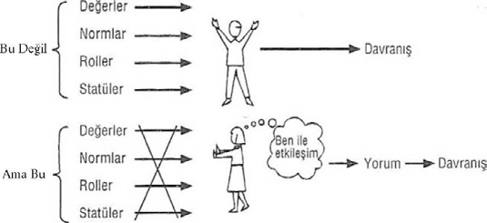
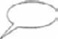

Entelektüel Kökler
Bölüm 5 - SİMGESEL ETKİLEŞİMCİLİK
Giriş
Simgesel etkileşimcilik terimi, Herbert Blumer tarafından ortaya konulan ve onun, “Man and Society’de yazmış olduğum bir makalede rastgele türettiğim biraz kabaca bir neolojizmdir; bu terim artık tutunmuş olup, şimdi genellikle kullanılmaktadır” diye tanımladığı bir terimdir.614
614 Herbert Blumer, Symbolic Interactionism: Perspective and Method, 1969, s. 1,75,70, 71, 62, 37, 40, 34, 87’den alıntılar. Prentice Hall, Upper Saddle River, New Jersey, müsaade ile alıntı.
Man and Society, toplumsal bilimler alanını gözden geçirerek, “toplumsal bilimlerin her birinin konusunu ve yöntemlerini ve ruhunu anlamaya bir giriş” olarak hazırlanmıştır.615 Herbert Blumer, toplumsal psikoloji üzerinde bir bölüm yazmak üzere davet edilmiş ve toplumsal psikologların insan tabiatı hakkındaki görüşlerinin ne kadar farklı olduğunu açıklamak için simgesel etkileşimcilik terimini kullanmıştır. Blumer, toplumsal psikolojinin, daha çok, bireyin toplumsal gelişmesi ile ilgilendiğini ve esas konusunun, bireyin bir topluluğun hayatına katılarak toplumsal yönden nasıl geliştiğini incelemek olduğunu ifade etmiştir.
615 Emerson P. Schmidt, ed., Man and Society (Englewood Cliffs, N. J.: Prentice-Hall, Inc., 1937) s. v.
Blumer, bireyin toplumsal gelişmesini incelemek için “insan yavrusunun hayata beraber başladığı donatımın yapısını”616 ele almanın gerekli olduğunu belirtmiştir. İlk olarak, kendisinin katılmadığı iki görüşü tartışır: akıl dışı doğal dürtülerin önemini vurgulayan içgüdü psikolojisi ve davranışı, sonradan elde edilmiş ama esas itibarıyla dış uyarılara karşı irade harici yanıtlar olarak gören, uyarıcı-tepki (sti-mulus-response) yaklaşımı.617 Blumer, bunları kendi tutumu ile karşılaştırarak, kendi yaklaşımının yeni doğan çocuğu örgütlenmemiş, yönlendirilme ve hayatta kalmak için yetişkinlere muhtaç olarak kabul ettiğini açıklar. Bu görüşüne göre;
616 Emerson P. Schmidt, ed., Man and Society, s. 146-47.
617 George Homans’ın çalışmaları ile ilgili olarak, uyarıcı-tepki yaklaşımını tartıştığımız Bölüm 7 bkz.
bebeğin çocukluğa ve yetişkinliğe doğru gelişmesi, esas itibarıyla, önceki rastgele hareketlerinin yerine, örgütlenmiş ya da birbirleri ile uyumlu olan hareketler geliştirmek ve iç dürtülerini kanalize ederek onlara hedef ya da amaçlar koymaktır. Bu görüş... özgün (ilk) tabiatın önemli olduğunu, ama daha sonraki gelişmeleri tayin edici olmadığını kabul eder. Çocuğun tabiatının etkin ve esnek olduğunu ve şekil almamış iç dürtünün önemini vurgular. Bu, toplumsal psikologlar grubunun kabul ettiği ve ‘simgesel etkile-şimci’ adını verebileceğimiz bir görüştür.618
618 Schmidt, Man and Society, s. 151-52.
3Böylece, bu terim ortaya çıkmıştır. Ancak bütün söylediklerine rağmen Blumer’ın simgesel kelimesini kullanması gelişigüzel bir adı değil, önemli kuramsal bir görüşü ifade eder. Blumer, Man and So-ciety’de simgesel etkileşimin temel taşını şöyle belirler: bir topluluktaki insanların sahip oldukları ortak simgeler ve anlayışlar takımı.619 Simgesel etkileşimciler, çocuğun çevresindeki anahtar öğelerin, etrafındaki kişileri yönlendiren simge ve anlayışlar olduğunu kabul eder. Çocuğun toplumsal çevresini simgeleştiren, bu ortak simge ve anlayışlardır, ve bu bakış açısı, simgeler ve anlayışlara fevkalade önem vermektedir.
619 Schmidt, Man and Society, s. 159.
Demek ki, simgesel etkileşim, esas olarak sosyal-psikolojik bir bakış açısıdır: “bir beni olan” bireye ve bir kişinin içsel düşünce ve duyguları ile toplumsal davranışı arasındaki etkileşime odaklanır. Çözümlemenin büyük bir bölümü insanlar arası ufak çaplı ilişkiler ile ilgilidir. Bireyler, dış güçlerin karşısında pasif varlıklar olarak değil, kendi hareketlerini yorumlayan, değerlendiren ve tanımlayan, kendi davranışlarını etkin bir şekilde inşa eden kişiler olarak kabul edil-mektedir.620 Simgesel etkileşim, aynı zamanda, bireylerin karar verme ve fikirleri oluşturma süreçlerini de vurgular.
620 Kuram yapılandırılmasında Anthony Giddens’ın çalışmaları Bölüm 4’de tartışılmıştır; bu kuram insan âmilinin rolünü yani toplumsal hayatın maksatlı ve bilgi sahibi aktörlerin etkin bir başarısı olduğu görüşünü simgesel etkileşimcilikten almıştır. Anthony Giddens, Central Problems in Social Theory (Berkeley: University of California Press, 1979), s. 50 bkz.
Simgesel etkileşimcilere göre, etkileşim biçimi ilgili özel durumdan doğar. Bu, Blumer’ın işlevselcilerin “deli gömleği” adını verdiği, normlara verdikleri ağırlık ile, birçok etkileşimin önceden tespit edilmiş olduğu fikrini veren yaklaşımın karşıtıdır. Simgesel etkileşimciler toplumsal kuralların etkisini kabul etmekle beraber, onların en önem verdiği başlıca husus ne budur, ne de diğer kuramcıların üzerinde durdukları “ortalama” (vasat) davranış ve kurumların genel şeklidir.621 Daha doğrusu, simgesel etkileşimciler, başlıca, bireylerin belirli kararları ve hareketlerini bütünüyle açıklamaya ve bunların önceden belirlenmiş kurallar ve dış güçlerle açıklama olanağının olmadığını göstermeye uğraşırlar.
621 Örneğin: “ConflictTheory”ye bakınız (Bölüm 3).
Entelektüel Kökler: Max Weber ve Georg Simmel
7Simgesel etkileşimcilerin öncüleri ve bu bakış açısına doğrudan katkıda bulunanlar Georg Simmel, Robert Park, William Isaac Thomas, Charles Horton Cooley, John Dewey ve George Herbert Mead’dir.622 Bu arada Max Weber de anılmalıdır; çünkü, sosyolojiyi tanımında verstehen (yorumlayıcı anlayış ya da öznel anlam)’in önemine ağırlık vermiştir:
622 Blumer, bunlara ek olarak E. W. Burgess, Florian Znaniecki, Ellsworth Faris, James Mickel ve William James’i sayar. Blumer, Symbolic Interactio-nism, s. 78.
Sosyoloji, toplumsal eylemi (social action), izlediği yol ve etkilerinin nedensel açıklamasına varmak için, yorumlayıcı olarak anlamaya çalışan bir bilimdir. Eylem, eyleyen bireyin öznel bir anlam verdiği bütün insan davranışını içerir. Bu anlamda eylem, ya açık ya da tamamen içkin veya öznel olabilir; bu, bir duruma olumlu müdahale ya da böyle bir müdahaleden bilerek kaçınmak veya duruma edilgin olarak katılmaktır. Eylem, eyleyen birey (ya da bireyler) tarafından başkalarının davranışlarını hesaba katarak yönlendirildiği ve öznel anlam taşıdığı için toplumsaldır.623
623 Max Weber, The Theory of Social and Economic Organization, trans. and ed. A. M. Henderson and Talcott Parsons (New York: Oxford University Press, 1964), s. 88. Vurgu bize aittir. Telif hakkı Talcott Parsons, 1947, 1975. Macmillan Inc.in bir bölümü olan The Free Press’in müsaadesi ile yeni baskı.
Bireyin bir durumu yorumlamasına ve öznel anlamın önemine verdiği ağırlıkla, Weber’in eylem kuramı simgesel etkileşimciliğin doğmasını etkilemiştir. Bu metnin baş kısımlarında Weber’in çatışma kuramına olan etkisi üzerinde durmuş bulunuyoruz.624 Onun simgesel etkileşimci bakış açısı üzerindeki anlamlı etkisi kuramsal katkılarının önemi ve makro ve mikro bakış açıları arasında köprü kurma kabiliyetini sergilemektedir.
624 Bölüm 3’e bakınız.
Robert Park’ın entelektüel akıl hocası olan Georg Simmel, bu bakış açısının gelişmesinde çok önemli yeri olan bir kişidir. Simmel’in ilk simgesel etkileşimciler üzerindeki etkisini, sosyolojik çözümlemeye bu yaklaşımın birçok görüşlerini savunmasını inceleyerek anlayabiliriz:
Kendimizi büyük toplumsal oluşumlarla sınırlandırmak, kendisini kalp, karaciğer, akciğer ve mide gibi organlar ile sınırlayan eski anatomi biliminin genel olarak isimsiz veya bilinmeyen sayısız dokuları ihmal etmesine benzer. Bunlar olmadan bu belirgin organlar hiçbir zaman yaşayan bir organizma (uzviyet) olamaz.
Bunun gibi, Simmel, toplumun “sayısız ufak sentezler”den oluştuğunu söyler. Bu insan bağlantılarını şöyle anlatır:
İnsanlar birbirlerine bakarlar. Birbirlerini kıskanırlar; aralarında mektuplaşırlar veya birlikte yemek yerler; bütün elle tutulur çıkarlarına rağmen birbirlerinden hoşlanırlar veya hoşlanmazlar; özge-cil (altruistic) hareketler onları birbirlerine bağlar; bir adam bir başkasına bir sokağı sorar ve insanlar birbirleri için giyinir ve süslenirler. İnsanlar arasında, geçici veya kalıcı, bilinçli veya bilinçsiz, önemsiz ya da ciddi sonuçları olan bütün bu hareketler, insanları durmaksızın birbirlerine bağlar. İşte burada, toplumun atomları arasında etkileşim vardır. Bunlar, çok çarpıcı ama çok da gizemli olan toplum hayatının bütün katılığı, esnekliği, bütün renkleri ve tutarlılığının nedenidir.625
625 Kurt H. Wolff, ed. and trans., The Sociology of Georg Simmel (New York: The Free Press, 1950), s. 1-10. 1978, The Free Press yayınevinin müsaadesi ile yeni baskı.
Simmel’in sözleri, toplumsal sistemlerin çözümlemesi ile ilgilenen toplumbilimcilerin aksine, bireysel davranışı çözümleyenler için cesaret vericidir. Bu, yalnız bireysel davranışın ayrıntıları ilginç olduğundan değil, bireysel düzeyde “toplumun atomları” arasında, bütün ulus içinde yankılanacak bazı önemli kararlar alınmakta olduğundandır. Simmel’e göre, bu kararlar, “deneyimlerimizde karşılaştığımız toplumun gerçek hayatının parçalarını bir araya getirmeye” yardım eder. Buna çarpıcı bir örnek, Watergate binasında 17 Haziran 1972 günü akşamında bir kapının kilidi üzerinde bir bandı farkeden güvenlik görevlisi Frank Wills’in kararıdır. Kontrol için ilk dolaşması sırasında bu bandı kaldırmıştır. İkinci dolaşımı sırasında aynı kapının yine bantlanmış olduğunu görünce, durumu yeniden gözden geçirerek polise telefon etmeye karar verir. Bazı toplumbilimciler, Başkan Nixon’ın istifasına, kampanyalara konulan malî sınırlamalar gibi, parti yapısında değişikliğe yol açan birtakım olaylara neden olan bunun gibi bir davranışın tahlili ile ilgilenirler. Birçoklarına göre, böyle çözümleme yapma ilhamı Georg Simmel’den gelmiştir; ve Simmel’in biçimsel (formal) sosyolojisi, “toplumsal alanın geometrisi”, bir model olmuştur.626
626 Lewis A. Coser, Masters of Sociological Thought (New York: Harcourt Brace Jovanovich, 1977), s. 215.
Simmel’in anahtar kavramları ikili(dyad)lik ve üçlü(triad)lüktür. Simmel, toplumsal hayatta rakamların önemini vurgularken, ikili bir ilişkide katılanların her biri diğeri ile karşı karşıyadır, der. Böylece, bunlardan hiçbiri sorumluluğu topluluğa atarak, ondan kaçamaz. Çünkü bir ikili yalnızca iki katılımcıya dayanır ve birinin çekilmesi bütünü bozar.627 Ancak bir ikilinin üçlüye dönüşmesi, büyük bir niteliksel değişime neden olur. Üçlü bir ilişkide, bir katılımcı çoğunluğun oyu ile dışlanmak tehlikesi ile karşılaşabilir. Böylece, üçlü, katılımcıların ikisinin birleşmesi ile kendi iradesini bir katılımcıya zorla kabul ettirebilir. Üçüncü katılımcıya açık üç strateji tipi vardır: diğer ikisi arasında aracı rolü oynayarak, kümenin bozulmasını önlemek; diğer ikisi arasındaki anlaşmazlığı kendi menfaati için kullanmak ya da kendi menfaati için diğerleri arasında bilerek çatışma yaratmak. Simmel’in üçlü ilişkilerle ilgili mikrososyolojik örnekleri, iki erkeğin bir kadın için rekabet etmelerini de içerir. Bir kolej yatakhanesinde oda arkadaşı olarak bir üçüncünün eklenmesi, yaşlı bir ebeveynin evli oğlan veya kızının evine taşınması ya da bir yetişkinin kendi anne ve babasının evine orada yaşamak üzere yerleşmesi gibi üç kişilik topluluğa başka örnekler de vardır.
627 Wolff, The Sociology of Georg Simmel, s. 124.
Almanya’daki Georg Simmel ile Chicago Üniversitesi’nde bir toplumsal psikologlar topluluğu arasındaki bağlantı, Simmel’in sınıfına bir yıl devam eden Robert Park tarafından kurulmuştur. Park, şöyle yazar: “Gazeteyi ve toplumu incelemek için gerekli bir temel bakış açısını nihayet Simmel’den elde ettim”.628
628 Paul J. Baker, “The Life Histories of W. I. Thomas and Robert E. Park, with an Introduction by Paul J. Baker, American Journal of Sociology 79 (1973): 256.
Simmel’in bir etkileşim sistemi olarak toplum kavramı, toplumsal alan geometrisine ilgisi ve toplumsal süreç üzerinde önemle durması Park tarafından benimsendi ve simgesel etkileşimciliğin doğum yeri olan Chicago Üniversitesi’ndeki meslektaşlarına ve öğrencilerine aktarıldı.
Simgesel etkileşimciliğe anlamlı bir kuramsal katkı William Isaac Thomas’ın, “durumun tanımlanması” (definition of situation) görüşüdür. Thomas, bireylerin daha önceki bir zamanda tepki verdikleri uyarıcıyı görmezden gelme imkânları ve “bireyin kendi iradesine dayanan her davranışta her zaman durumun tanımlanması diyebileceğimiz bir inceleme ve düşünme safhası”629 olduğuna inanır. Tho-mas’ın bundan daha da önemli inancı, insanların durumu tanımlamalarının davranışçı sonuçları olduğudur. Thomas’ın teoremi şöyle ifade edilir: “Eğer insanlar durumları gerçek olarak tanımlamışlarsa, bunların sonuçları da gerçektir.”630 Ona göre, araştırmacılar durumun öznel anlamlarına ya da tanımlarına dikkat etmedikleri takdirde, insan faaliyetini anlayamayacaklardır. Örneğin Jennifer Pierce avukatlık firmalarında cinsiyet farklılıklarını incelerken dâvalarda bir erkek muhasımın, hasım rolü ile ilgili durum tanımını şöyle vermiştir:
629 William I. Thomas, The Unadjusted Girl (Boston: Little, Brown, 1923), s. 41.
630 William I. Thomas, (with Dorothy Swaine Thomas), The Child in America (New York: Alfred A. Knopf, 1928).
Bu işte saldırgan ve sinsi olmanız gereklidir. Bu, işin bir parçasıdır. Beğenmeyen sızlanmayı kesip defolup gitmelidir... Kadınlar sert hasım olacak kadar taşaklı değillerdir.
Bu, erkeklerin daha iyi yapabileceği şeylerden biridir... Kadınlar ancak dâvâ özetleri yazmakta başarılıdırlar.631
631 Jennifer L. Pierce, Gender Trials: Emotional Lives in Contemporary Law Firms (Berkeley: University of California Press, 1955), s. 136-37.
Gündelik hayatımızda hepimiz, kadın ve erkek, genç ve yaşlı insanların ve daha yüksek ve alt sınıf işçilerin aynı durumu farklı tanımladıklarını biliriz. İnsanların haberleri, bir filmdeki hikâyeyi, spor olaylarını ve hattâ bayrak, bulaşık makinesi ya da bilgisayar gibi ortak kültürel nesneleri nasıl çeşitli şekillerde yorumladıkları ve değerlendirdiklerine bakınız. Örneğin, küçük çocuklar çoğu zaman hayâlî bir oyun arkadaşı yaratırlar. Çocuk için gerçek olan bu oyun arkadaşının ailenin diğer üyeleri için de sonuçları olabilir. Bu oyun arkadaşı ile, ona sofrada bir fazla yer ayıracak kadar etkileşebilirler.
Thomas ile birlikte Park, öğrencileri kendi şehirlerindeki toplumsal süreçlerin çeşitli görünümlerini incelemeye teşvik etmiştir. Park’ın öğrencileri toplumsal yapıyı, toplumsal hayatın “hareketsiz” resimlerini çeken bir fotoğraf makinasıyla inceleme yerine, hayatı olmakta olduğu gibi yakalayacak doğal yaklaşımlı “hareketli fotoğraf makinesi”ni kullanmışlardır. Chicago Okulu, Thomas ve Znaniec-ki’nin ilk Polonyalı göçmen kuşağının uyum sağlama süreci ile ilgili klasik araştırması, The Polish Peasant in Europe and America (Avrupa ve Amerika’da Polonyalı Köylüler); Frederick M. Thrasher’ın çocuk suçluluğu ile ilgili araştırması, The Gang (Çete); Louis Wirth’ün Chicago’nun ilk kuşak Yahudi göçmenlerinin çoğunun yaşamakta oldukları yoğun nüfuslu bölgede yaptığı inceleme, The Ghetto (Getto); ve Harvey W. Zorbaugh’ın Chicago’nun zengin ve yoksul bölgelerinin karşılaştırmalı çözümlemesi, The Gold Coast and the Slum (Altın Sahili ve Kenar Mahalleleri) gibi eserler vermiştir.632
Faris’in, Chicago sosyolojisinin “altın çağı” tanımlamasına bakınız. R. E. L. Faris, Chicago Sociology 1920-1932 (Chicago: University of Chicago Press, 1970). Mary Jo Deegan, “Symbolic Interaction and the Study of Women: An Introduction”, Mary Jo Deegan ve Michael Hill, eds. Women and Symbolic Interaction (Boston: Allen and Unwin, 1987), s. 3-15 de Chicago Simgesel Etkileşimcilik Okulu’nun kuruluş yıllarında Chicago dünyasını anlatan Jane Addams’ın bu okulun büyük kişileri arasında yer alması gerektiğini yazmıştır. Jane Addams, Twenty Years at Hull-House (New York: Macmillan, 1910) bakınız. Addams’ın Mead ve Thomas’ın çalışmaları ile ilişkisinin bir çözümlemesi için Mary Jo Deegan’ın, Jane Addams and the men of the Chicago School: 1890-1918 (New Brunswick, N.J.: Transaction Press, 1986) bakınız. Jane Addams dâhil, klasik sosyoloji kuramına katkıda bulunan şimdiye kadar bilinmeyen onbeş kadın toplumbilimci ile ilgili, Patricia Madoo Lengermann ve Jill Niebrugge-Brantley, The Women Founders: Sociology and Social Theory, 1830-1930 (New York: McGraw-Hill, 1998).
Ann Arbor’da, kendisinin de okuyup mezun olduğu Michigan Üniversitesi’nde ömür boyu ders vermiş olan Charles Horton Coo-ley, aynı zamanda, simgesel etkileşimciliğin öncüsüdür. Önemli katkılarından biri, “aynadaki ben” kavramına -yani etkileşime girmiş olduğumuz başka kişilerin bizimle ilgili değerlendirmelerinin sonucu bize dönen bilgi kapsamında kendimiz ile ilgili anlayışımıza- yaptığı katkıdır. Cooley’e göre, aynadaki benin üç öğesi, “başkasının bizim görünüşümüz ile ilgili olarak kabul ettiğimiz bize dönen imgemiz; onun bu görünüşümüz ile ilgili düşüncesi ile ilgili imgemiz; ve gurur veya küçük düşme gibi kendimizle ilgili duygular”633dır.
633 Charles Horton Cooley, Human Nature and the Social Order (New York: Charles Scribner’s Sons, 1902), s. 184.
Cooley’in işaret etmiş olduğu gibi, ayna, başkalarının bizim görünüşümüz ile ilgili değerlendirmelerinin imgelemesini (imagination) göstermemektedir ama, ona göre, bu gerekli bir öğedir. Cooley, “insanların birbirleri ile ilgili imgeleri toplumun somut gerçekleridir ve toplumbiliminin başlıca amacı bunları gözlemlemek ve yorumlamak olmalıdır”634 der. Başka bir deyişle, hem daha büyük toplumsal yapı ve endüstriyel örgütler ile siyasal partiler gibi oluşumların bu “somut gerçekler” üzerine oturtulması gereklidir.
634 Cooley, Human Nature and the Social Order, s. 121.
Ancak, simgesel etkileşimcilik bu öncüler tarafından değil, iki büyük kuramcı olan George Herbert Mead ve Herbert Blumer tarafından sistemleştirilmiştir. Toplumsal kuramcılarca Blumer simgesel etkileşimciliğin entelektüel lideri olarak görülse bile, Blumer, hocası George Herbert Mead’e çok şey borçludur. Simgesel etkileşimciliğin öğelerinin çoğu Mead kökenlidir ve Blumer, Mead’i düşüncesinde en önemli etki odağı olarak kabul eder.
Kısım Bir - George Herbert Mead: Ben/Benlik (The Self)
20George Herbert Mead (1863-1931) hakkında, “modern toplumsal bilimin karakterine şekil vermeye yardım etmiş olan bir avuç Amerikan düşünürü arasında sayılabilir” denilmiştir.”635 Mead’in babası, Mead’in 1883’de lisans( B. A.) derecesini aldığı Oberlin’de “homile-tics”* dersi veren Puritan bir din adamıdır. Annesi, babasının ölümünden sonra, Mount Holyoke Koleji’nin müdiresi olmuştur. Felsefe ve Yunanca’da bir yıllık ek öğrenimden sonra Harvard’da 1888’de ikinci lisans derecesini kazanmıştır.636 Mead Harvard’da yüksek öğrenimi sırasında Josiah Royce ve William James ile çalışmış ve sonucunda pragmatik felsefeye yakınlaşmıştır. Avrupa’da Leipzig’de Wil-helm Wundt’un yanında okumaya devam etmiş ve orada G. Stanley Hall ile tanışmış ve daha sonra Berlin’de öğrenimini sürdürmüş ama doktorasını hiçbir zaman tamamlamamıştır. Ülkesine döndüğünde, Ann Arbor’da Michigan Üniversitesi’nde iki yıl ders vermiş ve orada. John Dewey ve Charles Horton Cooley ile tanışıp arkadaş olmuştur. Dewey, Chicago Üniversitesi’ne geçince, Mead onu takip etmeye karar vermiş ve 1931’de ölümüne kadar orada, felsefe bölümünde ders vermeye devam etmiştir.
635 Coser, Masters of Sociological Thought, s. 347.
* Vaaz sanatı veya ilmi (çev.).
636 Chicago Üniversitesi’nin 1908-09 Yıllığı’ndan, Mead’in eğitim geçmişini gösteren bir sahifenin kopyasını bize veren Profesör Harold L. Orbach’a teşekkürlerimizi bildirmek isteriz.
Mead, hayatta iken seksen makale yayınlamıştır. Yazılarının yarısından fazlası, göçmenler, yerleşme evleri, kadınların oy kullanma hakları ve istihdamı, eğitim ve demokrasi gibi reform sorunları ile ilgilidir. Bu konuların çoğunda arkadaşı ve meslekdaşı Jane Addams’ dan derinden etkilenmiştir. Deegan, Mead’in 1912’deki kadınların oy kullanma hakları ile ilgili mitingde konuşmuş ve birkaç yıl sonra, “aynı amaç için, John Dewey, Jane Addams ve Chicago’nun diğer önde gelen yurttaşları ile beraber Michigan Caddesi’nde yürümüş” olduğunu açıklar.637
637 Deegan, Jane Addams and the Men of the Chicago School, s. 106-116’ya bakınız.
Kitapları, öldükten sonra, öğrencilerinin ders notlarından toplanarak basılmıştır. Bunlardan en önemlisi Mind, Self and Society olup, Mead’in kuramını açıklamakta temel kaynaklarımızdan biri olacaktır. Burada gündeme getirmek üzere seçtiğimiz dört öge benlik, benlik etkileşimi, benliğin gelişmesi ve simgesel anlamdır.
Benlik (The Self)
Mead’in “benlik” (the self) ile ilgili görüşü simgesel etkileşimciliğin esasıdır. Mead benliği bir dürtüye maruz kalan ve yanıt veren edilgin bir alıcı olarak değil, hareket eden bir organizma olarak görür. Ona göre benlik, bir aktördür. Blumer, şu açıklamayı yapar:
Mead’e göre benlik, ‘toplumsal yapı ve kültürün bünyeye kabulünden çok daha öte bir şeydir. Daha çok, bir toplumsal süreçtir, öyle bir etkileşim süreci ki, orada beşerî aktör, içinde hareket etmekte olduğu durumlardaki meseleleri kendisi belirler ve bu meselelerle ilgili kendi yorumları yolu ile hareketlerini düzenler. Mead, aktör, başkalarının rollerini alarak, bu roller yolu ile kendisine hitap eder ve bunlara yanıt vererek, kendisi ile bu toplumsal etkileşime girer, der. Mead’in toplumsal psikoloji planının temelinde, aktörün kendi kendisine olguları belirlediği ya da işaret ettiği bu, ben etkileşimi görüşü yatar.638
638 Herbert Blumer, “Comments on Parsons as a Symbolic Interactionist”, Sociological Inquiry 45 (1975): 68.
Demek ki, etkin ve yaratıcı olan, benlik’tir; ben’in eylemlerini “belirleyen” toplumsal, kültürel, ya da psikolojik ögeler yoktur. Blumer kendi ders verdiği sınıfta Mead’in düşüncelerini öğrencilere anlatırken, çoğu kez Şekil 5-1’i çizerek, toplumbilimcilerin farklı benlik görüşlerini belirtirmiş. Burada, simgesel etkileşimcilerin, işlevselcile-rin ben görüşünde neleri reddettiklerini görebiliriz. Parsons gibi iş-levselciler, bireyi toplumsal ve psikolojik güçlerin altında durgun bir varlık olarak görme eğilimindedirler. Blumer şöyle der: “İnsan eylemine şekil veren benlik sunumu/kendini belirtme (self-indication) süreci, eylem öncesindeki etkenlere bağlanamaz”639 Blumer’ın tahminine göre, George Homans gibi toplumsal alışveriş kuramcıları da insanlarla ilgili bu edilgin (passive) görüşü paylaşmaktadırlar. Blu-mer şöyle yazar:
639 Blumer, Symbolic Interactionism, s. 82.
Benlik ya da insan, toplumsal öğelerin yanında yalnız dürtüler ve çıkarlar gibi psikolojik ögeler ile açıklanamaz. Bu ekler, eksik bıraktığımız şey dolayısı ile içine düştüğümüz yanlışı daha da ağırlaştırır. Bu, George Homans’ın, ‘İnsanı Geri Getirmek’ konulu başkanlık konuşmasındaki hatasıdır.640
640 Blumer, Symbolic Interactionism, s. 64. Bölüm 7’de Homans’ın konuşması üzerinde durulmuştur.
Mead, birey ile ilgili bu edilgin görüşe karşılık, insanların, ben ile etkileşim mekanizması sonucu kendi hareketlerine şekil verip, yönlendirme kabiliyetlerini vurgular. Mead’e göre, kişiler kendi çevrele

Şekil 5-1. Blumer’ın Birey ile ilgili görüşü.
rini etkilerler ve böyle yaparak o çevreyi dolduran nesneleri yaratırlar. Daha önceden var olan ve bireyden bağımsız olan “şeyler” (things) veya uyarıcılar (stimuli) ile, yalnız hareketlerle bağlantıları nedeni ile var olan “nesneler” (objects) arasında ayırım yapar ve “şeyler”in, bireylerin hareketleri ile “nesneler” hâline dönüştüğünü söyler.641 Örneğin, yenildiği zaman bir beslenme nesnesi olan domates, birilerine atıldığı zaman öfke ifade eden bir nesne olur. Birey, bir yerde domatesi gıda maddesi olarak kullanırken, bir başka yerde silah hâline getirir. Domates esas itibarıyla bunlardan hiçbiri değildir; birey onu kullanmaya başlamadan önce sadece bir “şey”dir. Böylece, Mead’in “birey”i (person), toplumsal alışverişçi ve işlevselci kuramcıların “bireyi” ya da “ego”suna göre, daha etkin ve yaratıcıdır.
641 George J. McCall and J. L. Simmons. Identities and Interaction (New York: The Free Press, 1966), s. 50-51’e bakınız.
Simgesel etkileşimcilik, beni farklılaşmamış bir şey olarak ele almayı özellikle reddederek, belirlemeci (deterministic) bir yaklaşımdan kaçınır. Mead, benlik ile ilgili iki “evre” belirler. Bunlardan biri, Mead’e göre, organizmanın başkalarının tavırlarına karşı örgütlenmemiş yanıtı, hareket etmek için kendiliğindenliği dürtüsü Ben’dir (the “I”). Diğeri ise, başkalarınca örgütlenmiş olup, bireyin de kabullendiği bir dizi tavır alış olan Beni/Bana (the “me”); yani bireyin başkalarından öğrenmiş olduğu kendisi ile ilgili bakış açılarıdır.642 Mead, “Başkalarının tavır alışları örgütlenmiş olan beni/bana (“me”)’yı oluşturur ve ondan sonra birey ben (“I”) olarak buna karşı harekete geçer”,643 der. ‘Beni/bana’ (the “me”) toplumsallaşmış bireyin davranışına kılavuzluk eder ve benlik’in (the self) bu yönü, bireyin bilincine başkalarının etkisini getirir. Öte yandan, Ben’in (the “I”) hiç hesaba sığmayan kendiliğindenliği bir ölçüde icat ve yaratıcılığa imkân verdiği gibi, bir ölçüde de başkalarının denetiminden kurtulmasını sağlar.644 Mead şöyle yazar:
642 McCall and Simmons, Identities and Interaction, s. 55’te tartışmaya bakınız.
643 George Herbert Mead, Mind, Self and Society (Chicago: University of Chicago Press, 1934), s. 175.
644 Buna karşılık, işlevselcilik yalnız 2. Ben’e (me) müsaade eder; 1. Ben (I) Mead’in ben (the self) görüşüne ilavesidir. Bölüm 2’ye bakınız. Bize göre, 1. Ben, Kuhn’un, “Iowa” simgesel etkileşim okulunda yoktur; bu yüzden onu bu metne almamış bulunuyoruz.
“Ben” (The “I”) ve Beni/bana (the “me”) ilişkisindeki “Ben”, bireyin deneyiminin içerisinde olan toplumsal bir duruma, bir şeyin yanıt vermesi gibidir, denebilir. Bu, kişi bir tavır içine girdiğinde, diğerlerinin ona karşı tavırlarına verdiği yanıttır. Şimdi ise, onlara karşı aldığı tavır yeni bir öge içerir. Ben, bir özgürlük ve girişim duygusu verir.645
645 Mead, Mind, Self and Society, s. 177.
Ş u hâlde, benlik, özne olarak hareket ettiğinde Ben’dir; ama hareketin hedefi olduğunda beni/bana’dır. Mead şöyle bitirir:
Benlik, bu iki ayrı evre içinde davranan ve esas itibarıyla toplumsal bir süreçtir. Eğer bu iki evre olmasa idi, bilinçli sorumluluk ve deneyimde hiçbir yenilik olmazdı.646
646 Mead, Mind, Self and Society, s. 178.
Benlik Etkileşimi
Mead, “deneyimde yeni”ye yer verdiği için, toplumsal bilimcilere, “yapılaşmamış” ve daha önceden yerleşmiş olan alışkanlıkların etkisi altında olmayan davranışı inceleme olanağı verir. Örneğin, simgesel etkileşimciler, Roentgen’in X ışınlarını bir tesadüf olarak buluşunu incelemek isteyebilirler. Thomas Kuhn’a göre, Fizikçi Roentgen, katod ışınlarını normal şekilde incelerken, deşarj (boşalma) süresi sırasında, koruma cihazının biraz ötesinde bulunan bir baryum platinosiyanit levhasının parlamakta olduğunu görünce, incelemesini durdurdu. Roentgen’in laboratuarından hemen hemen hiç ayrılmadığı yedi hafta süren daha sonraki araştırmaları, bu parlamanın düz hatlar hâlinde katod ışın tüpünden geldiğini ve radyasyonun düşürdüğü gölgelerin mıknatıs ve daha başka birçok şeyden etkilenmediğini gösterdi. Roentgen bu keşfini açıklamadan önce, bunun katot ışınlarından değil, ışığa biraz benzer bir kaynaktan geldiğine inanmış idi.647
647 Thomas S. Kuhn, The Structııre of Scientific Revolutions (Chicago: University of Chicago Press, 1970), s. 57. Telif hakkı 1962, 1970 University of Chicago Press’e ait.
Kuhn, X ışınlarının, çok yerleşik olan beklentilere uygun düşmediği için, hayret ve şaşkınlık ile karşılanmış olduğunu da ilave eder.648
648 Kuhn, The Structure of Scientific Revolutions, s. 59.
Kuhn’un açıklamasına göre, Roentgen’inki gibi bir buluş, bir “paradigma değişikliği” ile beklentiler ve laboratuar işlemlerinde değişikliği gerektirir. Kuhn, paradigma’ları (modeller ya da küçük çapta kuramlar), “herhangi bir uygulayıcılar topluluğuna bir süre için örnek sorunlar ve çözümler sağlayan evrensel olarak geçerli bilimsel başarılar” diye tanımlar ve değişikliklerin her zaman önemli ölçüde direnişlerle karşılaşacağını vurgular.649
649 Kuhn, The Structure of Scientific Revolutions, s. VIII.
34Roentgen gibi bir araştırmacının böyle rastgele bir keşif yapması -yani modelinin onu böyle bir şeyi algılaması için hazırlamamış olduğu bir şeyi algılaması- niçin bu kadar az karşılaşılan bir olaydır? Kuhn’a göre, böyle bir keşif, yeni gerçekler ya da kuram peşinde olmayan normal bilim fikrine zıttır. İnsanlar, dünyayı “anlamak” ve algılamakta kullandıkları kuram ve fikirleri terk etmektense, mevcut modelden vazgeçmemiş olduklarını göstermek için sıra dışı buluşları kendilerine göre herhangi bir şekilde açıklamaya çalışacaklardır. Böylece Kuhn, bir sıradışılığın farkına varılması ile başlayan bir buluşun, bu uymazlık alanının az çok etraflı bir araştırması ile devam etmesi gerektiğini, ondan sonra bir paradigma kuran düzenleme sonucuna varacağını söyler.650
650 Kuhn, The Structure of Scientific Revolutions, s. 52-53.
Mead, Roentgen’in, araştırmalarına devam ederek, araştırmalarının sonuçlarını herhangi bir şekilde açıklama yerine; x ışınlarını keşfetmesini Roentgen’in benlik etkileşimine (self-interaction) bağlayacaktır. Roentgen, en sonunda bir keşif yaptığına kendisini inandırmadan önce, o önemli günlerde kendi kendisine ne demiştir? Her şeyden önce, mevcut paradigmaya rağmen bir parlaklık görmüş olduğu; bunun, hayâl gücünün bir parçası, yorgunluktan ileri gelen bir serap veya önemsiz bir acayiplik olmadığı hususunda kendisini ikna etmesi gerekirdi. Laboratuarda geçen 7 hafta içinde, Roentgen kendi kendisine tekrar tekrar, bu olgunun nasıl ortaya çıktığını, nereden geldiğini, bu parlaklığa neyin neden olduğunu, hangi koşullar altında ve niçin meydana geldiğini sormaya devam etmiş olmalı idi. Bir çeşit benlik etkileşimi sonucu, Roentgen nihayet, kendisini bir keşif yaptığına ikna etmiştir; ve kendisini ikna edip etmediği, bu karşılıklı konuşmanın içeriğine bağlıdır.
İnsanın kendi kendisiyle sürdürdüğü “iç konuşmalar” Meadci bakış açısının gerekli bir parçasıdır; çünkü insanlar bu yol ile etraflarındaki şeyleri hesaba katarak hareket etmek üzere örgütlenirler. “Benlik etkileşimi”, Mead’in insan hareketi anlayışının temelinde olup, rol almanın da esasını oluşturur. Mead’e göre, haberleşme, her kişinin, “başkasının rolünü aldığı” bir süreçtir; yani her kişi, “hem başka bireyin tavrını alır, hem de bu tavrın başkasında ortaya çıkmasına neden olur”, ve bu da benlik etkileşimi olmadan imkânsızdır. Mead’in rol alma (role-taking) betimlemesi, her insanın kendisini başkasının yerine koymasının önemini vurgular. Mead şöyle yazar:
37Bir başkasını heyecanlandıran ve etkileyen kimsenin kendisi, bu bir başkasının rolündedir. Diğer kimsenin rolünü almak suretiyle kendisine geri gelerek, kendi iletişim sürecini yönlendirir. Sıklıkla kullandığım bu bir diğer kimsenin rolünü almak, hafife alınacak bir husus değildir... Bu şekilde rol almanın en yakın sonucu, kişinin kendi yanıtını kontrol etmesini sağlamasıdır.651
651 Mead, Mind, Self and Society, s. 254.
Meadci benlik etkileşimi görüşünün cazip taraflarından biri, insanın günlük deneyimlerinde “anlamlı” oluşudur. En son olarak, kendi başınıza yürürken (örneğin sınıfa giderken) “kendi kendinize konuştuğunuz” konular olduğunu anımsayacaksınız -bir şeyi yapmanız veya yapmamanız gereğini, bir yere telefon etmeyi, bakkala uğramayı, kütüphaneye gitmeyi kendinize hatırlatmak gibi. Yine bunun gibi, insanın, belirli bir duruma nasıl yaklaşması, bir insanla karşılaşıp karşılaşmaması ve bunu nasıl yapması gerektiği gibi hususlarda “kendi kendisi ile konuştuğu”nu hatırlamak için çok geriye gitmesi gerekmez. Böyle bir durumda, bir anlamda gelecek eyleminizin provasını yapıyor ve sizi diğer kimselerin “rolünü alma”ya hazırlayacak olan bir iç konuşma ile kendinizi örgütlüyorsunuzdur (düzenliyorsu-nuzdur). Örneğin, yakın bir zamanda sevdiği birisini kaybetmiş olan bir arkadaş ile karşılaşmaya kendilerini hazırlama sıkıntısını yaşamış olanlar, arkadaşlarına ne söyleyecekleri ve ona nasıl yaklaşacakları hususlarında kendi kendileri ile ne kadar çok konuşmuş olurlarsa, “diğer kişinin rolünü alma”ya o derece hazır olacaklarını ve etkileşimlerinin o ölçüde etkili olacağını göreceklerdir. Bunun sonucundaki hareketimizi değerlendirip, bu “iç konuşma”nın etkileşimi etkileyip etkilemediğini sorgulayacak olursak, Mead’in insan hareketi kav-ramsallaştırmasının anlamlı olduğunu düşünebiliriz. Blumer, Mead’in insan hareketi fikrini şöyle özetler:
İnsan hareketi (the human act), aktörün durumla ilgili herhangi bir hususuna veya hareketin kendi katılımının herhangi bir tarafına dikkat ederek kendisi ile etkileşimi sırasında oluşur... Hareketin, benlik etkileşimi sürecine maruz kalması, harekete bir yön verir; hareket durdurulabilir, dizginlenebilir, terk edilebilir, yeniden canlandırılabilir, geriye bırakılabilir, artırılabilir, gizlenebilir, değiştirilebilir ya da yeniden yönlendirilebilir. 652
652 Blumer, “Comments on Parsons as a Symbolic Interactionist”, s. 60.
Benliğin Gelişmesi
Mead oynama (play), oyun (game) ve “genelleştirilmiş başkaları” (generalized other) hakkındaki yazılarında, benliğin gelişirken içinden geçtiği üç safha belirler. Benlik gelişiminin ilk safhası olan, yaklaşık iki yaşlarında “oyun öncesi”nin özelliği anlamsız, taklitçi hareketlerdir. Mead’in sözlüğünde anlam (meaning) kelimesi sık sık tekrarlanır ve tek çağrışımı vardır: Anlam, yani düşüncenin konusu olan nesne, bireyin bu nesneye kendi tepkisi olarak, başkasının tavrını taklid ederek o tavrı alması sırasındaki deneyiminden doğar.653
653 Mead, Mind, Self and Society, s. 89.
Başka bir deyişle, bireyler aynı simgesel yorumları paylaşıyorlarsa, hareket onlar için anlamlıdır. “Aynı dili konuşmaktadırlar” ya da “aynı gözlükle bakmaktadırlar”. Öyle ise, anlam, farklı tavırların bir araya gelmesi ve taraflarca aynı anlamın verildiği özel simgelerin kullanılmasıdır.
Mead’in oyun öncesi safhadaki hareketlere “anlamsız” demesinin sebebi, çocuğun bu safhada “diğerlerinin tavırlarını alma” kabiliyetine sahip olmayışıdır. Mead’in açıklamasına göre, bu kabiliyet, çocuk bir benlik geliştirirken yavaş yavaş ortaya çıkar. Çocukluk sırasında, daha sonraki ikinci “oyun” safhası, çocuğun kendisini bir başkasının durumuna koyabileceği, ancak öbür oyuncuların rollerine uyamadığı safhadır. Bir yanda oyun, öte yanda benliğin gelişmesi ve başkasının rolünü almak kabiliyeti, küçük çocukların, yaramazlık yaptıkları için oyuncaklarını azarlamaları ya da üstlerini kirlettikleri veya tehlikeli bir şey yaptıkları için onları ikaz etmelerinde görülebilir. Bunun gibi, çocuklar bu safhada, “öğretmenlik oyunu”, saklambaç ve benzeri bir ya da iki rol ve katılımcı gerektiren oyunlarda basit rol almalarla başkalarının rollerini oynarlar. Oynama safhasında, oyuncunun aklında her defasında sadece bir rol seçeneği vardır. Mead’e göre bu, çocuğun başkalarının rolünü alarak bir benlik geliştirmeye başladığı zamandır.
Oyun safhasında, hareketin içinde birkaç oyuncu bir aradadır. Bu, takım üyelerinin oyun içinde diğerlerinin verecekleri yanıtları bilecekleri ve dolayısıyla akıllarında bütün diğer oyuncuların tavır ve rollerinin bulunduğu karmaşık, örgütlenmiş oyunlarda olur. Örneğin bir baseball oyununda ‘first base’ oyuncusunun, belirli bir durumda öbür takım üyelerinin ne yapacakları hakkında genel bir bilgisi olması gerekir. Oyun safhasında kişiyi ilgilendiren “başkaları”, oyun içinde olan herkesin örgütlenmiş tavırlarıdır; böylece bu oyuncunun ‘first base’de yaptığı her şey, takımda oynayan herkesçe kontrol edilmektedir. Geniş anlamda, bu ‘genelleştirilmiş başkaları’ tüm topluluğun örgütlenmiş tavırlarını içerir. Mead’in dediği gibi, “bu genelleştirilmiş başkaları içselleştirildiğinde ve topluluk, kişilerin davranışları
üzerinde denetim sahibi olduğunda, olgun benlik ortaya çıkarhâlde, benliğin üzerinde inşa edildiği yapı, herkesçe ortak olan bu yanıttır; çünkü insanın benlik olabilmesi için bir topluluğun üyesi olması gerekir.654
654 Mead, Mind, Self and Society, s. 163.
Mead’i eleştirenler, “genelleştirilmiş başkası” kavramını yeniden değerlendirmişler ve bunun, bireylerin egemen kurumlar tarafından üretilen norm ve değerlerin bireylerce içselleştirilmesi demek olduğundan, Parsons’ın toplumsallaşma tanımına benzediğini ileri sürmüşlerdir. Feministler genelleştirilmiş başkasının, bireyin içine sinmiş olan toplumdaki mevcut güç dağılımını içerdiğine işaret eder-ler.655 Kısacası, genelleştirilmiş başkasını tanımlayanlar -erkekler, üst sınıflar, eğitim görmüş aydınlar gibi- güç sahibi insanlardır.
655 Kathy E. Ferguson, Self, Society and Womankind, (Westport, Conn.: Greenwood Press, 1980), s. 56.
Janet Lever, düzenli çocuk oyunlarında cinsiyet farkları ile ilgili araştırmasında, erkek çocukların daha çok açık havada, daha büyük ve yaş itibarıyla heterojen gruplarda ve kızlara göre daha fazla rekabete dayanan oyunlarda oynadıklarını bulmuştur.656 Lever’e göre, erkek çocukların oyunları onlara genelleştirilmiş başkasının rolünü almalarını öğreterek, onları, çok değişik konumlarda başarılı icraata hazırlar. Buna karşılık, kızlar oyun gruplarında, kendilerini evin mahrem çevresi içerisinde eş ve anne rollerine hazırlayan belirli başkası rolünü öğrenirler. Böylece, çocukların oyunlarının örgütlenme şekli, toplumumuzda geleneksel cinsiyet rolünü korumaya hizmet eder.
656 Janet Lever, “Sex Differences in the Games Children Play”, Social Problems, 24 (April 1976): 478-87.
41Lever, daha çok rekabete dayalı oyunlar oynayan erkek çocukların, takım hedefleri için duygusal disiplinin ve kontrolün gerekli olduğunu öğrendiklerini bildirir. Rekabetten çok, sıra almaya dayalı oyunları daha çok oynayan kızlar, aynı zamanda en iyi arkadaşlarına daha fazla sevgi gösterirler. Lever şöyle der:
Mülâkat yapılan kızlar, hemen hemen her gün beraber oyun oynadıkları bir tek “en iyi” arkadaşları olduğunu söylemişlerdir. Bu arkadaşlarını ve onun ruh durumlarını o kadar iyi öğrenmişlerdir ki, hiç söze gerek kalmadan bir kız çocuğu oyun arkadaşının incinmiş, üzgün, mutlu, canı sıkılmış olduğunu anlar. Bu küçük kızlar arasında genellikle açık sevgi tezahürü vardır.657
657 Lever, “Sex Differences”, s. 484.
Simgesel Anlam
Simgenin anlamı, bir hareketin yalnız ilk öğesi olduğu için değil, hareketin bütününe bir işaret olduğu için Mead’in jest (gesture) tanımından çıkmıştır. Örneğin bir sigara içicisi, sigara paketine uzandığında, bu jest (davranış), sigara içmeyen bir kimsenin odayı terk etmesi, pencereleri açması, sigara içilmesinin yasaklanmasını istemesi ya da, sigara içmeyen o kimsenin, bunun arkasından geleceklerden kaçınmak için başvuracağı benzeri diğer bazı davranışlar göstermesine yetecektir. Bu durumda jest, hareketin ilk parçası, hareketin tamamlanmasını beklemesine gerek olmayan sigara içmeyen kimse için yeterli olacaktır. Hatta bu kişi, sigara içilmesini beklememeyi tercih edecektir. Böylece bir sigara paketine uzanmak sadece bir jest değil, anlamlı bir simge hâline gelecektir: çünkü bu jest, sigara içmeyen için, bütün hareketin anlamını akla getirecek ve bu harekete göre davranmasını başlatacaktır. Mead’e göre, “böyle içselleştirilmiş simgeler önemlidir, çünkü belli bir toplumun veya toplumsal kümenin bütün bireyleri için aynı anlamı taşır; yani, bunları yapan bireylerde, bunlara tepki veren bireylerde neden oldukları aynı tavırlara neden olurlar.”658
658 Mead, Mind, Self and Society, s. 47.
Mead bir simgeyi, “tepkisi önceden verilmiş olan bir uyarıcı” olarak tanımlar. Bir insanın sizi tehdit ettiğini ve sizin de onu yere serdiğinizi düşünün. Mead, burada sizin, topluluğun tavrını alarak, bir jestler alışverişi içerisinde yanıt verdiğinizi söyler. Mead, hakaret edici bir kelimenin nasıl bir simge olduğunu şöyle açıklar:
44Bir kelime, bir de vuruş (yumruk) vardır. Vuruş zaman içinde kelimeden öncedir; ancak, kelime bir hakaret anlamında ise, bunun yanıtı kelimenin içindedir, uyarıcının kendi içinde olan bir şeydir. Bir simgeden anlaşılması gereken bundan ibarettir. Bu yanıt, hareketi daha ileri ölçüde denetlemek üzere kullanılan bir tavır hâlinde verilebiliyorsa, uyarıcı ile bu tavır arasındaki ilişki, bir anlamlı simgedir.659
659 Mead, Mind, Self and Society, s. 181.
Kelimenin anlamı (burada bir hakaret) anahtar ögedir, ve “tepkisi önceden verilen bir uyarıcı” hâline gelir; çünkü, söz konusu olan toplulukta, bu kelimenin anlamı ve kullanılmasının neye işaret ettiği, bu hitaba maruz kalan insanda “uygun” bir yanıt olarak vurma hareketine yol açar. Bir başka önemli öge de, bu süreçte devam etmekte olan “benlik etkileşimi”, bireyin kafasındaki sürdürülen “jestler ko-nuşması”dır. Mead, insanın, yapmakta olduğu şey hakkında düşünmesinin önemini şöyle açıklar:
Biz çoğu zaman nesneler ile ilgili olarak, o nesnelerin anlamı deneyim alanımızda olmasa bile, akıllıca dediğimiz şekilde hareket edebiliriz. Dalgın bir profesörün yaptığı gibi, insan, yemek için giyinmeye başlayabilir ve kendisini pijamalarla yatakta bulabilir. Belirli bir soyunma süreci başlatılmış ve mekanik olarak sürdürülmüştür: bunu yapan, yapmakta olduğunun anlamını kavramamıştır. Yemeğe gitmeye niyet etmiş, kendini yatakta bulmuştur. Bu örnekte bütün adımlar, daha sonra yer alacak olan eyleme göre, davranışı kontrol eden akıllıca atılmış adımlardır; ancak bu kimse yapmakta olduğu şeyi düşünmemiştir. Daha sonraki eylem, tepkisine bir uyarıcı olarak değil, bir kez başlanmış olduğu için kendi kendisini sürdürmüştür.660
660 Mead, Mind, Self and Society, s. 72.
46Bu durum, niçin bir simgesel etkileşim örneği değildir? Bazı önemli öğelerin mevcut olmadığı açıktır. Birey yapmakta olduğunun anlamını fark etmemiştir. Bu hareket, Mead’in ifadesine göre, “bir organizmanın bir başkasının jestine uyarlanmış bir yanıtı”nı içermemek-tir.661 Profesör, jestlerini yorumlamadığına göre (yani geç olduğu veya hasta olduğu için yatmayacak olduğuna göre), hareketin jestlerinde bir anlam yoktur.
661 Mead, Mind, Self and Society, s. 78.
Ayrıca, profesör yapmakta olduğu şeyi düşünmemiştir; yapmakta olduğu ile ilgili olarak kendisi ile konuşmamaktadır. Mead’e göre, anlamlı simgeler anlam taşıyan jestlerdir (bir sigara içicisinin sigara paketine uzanması gibi). Anlamlı simge, hareketin bir başkasında yanıt uyandıran parçasıdır. Bu, hakaret örneğinde olduğu gibi, simgenin yorumunu gerektirir.
Anlamlı simgeler ile benlik arasındaki ilişki, Mead’in, Helen Keller olayı ile ilgili düşüncelerinde daha fazla açıklığa kavuşur. Helen Keller, “ancak simgelerin kendisinde, başkalarında olduğu gibi, yanıtlar uyandırması ile, diğer kişilerle haberleşmeye girince, zihinsel bir içerik ya da bir benlik diyebileceğimiz bir şey elde edebilmiştir”.662 Helen Keller’in hayatında, öğretmeni ve arkadaşı Annie Sullivan’ın su aktarması ve Helen Keller’in akan suyu duyumsadıktan sonra, nihayet “su” ile ilgili jesti anlaması olarak Annie’nin onun avucu içinde yaptığı parmak hareketinin, hecelediğinin suyun adı olduğunu farketmesi olayını hatırlayalım. Sonunda “su” için yapılan jestin ne demek olduğunu anlamıştır. Su olayı, haberleşme yolu ile simgesel anlam sürecinin başlamasına çarpıcı bir örnektir. Keller için bu an, ortak bir simgeler takımı edinmenin başlangıcına işaret eder.663
662 Mead, Mind, Self and Society, s. 149.
663 Helen Keller, The Story of My Life (New York: Doubleday, 1902).
Keller olayı, George Herbert Mead’in kuramının bütün kısımlarına örnektir; çünkü Helen Keller simgesel etkileşimi öğrenir öğrenmez, yalnız bir beni/bana’ya değil, bir ben’e de sahip oldu ve aynı zamanda “başkasının rolünü alma”yı başararak, “genelleştirilmiş baş-kası”nı da içselleştirebildi. Bu, bir toplumsal benliğe (social self) sahip oldu, demektir.
Kısım İki - Herbert Blumer: Yorumlama ve Metodoloji
49Herbert Blumer (1900-1987) George Herbert Mead’in samimi ve sadık bir taraftarı olduğunu söylediği Ellsworth Faris’in nezaretinde doktorasını 1928’de tamamlayarak, 1927 ve 1952 arasında Chicago Üniversitesi Sosyoloji Fakültesi’nde bulunmuştur. Bir öğrenci ve bazı lisansüstü derslerinde de dinleyici olarak Mead’in yanında öğrenimini sürdürmüştür.664 Mead, hastalığı dolayısıyla ayrıldığı Chicago Üni-versitesi’ndeki hocalığının son döneminin başlarında, Blumer’in kendi düşünceleri ile ilgili yorumuna olan güvenini belirtmiştir. Bu münasebetle Blumer’dan kendi “İleri Toplumsal Psikoloji” dersini yürütmesini istemiştir.665
664 Blumer, “Chicago Üniversitesi’nde George H. Mead tarafından fevkalade çok etkilendiğini” söylemiştir. Aynı zamanda, “Birleşik Devletler’in çıkardığı en iyi toplumsal bilim araştırmacısı” olarak gördüğü “Robert E. Park ile yakın mesai arkadaşı olarak çalışmıştır”. (1976’da kendi ifadesi ile)
665 Herbert Blumer, “Going Astray with a Logical Scheme”, Symbolic Interaction 6 (1983): 127-37.
Blumer, Mead geleneğini Chicago Üniversitesi’nde yirmi beş yıl sürdürmüş ve emekliliğine kadar ders verdiği Berkeley’deki Califor-nia Üniversitesi’nde bir yirmi beş yıl daha çalışmıştır. Chicago döneminde profesyonel futbol oyunculuğu, iş anlaşmazlıklarında aracılığı ve Al Capone çetesinin yeraltı mensupları ile mülâkatlar gibi çeşitli faaliyetlerde bulunmuştur. 1941’den 1952’ye kadar sürdürdüğü American Journal of Sociology yayımcılığı, 1956’da American Sociological Association’ın Başkanlığı ve onuruna hazırlanan Festschrift (armağan kitap), Blumer’ın meslekteki yerini ve kendisine karşı duyulan derin saygıyı belirtmeye yeter.666
666 Tomatsu Shibutani, ed., Human Nature and Collectire Behavior: Papers in Honor of Herbert Blumer (Englewood Cliffs, N.J.: Prentice-Hall, 1970)’e bakınız. Bu Festschrift, Blumer’ın birçok eski öğrencisinin yazıları ile, 1970’e kadar Blumer’ın tam bir bibliyografyasını içerir.
Blumer’ın simgesel etkileşime başlıca katkıları: yorumlama üzerindeki çalışmaları, simgesel etkileşimin üç temel önermesi, yapı, süreç ve metodolojidir. Bunların hepsini ayrı ayrı gözden geçireceğiz.
Yorumlama
51Blumer’ın yorumlama ile ilgili tartışması, Mead’in Watsoncu davranışçılık ya da herhangi bir mekanik “uyarı-tepki” (stimulus-respon-se) yaklaşımına karşı görüşlerinin daha genişletilmiş şeklidir.667 Mead gibi, Blumer da, insan etkileşiminin bilimsel açıklamalarında, gözlemlenebilir davranış için, öznel deneyimin ya da gizli davranışın da dikkate alınması gereğini savunur. Bu sav, mantıksal olarak, simgesel etkileşimin eşyayı aktörün açısından anlamaya verdiği önemin sonucudur.
667 Mead, Mind, Self and Society, s. 4-5’e bakınız. Alışveriş kuramı ile ilgili olarak Skinner’ın davranışçılığını tartıştığımız Bölüm 7’ye bakınız.
Şu hâlde Blumer’a göre, etkileşim, yalnızca basit bir uyarıcı-tepki’ den öteye bir şey içermektedir. Blumer, simgesel etkileşimin uyarı-tepki çiftine bir terim eklediğini ve böylece uyarıcı-yorumlama-tep-kinin ortaya çıktığını belirtir. Şöyle ki, “Böylece, A hareket eder: B bu hareketi algılar ve anlamını belirlemeye çalışır, yani A’nın niyetini anlamaya çalışır; B, A’nın hareketine verdiği anlam veya yoruma göre tepki (yanıt) verir; buna karşılık, A, B nin tepkisinde bulduğu anlama karşı tepki verir.668 Böylece, B’nin hareketini ya da A’nın yanıtını yalnızca uyarıcı ile açıklayamayız.
668 Schmidt, Man and Society, s. 171.
Ş ekil 5-1’in göstermiş olduğu gibi, simgesel etkileşim, kendini bildirme sürecini, yorumlama için gerekli görür. Şu hâlde esasta, Blumer, yorumlamayı dışarıda bıraktığı ve böylece bireyi çevreden gelen uyarıcıya tepki vermeye indirgediği için, davranışçılığı reddeder.
Blumer, benlik sunumu (self-indication) sürecinde, bireylerin kendileri için bazı uyaranları belirttiklerini ve sonra da, bu uyaranların görünümünü kendi kendilerine yorumladıklarını söyler. Örneğin, insanlar kendilerinden bazı toplumsal talepler olduğunu fark edebilirler, aç olduklarını fark edebilir, bir şey satın almak istediklerinin, küçümsedikleri kişilerle birlikte yemek yemekte olduklarının farkına varabilirler. Bütün bu örneklerde, Blumer insanları edilgin olarak değil, etkin olarak görmekte ve şu sonuca varmaktadır:
Birey bu hususları kendisi için işaret etmek suretiyle, onları tanımlamasına ya da yorumlamasına göre, kendisini onların karşısına koyabilir, onları ya kabul eder, veya etmez ya da değiştirebilir.669
669 Blumer, Symbolic Interactionism, s. 81.
55Karikatür sanatçıları, karakterlerini çizerken çoğu zaman kendini belirtmeyi kullanırlar. Bazen, iki birey arasındaki konuşmayı, bireyin kendi kendisiyle yaptığı konuşmadan ayırmak için, kendi kendine konuşmayı, şekli ile ifade eder, kendini belirtmeyi  olarak çizerler.
Yorumlama sürecinde jestler bir anahtar öğedir. Yukarıda, sözgelişi bir sigara içicisinin sigara paketine uzanması, orada bulunan herkese göre aynı anlamı taşıdığı için, Mead’in jestler tanımını anlamlı simgeler olarak gördük. Simgesel etkileşimi yorumlamak ve anlamak için, her iki tarafın “ötekinin rolünü alması” gereklidir; başka bir deyişle, her birinin ötekinin “yerine geçmesi” lazımdır. İnsanlar, birbirlerinin hareketlerine yalnızca otomatik olarak tepki göstereceklerine, birbirlerinin hareketlerini yorumlamakta ya da tanımlamakta ve bu yorumlamayı simgelere dayanarak yapmaktadırlar. Böylece, uyarıcı-yorumlama-tepki süreci bir “anlamlı etkileşim süreci” olarak görülebilir.
Farklı toplumların insanları, birbirlerini anlamak ve anlaşmak istediklerinde, yorumlama süreci şüpheli ve zor olur. Gerçekte hükümetler, başka toplumların jestlerinin ve simgelerinin anlamını yorumlamakta yardımcı olmak için tam gün çalışan uzmanlar istihdam etmektedirler.
İki simgesel etkileşimci tarafından yapılan ve yorumlama sürecini açıklayan bir inceleme Glaser ve Strauss’a ait Awareness of Dying dir. Glaser ve Strauss, hastanın gerçek durumu ile ilgili karşılıklı yapmacık tavırın bir tarafa bırakıldığı ve her şeyin açık olarak kabul edildiği bir zamanda, hastabakıcı ile ölmekte olan hastalar arasındaki, yorum olarak çok önemli ince belirtileri fark etmek kabiliyetinin ortaya çıktığı biraz acı ve dokunaklı örnekler tespit etmişlerdir. Aşağıda, acı içinde ve vücutça da aşikâr olarak çok kötüleşmiş, ölmekte olan bir hasta ile hastabakıcısı Mary arasında geçen bir konuşma yer almaktadır.
Uzun bir sessizlik oldu. Ondan sonra hasta şunu sordu: “Hasta-hâneden eve çıktığımda beni ziyaret edecek misiniz?” Ben de, bunu isteyip istemediğini sordum. “Tabii Mary, birlikte araba ile uzun uzun dolaşırız... “ Bu sırada, gözlerinde, birlikte yapabileceğimiz şeyler üzerinde düşünüyor gibi, dalgın bir ifade vardı. Bu, bir süre devam etti. Sonra ben, “Arabanı tekrar kullanabilecek misin?” diye sordum. Bana baktı, “Mary ben hayâl kurduğumu biliyorum; öleceğimi biliyorum.” Sonra ağladı ve “Bu korkunç bir şey, hiç böyle olacağımı düşünmemiştim” dedi.670
670 Barney G. Glaser and Anselm L. Strauss, Awareness of Dying (Chicago: Aldine, 1965), s. 75.
Bu sahnede hastabakıcı, anlamlı bir simge olan duruşu fark etmiş; hastanın “gözündeki dalgın bakışı”, hayâl kurma hâlini yorumlamıştır. Hastabakıcının ikinci sorusunun, aldatmacayı yıkmaya yol açtığı düşünülebilir. Bu andan itibaren, hasta artık eski sağlıklı durumuna kavuşacağı aldatmacasından kopmuş ve ölmekte olan bir insan olduğunu kabul etmiştir. Bu, simgesel jestlerin yorumu ile hastanın kendisi hakkındaki görüşünün değişmesi arasındaki ilişkiye iyi bir örnektir.
Bunun aksine, bir kişi, bir başkasının hareketine, o hareketi yorumlamadan yanıt verdiği takdirde, simgesel olmayan etkileşim olur. Simgesel olmayan etkileşime bir örnek, bir köpeğin çalımlarının, diğer öfkeli köpekler için hiçbir “anlamı” olmayıp, yalnızca hayatta kalma amacı ile karşı konulan hücumlar olduğu, köpekler arası bir kavgadır. Köpek, hareketin anlamını yorumluyor olsa, birçok farklı yanıtlar geliştirecektir. Bunun gibi, insanlar bir öfke anında ya da kendilerini savunurlarken, simgesel olmayan etkileşim içindedirler.
Şimdi, Blumer’ın simgesel etkileşimin yorumlama süreci üzerindeki düşüncelerini gördük; artık, simgesel etkileşimin üç temel önermesi (premise) adını verdiği bakış açısı sentezini inceleyelim.
Üç Temel Önerme
Blumer’ın üç önermesi insan eylemindeki anlamın önemine, anlamın kaynağına ve yorumlamada anlamın rolüne işaret etmektedir.
1. insanlar şeylere, şeylerin onlar için ifade ettiği anlamlara göre davranırlar.
Blumer’ın açıklamasına göre, anlamlı eylemi anlamakta bilinç bir anahtar öğedir:
Bir insanın farkında olduğu bir şey, o insanın kendisi için belirtmiş olduğu şeydir; saatin tıkırtısı, kapının vuruluşu, bir dostun görünmesi, bir arkadaşın sözü, soğuk algınlığı belirtileri... Bir şeyin belirtilmesi, onun çevresinin dışına çıkartılması, ayrı tutulması, ona bir anlam verilmesidir... Bunun gibi sayısız hareketlerin her birinde... İster giyinmek gibi önemsiz, ister bir mesleğe hazırlanmak gibi önemli olsun, birey kendisine farklı nesneleri belirleyerek onlara anlam verir: hareketine uygun olup olmadığına bakar ve buna göre karar verir. Yorumlamak veya simgeler esasında hareket etmek bu demektir.671
671 Blumer, Symbolic Interactionism, s. 80.
Uçak ile tek başına yolculuk yapmakta olan ve kendi kendine konuşan bir öğrencimiz, Blumer’ın birinci önermesine örnektir. Bir başka yolcunun uyarısı üzerine öğrenci, ak karınca (termite) denetimi işinde başarılı olmak için, ak karıncalara karşı ilaçlama işinin bütün yönlerini gözden geçirerek önemli hususları ezberlemeye, kendisini müstakbel müşterilerin yerine koymaya çalıştığını açıklamıştır. En büyük sıkıntı, iki çocuk babası olan ve termit denetimi işinin yeni sahibi ve müdürü olan ağabeyinin sağlığıdır. Bu ağabey ağır hasta olarak has-tahânenin yoğun bakım biriminde yatmaktadır. Kendisi, küçük kardeş olarak boşluğu dolduracak ve güçlükler içinde olan bu işe yardımcı olacaktır; devam ettiği kolejin sömestr tatilinde o zamana kadar tamamıyla yabancı olduğu bir işi öğrenmeye çabalamaktadır.
Yukarıdaki örnekte, önünde çok zor bir iş olduğunu bilen öğrenci, şimdi kendisi için oldukça önem kazanmış olan ilaçlama işinin her yönünün o kadar bilincindedir ki, diğer bir yolcu tarafından uyarılın-caya kadar, kendi kendisi ile sürdürdüğü konuşmanın başkası tarafından duyulduğunun farkında değildir. Kendisi için belirlemekte olduğu her şey, ağabeyi hasta iken, işi başarılı olarak devam ettirmek ile ilgilidir ve bu yorumlama süreci içerisinde gelecekteki davranışını yönlendirmektedir. Şu hâlde, karşılaştığı şeyler (termit denetiminin bütün yönleri) ile, bunların kendisi için olan anlamları esasında hareket etmeye çalışmaktadır; çünkü böylece bu süreç içerisinde, bu işin önemli yönlerine anlam vermekte, ya da bu konuda bilinçlenmektedir.
Glaser ve Strauss’tan bir başka örnek de, Blumer’ın birinci önermesine misaldir. Araştırmacılar ölüm durumunun incelenmesinde, hastabakıcıların ölüm sahnesinin son aşamalarından kaçmak için çeşitli stratejiler kullandıklarını gözlemlemişlerdir: birçok hastanın ölmekte olduğu koğuşlarda gece nöbetinden kaçınmak, izin almak ya da en önemli zamanda hastalanmak gibi. Glaser ve Strauss bu kaçınma stratejilerini şöyle açıklamışlardır: “Hastabakıcılar, ölüm sahnesini üzücü (alt üst edici) bulmaktadırlar: ölümlerin sayıları ve bunlara tanık olan hastabakıcıların sayılarının artışı ile koğuşun duygusal düzenine tehdit artmaktadır.672 Bu hastabakıcılarla yapılan mülâkat-larda araştırmacılar ölüm sahnesinin onlar için anlamını keşfetmişlerdir. Bu sahne onlar için üzücü olduğundan, bazı hastabakıcılar ölüm sahnesinden mümkün olduğunca kaçınarak, ona göre davranmaktadır.
672 Glaser and Strauss, Time for Dying (Chicago: Aldine, 1968), s. 202.
2. Şeylerin anlamı insanın diğer insanlarla toplumsal etkileşimi sonucu ortaya çıkar.
Anlam, toplumsal bir üründür; şeylerin doğasında mevcut değil, verilmiş bir şey değildir: o, yaratılır. Blumer şöyle açıklar: “Bir kişi için bir şeyin anlamı, diğer insanların bu şey ile ilgili olarak o insana davranma şekillerinden doğar. Onların eylemleri, o kişi için bu şeyi tanımlamaya yarar.”673
673 Blumer, Symbolic Interactionism, s. 4.
Bunun bir örneği, bir beyzbol sopasının, bir Amerikan genci için anlamı ile, aynı sopanın hiç beyzbol oyunu görmemiş bir Afrika pig-me kabilesi mensubu için anlamının karşılaştırılmasıdır. Bir başka örnek, bir müzik âleti olan molimo’nun pigme kabilesinin bir üyesi için anlamı ile bir Amerikalı için anlamının karşılaştırılmasıdır.674 Bireyler, kendi kültürlerinin başkaları ile etkileşimi yoluyla, âletlerin farklı şekillerde kullanışını öğrenirler; sözgelişi, birini spor maksadıyla ve bir başkasını dinsel bayramlar için. Beyzbol sopası pigme genci için ne kadar şaşırtıcı ise, molimo da tamamlayıcı bir parçası olduğu dinsel töreni hiç görmemiş olan Amerikalı için o kadar şaşırtıcıdır. Her ikisi de önemli kültürel âletler olup, her ikisinin de anlamı, toplum içinde insanlar arası etkileşimden doğar.
674 Colin Turnbull tarafından Bambuti ile ilgili mükemmel bir antropolojik araştırma olan The Forest People (New York: Doubleday, 1962)’a bakınız.
Colin Lacey’in bir örneği de, ikinci önermeyi sergiler. Lacey İngiltere’de bir sanayi kasabasında erkek çocukların gittiği bir ortaöğretim okulu (grammar school) araştırmasında etkileşim süreçlerinde anlamla ilgili iki dikkat çekici örnek görmüştür.675 Bir yanda, birinci sınıfa devam eden çocuklarda, aralarında rekabete girişmelerine neden olacak kadar, okula bağlanma süreci gözlemlemiştir. Örneğin; Birinci sınıf öğrencileri okul üniformalarına sıkı sıkıya bağlıdırlar: kepler ve ceketler herkesin göreceği gibi gururla giyilmekte ve okul hizmetlerine ve kulüplere çok sayıda katılım olmaktadır. Sınıftaki davranışları hevesli, öğretmenlerle işbirliği ve aralarında rekabet şeklindedir. ‘Lütfen efendim, Willy Brown benden kopya çekiyor’, sözleri ancak bir birinci sınıf çocuğundan çıkar.676
675 Colin Lacey, Hightown Grammar: The School as a Social System (Manc- hester: Manchester University Press, 1970). “Grammar school” akademik bir lisedir.
676 Lacey, Hightown Grammar, s. 5.
Buna karşılık Lacey, öğretmenlerin, işçi sınıfı çocuklarını “kötü” veya “tembel” olarak sınıflandırdığını görmüştür. Bu öğretmenlerin, çocukları, “eğitilmesi güç ve sınıf içinde zapt edilmeleri daha zor’” olarak değerlendirmeleri, işçi sınıfı çocuklarının “aşağı doğru inişe geçmeleri” ve okulu terk etmeleri ile sonuçlanmıştır.677
677 Lacey, Hightown Grammar, s. 181.
İster okula bağlılık, isterse bir olumsuz nitelendirme olsun; öğrencilere göre, her iki örnekte de, olayların anlamı, öğrenciler ile okul idarecileri arasındaki toplumsal etkileşimden doğmaktadır. İşçi sınıfı çocukları örneğinde, öğretmenlerle etkileşim, birbirlerinin sözlerini ve eylemlerini nasıl yorumladıkları ve bu yorumlara göre davranışları çok önemlidir; çünkü, öğrencilerin başarısızlıkları ya da sistemi terk etmeleri sonucunu verme eğilimindedir.
3. Şeylerin anlamları, bunlarla karşılaşan kişi tarafından yapılan yorum sürecinden geçmekte ve değiştirilmektedir.
Bu nasıl olur? Blumer, kişinin, “kendi kendisi ile konuşma” süreci yolu ile iletişim kurduğunu ve anlamlar edindiğini söyler. Kişisel üzüntülerini ve sıkıntılarını anlatan bir kimse, kendisini rahatsız eden şeyi yorumlamaktadır; ve Blumer, bir kimsenin böyle bir anlatıma, “kendi kendisi ile konuşma” sürecinde ulaştığını söyler.
Blumer, bir bakkal dükkânında, fiyatı ucuzlatmak için pazarlık eden bir öğrenci müşteri ile karşılaşan bir satıcı örneğini kullanır.678 Bu sırada neler olduğunu inceleyip açıklayan simgesel etkileşimciler, satıcının bu müşteriye nasıl davranmak gerektiğine dair bir karara varırken, “kendi kendisine ne söylediği” üzerinde odaklanacaklardır.
678 Bu, Garfinkel tarafından öğrenci deneylerinde kullanılmış olan aynı örnektir. Bölüm 6’ya bakınız. Blumer bu örneği 1975’te kişisel bir mülâkatta kullanmıştır.
Örneğin, satıcının, bu müşteri ile uğraşmakta yardımcı olması için patrona başvurma fikrini reddetmiş olduğunu düşünelim. Niçin böyle yaptığını açıklamak için, satıcının “dünya”sını anlamak gereklidir. Bu satıcı yakın bir zamanda patronla tartışmış ve bu yüzden yardım istemekten kaçınmış olabilir. Satıcının kararı, müşteri ile pazarlık etmeye gücünün yetip yetmeyeceğine de bağlıdır ve bunun da açıklamaya girmesi gerekir. Yani yanıt, birçok şeye dayalıdır; örneğin, her iki tarafın cüsseleri ve fizik güçleri ve müşteriye malı daha ucuz fiyata bırakmanın ve farkını cepten ödemenin en kolay yol olacağına karar veren satıcının malî olanakları.
Blumer, bu yorumlama sürecinin, satıcının bu durumdan etkilenen diğer kişiler ile ilgili olarak kendi kendisine neler söylediğine dair belirtiler içermesi ve böylece ne olup bittiğini anlamak için, bu satıcının “tarihçesi”ni bilmemiz gerektiğini söyleyecektir. Daha önce, başına böyle bir şey gelmiş midir? Eğer gelmişse, nasıl bir çözüm bulmuştur? Bu çözümler başarılı olmuş mudur?
Simgesel etkileşimin temel öncülleri bir arada, bireyin bir duruma verdiği anlamdan insan etkileşiminin nasıl doğduğunu vurgulamaktadır.
Yapı ve Süreç
Blumer çok zaman yapıdan “deli gömleği” diye söz eder. Mead gibi o da, insanları her zaman etkin, her zaman çabalayan ve uyum sağlayabilen varlıklar olarak kabul eder ve Mead’in toplum ile ilgili anlayışı ile, toplumu “bir yapı olarak kabul eden yaygın sosyolojik görüş” arasında “kesin” bir fark görür. Öte yandan Blumer, Mead’in görüşünün, toplumda yapının varlığını reddetmediğini anlatır. Blumer, “toplumsal roller, statü durumları, mertebeler, bürokratik örgütler, kurumlar arası ilişkiler, farklı ayırımsal (differential) otorite ilişkileri ve benzerleri gibi” yapıların önemine işaret eder. Bu gibi yapıların çok önemli olduğunu kabul etmekle beraber, Blumer, bunların davranışı belirlemediğini söyler:
Örneğin, bir kısım seçkin toplumbilimciler gibi, toplumsal etkileşimin toplumsal roller arasındaki etkileşim olduğunu iddia etmek gülünçtür. Toplumsal etkileşimin roller arası değil, insanlar arası etkileşim olduğu açıktır: etkileşimlere katılan taraflar, karşılaştıkları şeyleri (bir mükâleme konusu ya da problem) yorumlamak ve ona göre hareket etmek ihtiyacındadırlar; bu, onların rollerini ifade etmekte oldukları demek değildir. Ancak son derece törensel olan ilişkilerde, davranışın yönü ve içeriği roller ile açıklanabilir. Genellikle yön ve içerik, etkileşim içinde olan insanların karşılaştıkları şeyler tarafından şekillendirilir. Rollerin, hareketin yönü ve içeriği ile ilgili safhaları değişik ölçülerde etkilediği gerçek olmakla beraber, bu husus belirli durumlarda bir tercih meselesidir. Bu ise, eylemin, rolün doğrudan bir ürünü olduğu iddiasından çok uzaktır. Toplumsal roller ile ilgili bu kısa tartışmamdaki gözlemim, diğer bütün yapısal konularda aynı ölçüde geçerlidir.679
679 Blumer, Symbolic Interactionism, s. 75. Barbara Lal, Blumer’ın yazılarının, yalnızca simgesel etkileşimini kuram ve yöntem bilgisinin bir anlatımı değil, fakat aynı zamanda, “toplumsal sistemin ve öteki bütünsel kuramların yetersizliklerine yöneltilen bir eleştiri” olduğunu ileri sürer. Barbara Lal, “Symbolic Interaction Theories”, American Behavioral Scientist 38.3 (January 1995): 421-44.
Daha fazla aydınlanmak için, McCall ve Simmons tarafından tartışılmış olan “etkileşen roller” (interactive roles) ile “toplumsal roller” (social roles) arasındaki farkı ele alınız. Simgesel etkileşimciler rolden söz ederken, kültür tarafından belirlenmiş bir toplumsal rolü kastetmemektedirler; onlar bundan, daha esnek ve doğaçlamaya uygun bir şey anlamaktadırlar. Onlar, “etkileşen birbirini etkileyen rol”den, “belirli bir mevkii işgal eden muayyen bir kişiliğe özel ve onun ifadesi olan ve o kişinin durumunda olandan genel olarak beklenilenlere uygun bulunan hareket tarzını ifade eden, kabul edilebilir bir hareket şekli”ni anlamaktadırlar.680
680 McCalI and Simmons, Identities and Interactions, s. 67.
Simgesel etkileşim bakış açısına önemli katkısı olan Erving Goff-man,681 rol mesafesi (role distance) üzerinde yaptığı çalışmasında etkileşen rollerin anlamını açıklamaktadır; bunu “kabul etme durumunda olan bütün icracılar tarafından rolün değil, rol’ün arkasındaki gizli benliğin (virtual self) reddedilmesi” olarak tanımlar; yani “icracıda, icra ettiği role karşı küçümseyici bir kopukluk olduğuna belirli bir şekilde delâlet eden hareketler”.682
681 Kısım Üç’te Goffman’ın katkıları daha ayrıntılı olarak tartışılıyor. Bu bakış açısına diğer önemli katkılar şunlardır: Jerome G. Manis and Bernard N. Meltzer, ed., Symbolic Interaction: A Reader in Social Psychology (Boston: Allyn and Bacon, 1972): Nieholas C. Mullins, Theories and Theory Groups in Contemporary American Sociology (New York: Harper and Row,
1973) ve daha önce adı geçen Shibutani’nın ‘festschrift’ kitabı, Human Nature and Collective Behavior.
682 Erving Goffman, Encounters: Two Studies in the Sociology of Interaction, (Indianapolis: Bobbs - Merrill, 1961):108-10.
Örnek durum olarak atlıkarıncayı kullanan Goffman, burada atlıkarıncaya binen üç ya da dört yaşındaki çocukların, rollerini ciddiye alarak hevesle icra ettiklerini ve bütün yeteneklerini kullandıklarını gösterir. Ancak bu, rolden kopukluk gösterdikleri gözlenen beş ya-şındakilerde değişir. Goffman burada, sonuçta ortaya çıkan rol mesafesini şöyle anlatır:
Anlaşılıyor ki, bir atlıkarınca atına binmiş olmak artık yeterli değildir. Ve bu gerçeğin, insanın kendi karakterine uygun olarak sergilenmesi lazımdır. Muhtemelen ana ve babaların, atlara binerek refakat etmelerine müsaade edilmeyecek ve düşmeyi önleyecek kayışlar genelde küçümsenecektir. Binicilerden biri, her şeye tamamıyla hâkim olduğuna erken bir işaret olarak, ayaklarını veya ellerini ata vurarak müziğe tempo tutacak, bir diğeri ihtiyatla da olsa atın semeri üzerinde ayağa kalkmak ya da ayaklarını yere değdirmeden at değiştirmek denemesine girişecektir. Daha bir başkası bir eliyle direğe tutunup, baş dönmesine meydan okurcasına gökyüzüne bakarak alabildiğince geriye doğru uzanabilecektir. 683
683 Goffman, Encounters, s. 107.
Goffman’a göre, beş yaşındaki binici, bütün rol ile ilgili olarak bir nevi özür dilemekte ve bazı manevralarla (veya durumu idare ederek) rolden çekilmektedir. Çocuklar büyüdükçe kendileri ile rol arasındaki mesafeyi büyütürler: sekiz ve dokuz yaşlarında at üstündeki çocuk hiç tutunmamakla rolünü hafife alırken, on bir ve on iki yaşlarında, “bütün bu işi, bir şaka ve gülünç bir durum olarak tanımlar”.684
684 Goffman, Encounters, s. 108-109.
Burada önemli olan nokta, rol mesafesinin ipuçlarının yakın plandaki seyirciler ve binicinin yaşı oluşudur. Atlıkarınca binicilerinin stratejileri, yakın plandaki seyircilerden doğrudan etkilendiğinden, binicilerin bunları “dikkate aldıkları” söylenebilir. Örneğin, 13-19 yaşları arasındaki çocukların, eğer yaşıtları seyirciler arasında iseler, oldukça önemli ölçülerde rol mesafesi göstermeleri beklenebilir. Aynı zamanda, “etkileşen rol” (interactive role) kavramı, bir kişinin belirli kişiliğini hesaba katacağından, rol mesafesinin belirlenmesinde birçok doğaçlamaya yer verir.
Blumer, yapının varlığını reddetmemektedir; insanların davranışını belirlemede yapısal hususların öneminin abartılmasına karşıdır. Simgesel etkileşimciler insan tabiatıyla ilgili görüşlerinde, insanın başlı başına bir nesne olan bir benliğe (self) sahip olduğuna inanırlar. Bu, bireyin, dünya ile karşılaştığında, kendisine karşı da hareket edebileceği demektir. Bu itibarla, birey karar alma sırasında, hareketin ortamını da dikkate alırken, hareketin parçalarını bir araya getirmektedir. Hareket eden insanlar olarak, kişilerin karşılaştıkları başkalarına yanıtları yalnızca yapılanmış değildir. Blumer, insan eyleminin, her zaman, bireyin kısaca plan ve niyetlerini gözden geçirmesinden sonra olduğunu söyler. İnsan eylemi, çoğu zaman/genellikle, insanın ne ile karşılaştığını kendi kendisine belirlemesinden sonra yapılanır.
Burada, ‘çoğu zaman’ önemli bir öğedir. Daha önce, Blumer’ın ve de Mead’in yapılanmış eylemi, ya da önceden tanımlanmış durumları tamamen reddetmediklerini görmüştük. Eğer her etkinlik her zaman baştan başlanarak tanımlanacak olsa idi, insan davranışı çok karmaşık olacak ve karşılıklı yanlış anlamalara birçok talihsiz fırsatlar sağlanmış olacaktı! Simgesel etkileşimci bakış açısı, insanların içerisinde kendi davranışlarını tasarlamak zorunda oldukları birçok yapılanmamış ve tanımlanmamış durumlar olduğuna işaret etmektedir. Bundan başka, çoğunlukla önceden tanımlanmış durumlarda bile böyle olmayan eylemler vardır.
Sorunlu durumlar ya da yeni yorumlar gerektiren durumlar, simgesel etkileşimci çözümlemenin odağıdır, oysa diğer bazı bakış açıları bunların üzerinde fazla durmadan ya da anlam çözümlemesini yapmadan geçmek veya reddetmek eğilimindedir. Blumer bu gibi durumlara belirli örnekler verir. Örneğin, duyguların başrolü oynadığı, neşenin yayılıcı olduğu eğlence veya dans topluluklarına, kavga ve çatışmalar gibi düşmanca ilişkilere işaret eder.
Sorunlu durumların son kategorisi, karşıt ilişkiler, Blumer’ın en çok kullandığı durumlardır; ve ona göre, ancak simgesel etkileşimin bu durumları çözümleyecek âletleri vardır. Blumer çoğu zaman, kazanma veya üstün olma marifetine ağırlık verilen futbol oyunundan örnekler verir.685 Futbol oyunlarının çoğunu önceden tayin etme ve planlama mümkün olmakla beraber, topun yolu kesildiğinde, durum belirsiz hâle gelmekte ve insanın ‘benlik sunumu’ (self-indica-tion) ve ‘yorumlama’ zorunlu olmaktadır.
685 Burada, Blumer’ın profesyonel bir futbol oyuncusu olarak kendi deneyiminden yararlandığı akla geliyor.
Belirsiz durumlar içeren başka karşıt ilişkiler; krizler, çıkmazlar, kuraklıklar, yangınlar, yer sarsıntıları, savaşlar, başkaldırılar, linçler ve paniklerdir. Blumer, toplumbilimcilerin, insanın kendisini belirtme/benlik sunumu ve yorumlamasını incelemeden, bu durumları nasıl çözümleyebileceğini sorar.
Blumer, kültürel yapıyı ve toplum yapısını sınırlayıcı ya da “deli gömleği” olarak gördüğündendir ki, çözümlemesinde süreç üzerinde odaklanmayı yeğler. Yapısal çözümlemenin, sorunlu durumlar ile ilgili hiçbir şeyi açıklayamayacağı hususunda özellikle ısrarlıdır. Örneğin, Parsons’ın kalıp değişkenlerinin bir miktar ‘benlik etkileşime-ne yer verdiğini kabul etmekle beraber, bunu, ya şunun ya da bunun tercih edilmesinin önceden belirlenmiş olması nedeni ile, çok sınırlayıcı bir ‘kendi kendisi ile etkileşim’/benlik etkileşimi olarak görür.
Her kalıp değişkenin, harekete geçilmeden önce, her aktör tarafından çözülmesi gereken bir ikilem olduğunu hatırlayacağız. Kalıp değişkenlerden birini anlatmak için, bir işverenden, istihdam edeceği bir kişi ile ilgili olarak karar verirken, başarıyı, doğuştan ileri gelen başka değerlere üstün saymasının beklendiği bir örnek vermiştik.686 Parsons her durumda, aktör tarafından “uygun” bir seçim yapılacağını ve kararın keyfî olmayıp; işverenin, toplumun normlarına ve değerlerine bağlı olduğunu kabul etmektedir. Buna karşılık, Blumer, birçok durumların benzerleri görülmemiş olduğuna ve “uygun” davranışın önceden belirlenemeyeceğine işaret etmek ister. Yakın zamanlarda, kalıp değişkenlerle ilgili olarak şunları söylemiştir:
686 Bölüm 2’ye bakınız.
İnsanlar eğer içinde bulundukları her bir durumu yorumlamadan ve hareket etmeden önce, her beş değişken içerisindeki her seçenek arasında, durup seçim yapmak zorunda olsalar, felç olacaklar ve topluluk hayatı duracaktır.687
687 Blumer, “Comments on Parsons as a Symbolic Interactionist”, s. 59.
Blumer’a göre, durum ne kadar az yapılanmış ise, onu anlamak için simgesel etkileşimci çözümleme o kadar gereklidir.
Blumer, yapı konusundaki bu tutumuna göre, bir benliğe sahip bireyin çözümlemesinden topluluğa nasıl geçmektedir? Blumer, Mead’in ‘toplumsal hareket’ (social act) terimini ‘ortak eylem’e (joint action) çevirerek bunu şöyle açıklar:
...ayrı katılmacıların davranış yollarının bir araya gelmesiyle oluşan daha geniş ortak eylem şekli. Ortak eyleme örnekler, bir alım-satım muamelesi, bir aile yemeği, bir evlenme töreni, çarşıya çıkmak, bir oyun, bir eğlence partisi, bir münazara, bir mahkeme ya da savaştır ... Her katılımcı mecburen farklı bir mevki işgal eder, bu mevkiden hareket eder ve ayrı ve farklı bir hareket içinde yer alır. Ortak eylemi oluşturan, ortaklık değil, bu hareketlerin bir araya getirilişidir. İnsan toplumunda ayrı hareketler nasıl bir araya gelir?...Katılımcılar ilk önce yapmak üzere oldukları toplumsal hareketi belirlerler ve ikinci olarak, ortak eylemi oluşturmakta birbirlerinin eylemini yorumlar ve belirlerler.688
688 Blumer, Symbolic Interactionism, s. 70.
73Bundan sonra, Blumer, katılımcıların ortak tanımlamaları dolayısı ile her ortak eylemin “düzenli, sabit ve tekrarlanabilir bir tarihi vardır” der. Şöyle ki: “Bu ortak tanımlamalar, her şeyden önce geniş topluluk hayatı alanlarında, ortak eylemin intizamlı, sabit ve tekrarlanır olmasını sağlar: bunlar kültür kavramının gerektirdiği yerleşmiş ve düzenlenmiş toplumsal davranışın kaynaklarıdır”.76689
689 Blumer, Symbolic Interactionism, s. 71.
Bu noktada Blumer toplumsal eylemin büyük ölçüde “yapılanmış” olduğunu kabul ediyor gibi görünmektedir. Ancak hemen ortak eylemlerin gidişatında “birçok belirsizlik ihtimallerine” işaret eder. İlk önce ortak eylemlerin başlatılması gerektiğini söyler ve bir defa başladıktan sonra kesilebilir, terkedilebilir ya da değiştirilebilir; katılımcılar ortak eylem ile ilgili ortak bir tanım yapmayabilirler; ve nihayet ortak eylemde yeni durumlar doğabilir, der. Beklenebileceği gibi, Blumer, “ortak eylem sürecinin tabiatında olan”, “belirsizlik, olasılık ve dönüşüm”e ağırlık vermektedir.690
690 Blumer, Symbolic Interactionism, s. 72.
Blumer, kendisini, davranışı açıklamada yapının önemini vurgulayan (işlevselciler ya da çatışma kuramcıları gibi) toplumbilimcilerle karşılaştırır. Ortak eylemle ilgili tartışması, kısmen yapılanmış rol etkileşimine bazı göndermeler içerir ve ortak eylemle ilgili bazı örneklerini inceleyecek olursak, bunların içinde (törensel olmaktan çok uzak olmakla beraber) roller ile açıklanabilecek çok şey olduğunu görebiliriz. Örneğin, bir “ticari işlem” pazarlık eden müşteri ile karşılaşmış olan bir bakkal çırağı arasında olabilir. Blumer burada bakkal çırağı rolünün, o kişinin davranışının hiç olmazsa bir kısmını açıklayacağını itiraf edecektir. Ama Blumer’ın çözümleme şeklinde, davranışı belirlemede rol hiçbir zaman esas olmamıştır; şöyle ki:
...ortak hareket, eylemin “örgütlenmesi” (organization) yerine, “örgütleyen” (organizing) bir eylemdir; ancak geriye bakıldığında bir “örgütlenme” olarak görülür. Ortak bir hareket, katılımcıların, birbirlerinin yapmakta oldukları veya yapacakları şeyler olarak gözlemlediklerinin ışığında harekete geçme çabalarını temsil eder. Böylece eylem yollarının eşgüdümü (ki toplumsal örgütlenmenin işaretidir), etkileşimin gerisinde bulunan etkenlerin yalnızca bir ifadesi olmak yerine, bu etkileşim içinde ve bu etkileşim ile başa-rılır.691
691 Blumer, “Comments on Parsons as a Symbolic Interactionist”, s. 59-60.
Bu ifade, Blumer’ın toplumsal dünyaya bakarken, Parsons gibi yapısal bir kuramcınınkinden çok farklı bir mercek kullandığını göstermektedir. Blumer’ınki, bireyler arasındaki etkileşim sürecinin büyütülmüş görüntüsünü elde etmek istediği için, teleskop merceğidir.
Berkeley yerleşkesinde 1964 Eylülü’nde Özgür Konuşma Hareketi başladı. Bu hareket, güney eyaletlerinde oy verenlerin kayıt işlemlerine yardımcı olmak üzere öğrenci bulmak için yerleşkede masalar kurmak gibi, yerleşkede topluma yönelik tüm siyasal faaliyetleri yasaklayan üniversite yönetimine karşı bir öğrenci protestosu idi. Orlans ve Wallace’ın anlattıklarına göre, “yönetim bürolarını işgal eden 750 kadar öğrenci tutuklanmış; lisansüstü öğretim yardımcıları boykota gitmiş; fakülte komiteleri ve Akademik Senato karşılıklı bildiriler yayınlamışlardı”.79 Berkeley’deki Özgür Konuşma Hareketi toplantıları sırasında Blumer’ın bir üst kat penceresinden gözlem yaparak ve sonra öğrenciler ile uzun uzun konuşarak, kalabalıklara karıştığı görülmüştür. Bir simgesel etkileşimci olarak öğrenci katılımlarını açıklamada yaklaşımı, bireylerin olayları nasıl algılayıp yorumladıklarını ve işe karışma kararını nasıl verdiklerini öğrenmekti. Etzioni gibi, daha çok “toplumsal yapı” ile ilgilenen toplumbilimcilerin çalışmaları, Blumer’ın yaklaşımı ile aydınlatıcı bir tezat teşkil eder. Bu toplumbilimciler olaya, Özgür Konuşma Hareketi’ni oluşturan bireysel karar ve hareketlere bakarak değil, altmışlı yılların bir yerleşke kargaşası dönemi olmasını açıklayacak olan genel toplumsal olguya bakarak yaklaşırlar. Örneğin Etzioni, gençlerin daha öncelere ve sonralara oranla sayıca fazla olduklarını ve nüfusun daha büyük bir bölümünü oluşturduklarını vurgulamaktadır. Buna karşılık, Blu-mer’ın “teleskop mercekleri”, eylemin “yakın çekim”ini vererek, eylemi “örgütleyen” bireylerin bu sırada ne yapmakta ve söylemekte olduklarını görmemizi ve duymamızı sağlar.
Metodoloji
79 Kathryn P. Meadow Orlans ve Ruth A. Wallace, ed., Gender and the Academic Experience: Berkeley Women Sociologists (Lincoln: University of Nebraska Press, 1994): 4.
Herbert Blumer’ın simgesel etkileşimciliğe başlıca katkılarından bir tanesi, bu bakış açısının metodolojisini geliştirmiş olmasıdır. 1983’te Blumer üstün bilim adamlığı özelliği ile American Sociological Asso-ciation ödülünü almıştır. Blumer’ın metodolojik sorunlarla ilgili tartışmalarının “alan yöntemleri, etnografya ve niteleyici sosyolojinin kullanımı ve yaygınlaşmasını” derinden etkilediği bu alıntı ile belir-tilmiştir.692 Daha 1937’de Blumer, “eylemin içsel seyrini” çözümlemekte araştırmacıların kullandıkları teknikler üzerinde durmuş, şöyle demiştir:
692 American Sociological Association, Footnotes 2. no:8 (October 1983):1.
Böyle bir görüşten hareket edildiğinde, inceleme ve araştırmada, amacı içsel deneyim alanına nüfuz etmek olan yöntem ve tekniklerin kullanılması beklenir. Durum böyledir. Toplumsal psikolojide, hayat hikâyesi, mülâkat, otobiyografi, vaka incelemesi, günlükler ve mektupların çok kullanılmakta olduğunu görüyoruz. Bu yollar üç amaç için kullanılmaktadır. Birinci amaç, belirli bir davranış şeklinin ortaya çıkması ve var olması için gerekli zemini oluşturduğu sanılan, bireyin iç ve özel deneyimini öğrenmektir. Böylece, bir suçlu tarafından anlatılan hayat hikâyesinin, suçluluğuna ve bunun sürdürülmesine neden olarak kişisel olayların yapısını açıkladığı kabul edilmektedir. İkincisi, bireyin öznel hayat görüşünü —dünyaya bakışını, onun için farklı nesnelerin değerlerini ve anlamlarını, durumlar karşısında, bu durumlar ile ilgili “tanımlamaları”nı, tavır alışları, kendisi ile ilgili düşüncelerini göstermektir. Üçüncü amaç, hayâl etme süreçlerinin gelişmesini ve nasıl işlediğini aydınlatmaktır: kişinin hayâlleri, sakındıkları, planları ve kararları ve hayâlindeki güçlükler, hayâl kırıklıkları ve şüpheli durumlara karşı koyma şekilleri.693
693 Schmidt, Man and Society, s. 193-94. Barbara Lal, (“Symbolic Interaction Theories”, s. 425) “aktörün görüş açısından, onun öznel hayatını açıklayan gazeteler, vaazlar ve diğer başka malzemeyi” de saymaktadır.
Tümevarımlı Yaklaşım
Blumer, 38 yıl sonra bir ifadesinde simgesel etkileşimciliğin, insan davranışını anlamakta, anlama ya da açıklamalarını araştırmacının iyice bilgi edindiği gerçeklere dayandırması demek olan tümevarımlı yaklaşıma mecbur olduğunu açıklarken, kendi tutumunun tutarlılığını ortaya koyar. Burada yine tutumunu işlevselcilik ile karşılaştırır. Simgesel etkileşim bilimsel yaklaşımının, işe deneysel dünya (empirical world) ile ilgili bir sorun ile başlayıp, deneysel dünyayı inceleyerek sorunu çözmeye çalıştığını açıklar. Şöyle bir sonuca varır:
İlişkilerin belirlenmesi, önermeler, tipolojiler ve kuramlar, birtakım kuramsal öncüller tümdengelim mantığı ile a priori olarak değil, dünyanın sürekli olarak gözlenmesi sonucu geliştirilir.694
694 Blumer, “Comment on Parsons as a Symbolic Interactionist,” s. 62.
Blumer, simgesel etkileşimciliğin, işlevselcilikten farklı olarak bir varsayımlar takımı ile başlayan tümdengelimli bir kuram olmadığını gösterir. Metodolojik yaklaşımları “tam bir araştırma faaliyeti” olduğundan, simgesel etkileşimciler araştırmalarına malî destek bulmak ve/veya onları yayımlamakta güçlüklerle karşılaşırlar.695
695 Bu sorunu çözmekte yardımcı olacak, Symbolic Interactionism ve Journal of Contemporary Ethnography gibi bazı yeni dergiler çıkmıştır.
Blumer bu sorunu simgesel etkileşim konusunda yaptığı esas açıklamasında ele alır:
Araştırmaya dönük inceleme tekliflerinin malî destek sağlayan kuruluşların danışman heyetleri karşısındaki durumlarına veya çok gelişmiş lisansüstü sosyoloji ve psikoloji bölümlerimize sunulan doktora tezleri ile ilgili ne kadar sonuç alınabileceğine bir bakın. Karşınıza çıkan sorular barajını bir görün: araştırma planın nerede, modelin nedir, hipotezin nedir? Bu hipotezini nasıl işliyorsun? Bağımsız ve bağımlı değişkenlerin nelerdir? Değişkenlerinle ilgili bilgileri toplamak için hangi standart araçları kullanıyorsun? Örneğin nedir? Kontrol grubun nedir? Ve bunun gibi bir sürü soru. Bu gibi sorular, öğrencinin daha baştan keşfedici araştırması ile neyi bulmaya çalıştığını pek iyi bildiğini kabul etmektedir. Ancak öğrenci bunu bilmediği için, kurallara bağlanmış (protoco-lized) araştırma süreci bunun yerine geçmektedir.696
696 Blumer, Symbolic Interactionism, s. 37.
Bunun karşısında, simgesel etkileşimcilik tarafından savunulan yöntem, bireyin kendi içerisinden hem dünyayı tanımlama, hem de aynı zamanda nesneler dünyasını belirleme süreçlerine bakmaktır. Bunun uygulamada nasıl işlemekte olduğu, bir avukatın simgesel etkileşimci bakış açısına gerek gösteren rolünün özellikleriyle sergilenebilir. Sözgelişi, bir müvekkili savunmakta olan bir ceza avukatı muhtemelen Mead’in görüşlerinin birçoğundan yararlanacaktır. Clarence Darrow, karısını döverek tecavüz eden adamı öldürmekle suçlanan Thomas Massie’yi savunurken, Darrow’un savunmasının esası, jürinin, Massie’nin “rolünü alma” kabiliyeti idi. Darrow şöyle konuşmuştu:
Massie’nin zihninin, aylarca maruz bırakıldığı şeylerle etkilenmiş olduğunu iddia ediyoruz: günlerce, haftalarca ve aylarca keder, üzüntü, sıkıntı. Acaba sizlerden herhangi biriniz aynı şartlar altında olsaydı ne olurdu? Biz diğer insanları kendimize bakarak değerlendiririz. Kendimizi onların yerine koyarak, ‘ben olsam nasıl hareket ederdim?’ deriz. İçinde bulunduğumuz hayat şartlarından öte, cevap vermemizin başka yolu yoktur.
...Hiç kimse kendisini başkasının yerine koymadan onu yargılayamaz ve karar veremez.
Kendinizi onun yerine koyup, tecavüze uğramış karısını, aylar süren keder ve mânevi ızdırabını düşünebilirseniz: onun karşısına çıkan adaletsiz ve acımasız kader ile karşılaşırsanız, o zaman yargılayabilirsiniz; başka türlü hiç kimseyi yargılayamazsınız.
Tommy Massie’nin yerinde olsaydınız, ne yapardınız? Sizin ya da sizin veya sizin ne yapacağınızı bilmem; ama 12 kişiden en az 10’u zavallı Tommy Massie’nin yaptığının aynısını yapacaktır. Yani sizden, onu ömür boyu hapse mahkûm etmenizi talep eden şeyi.697
697 Arthur Weinberg, ed., Attorney for the Damned (New York: Simon and Schuster, 1970), s. 104-17’ye bakınız.
85Darrow böylece etkili bir konuşma ile müvekkilinin durum tanımını jüri üyelerine aktarmakta ve “kendinizi onun yerine koyun” çağrısını yaparken jürinin diğer kişinin rolüne girmesini zekice sağlamaya çalışmaktadır. Darrow, öyle olduğunu belirtmeksizin, simgesel etkileşimin metodolojisini uygulamaktadır.698
698 Bu bakış açısının halk tarafından uygulanmasını sergileyen bir başka meslek, sahne sanatıdır.
Soruşturma Şekilleri
Blumer, bu görüş açısından bakarak, bilgi toplamaya çalışan toplumbilimciler için metodolojisini açıklamış ve geliştirmiştir: araştırmacının, deneysel “toplumsal dünyaya yaklaşarak, içine derinlemesine girmesini” sağlayacak iki sorgulama yöntemi çizer. Blumer bunlardan, “deneysel toplumsal dünyanın doğrudan doğal incelenmesi” olarak söz eder ve birine “araştırma” (exploration), diğerine “gözden geçirme” (inspection) adını verir.
Araştırma/Keşfetme: Bu safhanın amacı iki katlıdır: birincisi, araştırmacıyı, “toplumsal hayatın tanımadığı ve dolayısıyla bilmediği bir alanı ile yakından ve etraflı olarak tanıştırmak” ve ikincisi, araştırma problemini —neyin farkına varıldığı, neyin göz ardı edildiği, nelerin bilgi olarak kabul edildiği ve bilginin nasıl yorumlanıp çözümlendiği görülecek olan— deneysel dünya içerisine yerleştirmek için, araştırmacının incelemesini geliştirmek, odaklaştırmak ve güçlendirmektir. Blumer bu çalışmayı esnek bir işlem olarak tanımlar:
(Bu safhada) bilim adamı bir soruşturma yolundan bir başkasına geçer, çalışması ilerledikçe yeni bakış açıları kullanmaya başlar, daha önce düşünülmemiş olan yeni yönlere doğru hareket eder ve daha fazla bilgi edindiği ve daha iyi anlamaya başladığında, hangi bilgilerin gerekli olduğu konusunda görüşlerini değiştirir. Bu bakımlardan keşif safhasındaki çalışmalar, hâlen geçerli bilimsel protokol tarafından ön görülen ve sınırlandırılan işlemden farklıdır. Bu, keşif işleminin esnekliği, yapılan araştırmanın hiçbir yönü olmayacak demek değildir: bu, odak merkezinin esas itibarıyla geniş olduğu, ancak, araştırma ilerledikçe, gitgide daha belirgin-leşeceği demektir.699
699 Blumer, Symbolic Interactionism, s. 40.
Bu safhada kullanılan çeşitli teknikler; doğrudan gözlem, insanlarla görüşme (mülâkat), konuşmaları, radyo ve televizyonu dinlemek, yerel gazete ve dergileri okumak, hayat hikâyelerini toplamak, mektup ve günlükleri okumak ve kamu kayıtlarına başvurmaktır. Örneğin Jacqueline Wiseman, köprü altı alkolikleriyle ilgili incelemesinde hem katılımcılar hem de dışarıdakilerle doğrudan gözlemlerini, kayıtların incelenmesi ve yapılandırılmamış derinlemesine görüşmeler ile birleştirerek: araştırmakta olduğu dünyayı yakından ve bütünü ile tanımayı amaçlamıştır.700 Wiseman’ın gelişme safhaları, bu yaklaşımın esnekliğine iyi bir örnektir; çünkü bu keşif safhasında araştırma/soruşturma yollarını değiştirmeyi başarabilmiştir. “Arkadaşlarımdan biri ortadan kaybolursa (bulundukları yerden) hiç merak etmem; o zaman bilirim ki ‘dolaşmaya çıkmış’ (making the loop) olup geri gelecektir” ifadesi görüşmelerde sık sık tekrarlanınca, bu dolaşmaya çıkmanın önemini keşfetmiştir. Görüşmelere başlamadan önce hiç aklına gelmemişken, dolaşmaya çıkmanın —ya da “işleri düzeltmek” için civardaki bir veya birkaç kuruma gitmenin— köprü altı insanlarında hayatta kalmanın bir yolu olduğunu öğrenmiştir. Bu dolaşma sırasında uğrak yerlerinin çözümlenmesi, araştırmasının odak noktası hâline gelmiştir.
700 Simgesel etkileşimci araştırma yöntemi ve bu alanda alınan kararların samimi bir tartışması için Wiseman’ın Stations of the Lost da “Methodology Appendix”ine bakınız. (Englewood Cliffs, N.J.: Prentice-Hall, 1970).
88Blumer aynı zamanda araştırmacıları, bu keşif safhasında “hayat alanında dikkatli gözlemci ve bilgi sahibi olan katılımcılar” ya da uzmanlar arayıp bulmaya teşvik eder. Birkaç uzmandan oluşan tartışma kümeleri oluşturmak, Blumer için, “araştırma alanını temsil ettiği kabul edilen herhangi bir örnekten birçok kere daha değer-li”701dir. Blumer kendi araştırmalarında bu “uzmanlar paneli”ni devamlı olarak kullanmıştır. Örneğin Blumer California, Oakland’da, bir uyuşturucu tedavi programı incelemesinde kendisi ile bir arada çalışanlar ile, “yaşıtları arasında prestij sahibi olan ve onlar tarafından saygı gören uyuşturucu kullanmakta olan gençlerden bir ‘çekirdek küme’ oluşturmaya”702 çalışmıştır. Bir süre sonra, Blumer, personelinin, “bu önemli durumda olan kişilerle mükemmel dostluk kurarak, onların güven ve saygılarını kazandıklarını ve çok yakın ilişkiler içinde onlarla beraber çalıştıklarını” ileri sürmüştür. Aşağıdaki alıntıda Blumer bu kişilerin, incelemenin odağını değiştirme kararında kendisini nasıl etkilediklerini açıklamaktadır:
701 Blumer, Symbolic Interactionism, s. 41.
702 Blumer, “The World of Youthful Drug Use”, (Manuscript, University of California, Berkeley, School of Criminology, 1967), s. i.
Onlarla (önemli olan bu kişilerle) devamlı grup toplantıları yapmayı ve yakın kişisel ilişkiler kurmayı başardık ve bu yollarla, uyuşturucu kullanmamaya karar vermiş bir çekirdek topluluk oluşturmaya çalışıyorduk. Yöneldiğimiz husus, onlarla uyuşturucu kullanımlarını etraflıca ve samimiyetle tartışmak ve uyuşturucu kullanmaları nedeni ile uğraşlarının göreceği zararların farkına varmalarını sağlamaktı.703
703 Blumer, “The World of Youthful Drug Use”, s. i-ii.
Ancak, Blumer’ın açıklamış olduğu gibi, araştırmacılar, bu kişilerin “uyuşturucuya çok bağımlı hâle gelmiş olduklarını ve uyuşturucu kullanmanın bütün ‘tehlikelerine’ karşı olan inançlarının çok güçlü olduğunu” gördükleri zaman, işler tersine dönmüş ve böyle bir programın imkânsız olduğunu anlamışlardır. Böyle bir muhalefet ile karşılaşan araştırmacılar, tasarlanan uyuşturucuyu bırakma programını, araştırmacıların “uyuşturucu kullanmakta olan gençlerin yaşama biçimleri ile nasıl kaynaşmış olduğunu” anlamalarına yardımcı olacak genç uyuşturucu kullananların dünyasını incelemeye, dönüştürmeye karar vermişlerdir. Araştırmacılar, gençlerin uyuşturucu kullanmaları ile ilgili etkili bir şey yapabilmek için ilk önce, “bu uyuşturucu kullananların dünyasını gerçekçi olarak anlamaları” gerektiğini düşün-müşlerdir.704
704 Blumer, “The World of Youthful Drug Use”, s. 11.
Bu olay, keşif evresinin yararlarından birini —yani araştırmacıya incelemenin odağını değiştirmesine müsaade eden esneklik— sergilemekle beraber, bir uzmanlık panelini kullanmanın muhtemel bir sakıncasını da göstermektedir. Uzmanlar, araştırmacıya incelenmekte olan konu hakkında, “gerçeği” bildiklerine dair fazla bir güven verebilirler.
Gözden geçirme (inceleme): Eğer keşif safhası, Blumer’ın tahmin ettiği gibi, incelenen alanla ilgili etraflı ve doğru görünüş verecek olursa, araştırmacı bundan sonraki işlem olan gözden geçirmeye hazırdır”.705
705 William F. Whyte’ın Street Corner Society (Chicago: University of Chicago Press, 1943)’ye inceleme örnekleri için bakınız.
Ben ‘gözden geçirmekten, çözümleme amacı ile kullanılmış olan çözümleyici ögelerin deneysel içeriklerinin yoğun olarak odaklanmış incelenmesini ve bu ögeler arasındaki ilişkilerin deneysel doğasının aynı şekilde incelenmesini anlıyorum.706
706 Blumer, Symbolic Interactionism, s. 43.
Blumer, araştırıcı evre üzerinde dururken, duyarlı hâle getiren kavramlar terimini kullanır. Blumer’a göre, çözümlemede, duyarlı hâle getiren kavramlar çok önemli olduğundan, araştırma evresinden gözden geçirme evresine geçmek, tanımlamadan çözümlemeye doğru harekettir; duyarlı hâle getiren kavramı, bir nesneler sınıfını tanımlayan ve niteliklerine ait açık bir tanımlama olan kesin kav-ram’dan ayırır. Öte yandan, duyarlı hâle getiren bir kavram nitelikleri belirlemez ve “bu kavramı kullananın inceleme konusunun içeriğine doğrudan geçmesine elvermez.” Bu kavramı kullananın, “deneysel durumlara yaklaşmakta genel bir referans ve rehberlik işini görür”. Blumer bu görüşlerini özetlerken, “kesin kavramlar görülecek olan ile ilgili reçeteler verirken, duyarlı hâle getiren kavramlar yalnızca nereye bakılması gerektiği hususunda yön işaretleri verir”707 der.
707 Blumer, Symbolic Interactionism, s. 148-49.
Glaser ve Strauss, ‘ölmekte olmanın farkında olmakla ilgili kuramlarını geliştirirken, doktor ve hemşirelerin bu kuramı kendi deneyimleri esasında kavramalarını sağladığına inandıkları, bu duyarlı hâle getiren kavramları kullanmışlardır. Şöyle açıklarlar:
94Örneğin bizim “ölüm beklentileri”, “yapılacak başka bir şey yok”, “oyalanmak” ve “toplumsal kayıp” kategorilerimiz, hastahâne personelini hiç şüphesiz duyarlı hâle getiren veya onlar için anlamlı olan, ölmekte olan hastalarla ilgili genel özelliklerdir. Bunlar aynı zamanda somut varlıkların kendilerine değil, ama somut varlıkların özelliklerine işaret edecek kadar soyutturlar. Bundan başka, bu kavramlar, toplumbilimcilerin kuramsal düşünceleri ile mevcut durumla ilgili insanların pratik düşünceleri arasında, her iki tarafın da kuramı anlayarak uygulamalarını sağlayacak gerekli bir köprü teşkil eder. Bir yanda toplumbilimci, durumun günlük gerçeklerine ait bir “duyguya” sahip olduğunu anlarken, durum içerisinde bulunan kişi, kuramı anlayarak, idare edebileceğini anlar.708
708 Barney G. Glaser and Anselm L. Strauss, The Discovery of Grounded Theory: Strategies for Qualitative Research (Chicago: Aldine, 1967), s. 240-41.
Howard Becker’ın, simgesel etkileşim araştırmasının klasik bir örneği hâline gelmiş olan “Becoming a Marihuana User”ı (Bir marihuana kullanıcısı olma), bu denetleme safhasının daha iyi anlaşılmasını sağlayan bir örnektir. Becker elli kişi ile yaptığı kişisel görüşme sonucunda marihuana kullananların bir yaşayış modelini çıkarmıştır. Bu model Becker’ın çözümlemesine kılavuzluk eden tavır alış ve dene-yimlerdeki değişiklik merhalelerinden oluşur. Becker bu yaşayış modelini şöyle anlatır:
Özetlenecek olursa, bir kişi marihuanayı zevk için kullanılabilecek bir nesne olarak algılamayı öğrenme sürecinden geçtikten sonra, zevk için kullanabilecektir. Hiç kimse şu merhalelerden geçmeden bir kullanıcı hâline gelmez: (1) bu maddeyi gerçek etkilerini gösterecek şekilde kullanmayı öğrenmek; (2) etkileri fark etmeyi öğrenip bunları uyuşturucu kullanımına bağlamak (yani kafayı bulmayı öğrenmek); ve (3) algıladığı duyumlardan zevk almayı öğrenmek. Bu süreç sırasında marihuanayı kullanan, marihuana kullanmaya başlarken kendisinde mevcut olmayan bir eğilim ve güdülenme geliştirecektir. Çünkü bu süreç yukarıda ayrıntıları açıklanan bilfiil deneyim sonucunda ortaya çıkan algılamaları gerektirir ve bunlara bağlıdır.709
709 Howard S. Becker, “Becoming a Marihuana User”, American Journal of Sociology 59 (1953): 41-58.
Niteleyici (Qualitative) Çözümleme: Becker’ın araştırması, gözden geçirme/inceleme aşamasındaki çözümleme sürecini aydınlatır, fakat bu iki aşamanın, keşif ile inceleme aşamalarının karşılıklı olarak birbirlerini dışladıklarını kabul etmek bir hata olur. Bu iki aşamanın birbirleri ile kısmen çakıştığına inanan nitelikle ilgili araştırmacılar, bu iki aşamayı da kapsamak üzere “doğabilimsel araştırma” terimini kullanırlar. Örneğin Wiseman “The Research Web” (Araştırma Ağı) adlı makalesinde bu aşamaların birbirleri ile olan bağlantıılarını bir “ağ” olarak tanımlar:
Niteleyici araştırmanın temelinde verileri toplamak ile çözümleme arasında sürekli bir karşılıklı etkileşim vardır. Onun için aynı zamanda da planlama ve verileri toplamayı tartışmadan kodlama, işleme, çözümleme ve yazma safhalarını tartışmak gerçekten güçtür; çünkü, başka hiçbir yaklaşımda, araştırma işinin bütün kısımlarının birbirleri ile etkileşimleri bu kadar açık değildir. Bana göre, ilk planlama safhaları hariç, araştırma işinin bütün yönleri hemen hemen aynı zamanda gelişmektedir. Çözümlemenin ve kavramsal görüşlerin ilk parçaları, hem malzemenin düzenlenmesinde ve kodlamasında hem de gelecekte hangi alan bilgilerini toplamam gerektiğindeki en geçerli kararlarımı aldığımda ortaya çıkmaktadır.710
710 Jacqueline P. Wiseman, “The Research Web”, Journal of Contemporary Ethnography Vol.3, s. 317, 321, Copyright © 1973. Sage Publications Inc.’in müsaadesi ile.
Wiseman’ın açıkladığı gibi, araştırmacı, incelemenin temel odağını ve zeminini hangi bilgilerin oluşturacağına karar verirken, bu karar bir sonraki düşüncenin yolunu açar. Bu düşünce, “çözümlemenin düzenleyici şeması” hâline gelen, genel proje ya da modeldir. Bu noktada bile, keşif ve inceleme safhaları, aynı anda gerçekleşmektedir; çünkü model, “toplanmış olan bilgiden ortaya çıkar” ve “daha toplanacak olan bilgilerin toplanması ve sınıflandırılmasında” yardımcı olur.
Wiseman, nitelik ile ilgili araştırmacılarca kullanılan birkaç davranış modelini şöyle açıklar:
Glaser ve Strauss tarafından kullanılmış olan, “farkında olma bağlamları” gibi, davranış değişikliklerini karşılaştırmada kullanılan, toplumsal eylemler ve etkileşimler modeli;
Davranış ortamlarında odaklaşan ve bu toplumsal “alt sah-neler”de cereyan eden özel kültür ve etkinlikleri anlatan, toplumsal ortamlar veya sahneler modeli.711
711 Wiseman, “The Research Web”, s. 321.
Blumer, soyut ve niceliksel bilgiler yerine, doğrudan doğruya deneysel dünyayı ve orada cereyan eden etkinlikleri incelediğinden, doğal soruşturmayı diğer araştırma şekillerine üstün tutar. Ama, gözlenebilir toplum dünyasını doğrudan incelemeye yaptığı davetin, niceliksel çözümlemeye inanmış olan toplumbilimcilerin çoğu için bir anlam ifade etmeyebileceğini bilmektedir. Ş öyle der:
Bunlar, nüfus ile ilgili birçok bilgi toplayıp çözümledikleri, toplum araştırmaları yaptıkları, anketlerle insanlardan bildirimler elde ettikleri, oy listelerini kullandıkları, ayırımcı klinik muayenelerine giriştikleri, çok ince ölçüm araçları kullandıkları, toplumsal eylemi kontrollü laboratuvar şartları içerisine soktukları ve toplumsal hayatın bilgisayar simülasyonunu yaptıkları ve varsayımlarını (hy-pothesis) test etmek için önemli ampirik dünyayı doğrudan incelediklerini iddia edeceklerdir. 712
712 Blumer, Symbolic Interactionism, s. 34.
Blumer’ın deneysel/görgül toplumsal dünyanın doğrudan incelenmesinden bunu anlamadığı açıktır. Blumer’ın istediği, “incelenmekte olan hayat alanının yakından ve olduğunca tam olarak incelenmesi” dir.713 Bu ise, yukarıda sözü geçen tekniklerden hiçbiri değil; alanın serbestçe araştırılması, “içindeki insanlarla yakınlaşmak, onları karşılaşacakları çeşitli durumlarda görmek, sorunlarını tespit ederek bunları nasıl ele aldıklarını gözlemlemek, konuşmalarına katılmak ve hayatlarının seyrini gözetlemek”tir. Blumer’ın bu tutumu, onun sözünü ettiği kendi terimlerine göre, “yumuşak” yerine “katı” bilgilerin toplanmasını isteyen toplumsal bilimciler ile ters düşmesine yol açar.
713 Blumer, Symbolic Interactionism, s. 87.
99Blumer, niceliksel yaklaşıma karşı en canlı savunmalarından birinde I.Q. testine hücum eder. Bir zekâ testinin aşağıdaki çeşitli şekillerde tezahür eden zekâ ile ilgili nasıl tatmin edici bir fikir vereceğini sorar:
Bir iş hayatı girişimcisinin bir piyasa durumundan dâhiyane bir şekilde istifade etmesi, yoksul semtlerde yaşayanların hayatta kalma ile ilgili yöntemleri, bir köylü ya da kabile insanının kendi dünyası ile ilgili sorunlarla baş etmesi, ve bir şairin etkili bir şiir yazması.714
714 Blumer, Symbolic Interactionism, s. 30.
Blumer’ın IQ testine itirazı, bunun gibi resmî ve bağlam dışı araçların, yukarıda tasvir ettiği bir zeminde yer alan davranışı tatminkâr bir şekilde ölçemeyeceğidir. Niceliksel yaklaşımın değerini şöyle sorgular:
Deneysel yaklaşıma ve nesnel, niceliksel yaklaşıma (anket soruları, programlar ve testler şeklinde) karşı genellikle yöneltilen eleştiri, bireylerin nesne ve durumlara tepkilerini belirleyen ve onların aracısı olan ‘anlamlar’ı, yakalayamamaları ile ilgilidir. Bir anket üzerindeki, bir program ya da test üzerindeki sorular açık ve seçik olabilir, ve birey yanıtlarını, nicelik olarak ele alınabilecek bir şekilde kategorik ve kesin olarak verebilir. Ancak, burada belirtilmek istenen nokta, bu sorulara verilen yanıtların, bu soruların o birey için ne anlama geldiğini açıklamadığıdır: böylece araştırmacı, bireyin, sorunun gönderme yaptığı nesneler ile karşılaşması hâlinde, davranışının nasıl olacağını ya da tavır alışlarının ne olduğunu bilemeyecektir.715
715 Schmidt, Man and Society, s. 194.
Örneğin, hânenin başı kadın ve, yıllık geliri $7.500 olan altı kişilik bir ailenin, yıllık gelirlerinin $10.000 altındaki aileler kategorisine sokulması doğrudur. Örneğin bir bölgede yoksul hânelerin yüzdesi ile okul öğrencilerinin başarı ortalaması arasındaki istatistiksel ilişki ile ilgilenen birçok araştırmacı için bu yeterlidir. Ancak, Blumer gibi araştırmacılar başka sorunlarla ilgilenirler. Onlar, annenin, çocuklarına davranışı, iş arama kararları almakta ya da, günde üç öğün yemek için bütçeyi kullanmaktaki yaratıcılığını dikkate alırken, $7,500’ lık bütçenin o anne için ne demek olduğunu öğrenmek isterler. Simgesel etkileşimciler, niceliksel millî nüfus sayımlarının faydalarını inkâr etmemektedirler; ama sormak istedikleri araştırma soruları için, nüfus sayımı soru ve yanıtları yetersizdir. Onların anlam ile ilgili yaklaşımları ve vurguları niceliksel yönteme sığmamaktadır.
Ancak, bizim için bir yaklaşımı bir diğerine tercih etmek gerekli görünmemektedir. Niteliksel araştırmanın, niceliksel araştırmaya katkıları olabilir. Bu sayede, verimli varsayımlar oluşturulabilir ve o zamana kadar bilinmeyen ama ihtiyaç olan araştırma alanları ortaya çıkabilir ve gerekli tipolojiler sağlanabilir. Biz burada, bu iki araştırma yaklaşımının birbirleri ile rekabet edecek yerde, birbirlerini tamamlamaları gerektiği görüşünü savunmaktayız.
Mikrososyoloji
Skidmore, simgesel etkileşimcilerin mikrososyolojik yaklaşımından söz ederken, “bu bakış açısı ile yapılan araştırma, gittikçe çeşitlenen durum ve etkinlikler üzerinde durduğundan, sonuçta bunları bütün toplumlar ile ilgili tutarlı bir görüş hâlinde bir araya getirmeyi ihmal eder”716 demektedir.
716 William Skidmore, Theoretical Thinking in Sociology (New York: Cambridge University Press, 1975), s. 236.
Ancak Blumer, Jonathan Turner’ın, “Parsons as a Symbolic Inte-ractionist” başlıklı makalesine karşılık verirken, simgesel etkileşimci-lerin metodolojisinin “mikroetkileşimci süreçleri vurguladığı” ithamını reddeder. Blumer, simgesel etkileşimci yaklaşımın büyük örgütleri inceleyebileceğini iddia ederek, okuyucuya, “Sociological Theory in Industrial Relations”717 başlıklı makalesini tavsiye eder.
717 Blumer, “Comment on ‘Parsons as a Symbolic Interactionist’”, s. 61. Blumer’in, “Sociological Theory in Industrial Relations”, American Sociological Review 12 (1947): 271 -78’e de bakınız.
Blumer’ın makalesi dikkatle okunduğunda, ortaya açık seçik ve tam bir metodoloji koymadığından, biraz şaşırtıcı olduğu görülür. Blumer, şöyle yazar:
Bu müphem bakış açısını belirgin hâle getirmek ve içini doldurmak için gerekli gözlemler, çok yakından tanıma ve hayâl etme gücüne dayalı geniş bir kavrayış gibi iki şartı yerine getirmelidir... Sanayi ilişkileri alanındaki gözlemler, maalesef geniş karmaşık modeller şeklinde yapılmalıdır; ama gerçekçi olmak için de bu gereklidir. Bir bakıma, sanayi ile ilgili gözlemler, modern savaş ko-numundakilere benzer zorunluluklar taşır. Tek başına gözetleme yerindeki asker, bir gözlemci olarak ne kadar yeterli olursa olsun, geniş savaş alanında nelerin olup bittiğini anlayamaz. Bana göre, bir fabrika içinde gözlem yapmak durumunda olan bir sosyoloji araştırmacısı da benzer sınırlamalara mahkûmdur. Etkili bir gözlem için, gözlem yapan kişinin sahadaki hareketi hissetmesi, çok çeşitli rollere girmesi, birçok farklı durumları değerlendirebilmesi, ve böylece bunları iyi kötü bütünleştirilen bir model içine yerleştirebilmesi lazımdır. Bu tipte bir gözlemlemenin doğru olabilmesi, ister beğenelim ister beğenmeyelim, yüksek derecede hayâl gücüne dayalı bir muhakemeye gerek gösterir.718
718 Blumer, “Sociological Theory in Industrial Relations”, s. 277.
Blumer, makalesini, kolektif ve kitle etkileşiminin çözümlemesine uygun bir yaklaşım projesi geliştirmemizin gerekli olduğunu -ama toplumbilimcilerin bu işe başlamadıklarını- söyleyerek bitirir. Böylece Blumer’ın makro örgütlerde etkileşimi inceleyebilecek simgesel etkileşimi açıklayacak dediği makalesi, buna hizmet etmemiştir. Blumer ortaya bir “bulanık taslağın ana hatları”nı koyarken, okuyucular, simgesel etkileşimin makro düzeydeki toplulukları nasıl inceleyeceği hususunda bildiklerine fazla bir şey ilave etmemişlerdir.719 Mikrosos-yoloji, gene de, simgesel etkileşimciler için ana üstür. Şimdi, Blu-mer’ın öğrencisi, ve yüz yüze etkileşimde uzmanlaşan Erving Goff-man’a yöneliyoruz.
719 Bunun aksini savunan iyi belgelenmiş bir sav için David Maines, “Myth, Text and Interactionist Complicity in the Neglect of Blumer’s Macrosociology”, Symbolic Interaction XI (1988): 43-57’ye bakınız. Maines’e göre Blumer’ın başlıca ilgisi toplum çapında örgütlerin çözümlemesidir.
Kısım Üç - Erving Goffman: Dramaturji ve Etkileşim Düzeni
106Bu bölümde Goffman’ın kuramsal katkılarını sistemli bir şekilde gözden geçireceğiz. Goffman’ın çalışmaları simgesel etkileşimci bakış açısının dışında muhtelif kuramcıyı etkilemiştir. Örneğin, Peter Blau, Goffman’ın izlenim yönetimi (impression management) ve rol mesafesi (role distance) kavramlarını kendi toplumsal alışveriş kuramına uygulamıştır. Goffman’ın çalışmaları etnometodologlara720 ilham vermiş ve Randall Collins, Goffman’ın birçok fikirlerini Conflict Sociology (Çatışma Sosyolojisi)721 kitabına almıştır. Collins, Robert Merton’un, “Yirminci yüzyılın ortalarında en çok tanınan Amerikan sosyologu” olduğunu; C. Wright Mills’in “en büyük siyasal etki”ye sahip olduğunu; ve Talcott Parsons’ın “başlıca en kapsamlı kuramcı”, ama Erving Goffman’ın “entelektüel gelişmeye en fazla katkısı olan” sosyolog olduğunu söylerken, Goffman’a en yüksek takdirlerini belirtmiştir.722
720 Paul Attewell’in, “Ethnomethodology Since Garfinkel”, Theory and Society I (1974): 179-210.
1922 yılında Mannville, Alberta’da doğan Goffman 1945’te To-
ronto Üniversitesi’nde B. A. derecesini; 1949 ve 1953’te Chicago Üniversitesi’nde M.A ve Ph. D derecelerini kazanmıştır. Doktora tezini bitirdikten kısa bir süre sonra, Berkeley, California Üniversite-si’ne eski hocası Herbert Blumer’ın yanına gitmiş ve orada 1969 yılına kadar ders vermiştir.723 Daha sonra da Pennsylvania Üniversite-si’nde “Benjamin Franklin Antropoloji ve Sosyoloji Profesörü” olarak, 1982 yılında zamansız ölümüne kadar ders vermeye devam et-miştir.724
723 Berkeley’de iken Goffman, Harold Garfinkel’ın çalışmaları ile ilgilenmiş, ve Garfinkel’ın yayımlanmış çalışmalarını okumaları için öğrencilerini teşvik etmiştir. Goffman’ın bazı öğrencileri Garfinkel’ın seminerlerine katılmak üzere 1960’ların sonlarında Berkeley’den California’ya yolculuk etmişlerdir.
724 Başlıca yayınları The Presentation of Self in Everyday Life, Asylums, Encounters, Behavior in Public Place, Stigma, Interaction Ritual, Relations in Public, Strategic Interaction, and Gender Advertisements (Seçilmiş Kaynakça’ya bakınız.)
108Blumer gibi, Goffman da en çok Mead’den etkilenmiştir ve bu, daha sonraki eserlerinin çoğuna yol çizen ve özellikle ilk kitabı The Presentation of Self in Everyday Life (Ben’in Günlük Hayat İçindeki Sunumu)’da ben üzerinde odaklanmasında görülmektedir. Tam gerçek bir Meadci gibi Goffman, insanları etkin ve zeki varlıklar olarak ele alır. Stigma’da (leke, iz), her şey kendilerine karşı olduğunda, yine de bir ben duygusunu muhafaza etmeyi başarabilen yaratıcı aykırı ya da bir şekilde lekelenmiş kişileri ele almaktadır. Asylums (Akıl Hastahâneleri)’da, akıl hastalarının bulunduğu bir kurumda yapmış olduğu gözlemler onu aynı durumda olan bireylerin oldukça önemli bir zaman süresi içinde, geniş toplumdan tecrid edilmiş olarak kapalı ve bazı yöntemlere göre yönetilen hayat sürdükleri bir yer olan tüm kurum (total institution) kavramını icad etmesine neden olmuştur.725 Burada, bu kurum içinde yaşayanların, kurumun reçete gibi önerdiği rolü ve ben’i kabul etme yerine kendi kişiliklerini (benliklerini) korumaya yönelik birçok dâhiyane stratejiler geliştirdiklerini -ve bu olay çok yapılandırılmış bir kurum içinde cereyan etmektedir- görmüştür. “Bir kurum üyesinin izin verilmemiş vasıtalar kullanarak veya izin verilmeyen sonuçlar elde ederek, ya da her ikisi ile birlikte, kurumun (örgütün) onun ne yapması gerektiği ve neye ulaşması gerektiği ve böylece ne olması gerektiği hususundaki kabul ve beklentilerini bir şekilde aşmasını sağlayan alışıla gelmiş bir düzenleme” olarak tanımladığı “ikincil uyarlamalar” tartışmasında birçok örnekler verir.726
725 Erving Goffman, Asylums: Essays on the Social Situation of Mental Patients and other Inmates (New York: Doubleday, 1961), s. XII.
726 Goffman, Asylums, s. 189.
İkincil uyarlamaların bazıları (bir banyo küvetini ve radyatörünü, özel bir çamaşırhane sistemine çevirmek gibi) “elde olanla idare etmek” ve (hastahâne arkasında içki içme yeri olarak kullanılacak bir ağaçlık ya da hastahâne alanının ortasına yakın yerdeki poker oynamak için saklanılabilecek bir ağaç gölgesi gibi) “serbest yerler”dir. Bu “ikincil uyarlamalar” insanların durumları nasıl karşıladıklarını ve kendi davranışlarını nasıl tasarladıklarını gösterir.
Bundan başka Goffman şöyle der;
113İnsanın kendisinden bir kısmını bir kurumun pençesinden kurtarma çabası akıl hastahâneleri ve hapishanelerde çok açık olarak görülür: ama daha şefkatli ve daha az bütüncül (topyeküncü) olan kurumlar da vardır. Ben bu karşı çıkış mekanizmasının, te-sadüfî bir savunma mekanizması olmadığını, ancak benliğin gerekli bir parçası olduğunu söylemek istiyorum. Bir kişi olduğumuza ilişkin duygumuz, daha geniş bir toplum birimi içine çekilmemizden ileri gelmektedir; kişilik özelliğimiz ise, bu çekime karşı gösterdiğimiz ufak tefek direnmelerimizden doğabilir. Statümüzün gerisinde, dünyanın yoğun katı yapıları vardır, ama kişisel kimlik duygumuz çoğu zaman çatlaklar (aralıklar) arasındadır.727
727 Goffman, Asylums, s. 319-20.
Goffman’ın araştırması, içinde yaşayanların onları eski benliklerinden ayıracak her gayrete karşı koydukları bir akıl hastahânesindeki gizli hayatı açığa çıkarmıştır. Mead’in “Ben” (the “I”)inden büyük ölçüde etkilenmiş olan çalışmaları, bireylerin “çekime karşı koydukları” ve “çatlaklar (aralıklar)” içinde yaşadıkları durumların çözümlemeleri ile doludur.
Goffman, çalışmalarında, simgesel etkileşimciler tarafından kullanılan çeşitli yöntemleri bir araya getirmiştir: vak’a çalışmalarından elde edilen verilerle tamamlanan katılımcı gözlemler, otobiyografiler, mektuplar, gazete makaleleri ve gazete ilanları. Asylums’daki yaklaşımını, “benliğin kaderini ele alan simgesel etkileşim çerçevesi” olarak tanımlamaktadır.728 Mead’in “benlik” (the self) kavramı, Goff-man’ın çalışmalarının büyük bir kısmında merkezî bir yer almaktadır.729
728 Goffman, Asylums, s. 47.
729 Goffman, bilim adamlarının mensub oldukları düşünce okullarına göre sınıflandırılmasını uygun görmemektedir. Bu uygulamaya, “her şeyi bir göze yerleştirmek suretiyle suç olayı” adını vermektedir. Erving Goffman, “Reply”, Contemporary Sociology X (January 1981): 61.
Durkheim’ın yazıları ve özellikle The Elementary Forms of Religious Life (Dinsel Hayatın İlk Şekilleri) Goffman’ı büyülemiştir. Yalnız Etkileşim Âyini (Interaction Ritual) konusunda bir kitap yayımlamakla kalmamış, âyin teması çeşitli kitaplarında yer almıştır. Örneğin, gösteriler, spor olayları ve danslar gibi tüm kurumlarda törensel uygulamaları tartışırken Asylums’da Durkheim’a gönderme yapar. Goffman’ın dediği gibi, “Bu törensel uygulamalar Durkheimci çözümlemeye çok uygundur: tehlikeli bir şekilde hastalarla görevlilere bölünmüş olan bir toplum bu törenler yoluyla kendini bir arada tutabilir”.730
730 Goffman, Asylums, s. 109.
Goffman’ın bazı ilk eserlerinde Durkheimci bakış açısını kullanmış olduğu doğru olmakla beraber;731 bu, sürekli ve çok kapsamlı değildir. Büyük toplumsal yapıların tepeden bakıldığında alınan görüntüsü Goffman’a göre değildir; o, bu bölümün başında anlatılan Simmel’in “sayısız ufak sentezler”i, onun “toplumun atomları” dediği insanın bağlayıcı ilişkileri üzerinde odaklanmıştır. Goffman’ın etkileşim şekillerine büyük ilgisi ve yüz yüze etkileşim tanımlamalarında sosyolojik kavramları ayrıntılarla ele almaktaki yaratıcılığı Georg Simmel’i hatırlatmaktadır.
731 Whitney Pope ve Barclay D. Johnson, “Inside Organic Solidarity”, American Sociological Review 48 (October 1983): 691.
Ancak Goffman’ın son çalışmaları, özellikle Frame Analysis (Çerçeve/yapı Çözümlemesi), yapısallığın başka bir şekline doğru geçişi temsil etmektedir. Şimdi, Goffman’ın simgesel etkileşimci bakış açısına başlıca iki katkısını tartışmaya döneceğiz: dramaturjik fikirleri ve “etkileşim düzeni” görüşü.
Dramaturji ve Günlük Hayat
Webster dramaturjiyi, “tiyatro ile ilgili oyun yazma ve sahnede sunma (oynama-gösteri) sanatı”732 olarak tanımlar. Goffman’ın ilklerden olan ve sık sık anılan çalışması The Presentation of Self in Every-day Life (Günlük Yaşamda Benliğin Sunuluşu) tanıdık bir sosyolojik kavram olan rolü alarak, insan davranışını bir tiyatro sahnesinde çözümlemek suretiyle sahneye tekrar çıkarmıştır. Kadın ve erkek oyuncuların sahne üzerindeki oyunla ilgili durumlarını alarak, bu etkileyici gösteriyi gerçek dünyada rollerini oynamakta olan alelâde kadın ve erkeklerin günlük hayatlarına uygular.
732 Webster’s New Collegiate Dictionary (Springfield, Mass.: Merriam, 1961), s. 250.
119Goffman, bireylerin kendilerini ve etkinliklerini günlük hayatlarında nasıl gösterdiklerine bakmaktadır; özellikle bireyin, başkalarının kendisi ile ilgili izlenimlerini yöneltme ve denetleme şekilleri olan izlenim/etki yönetimi (impression management) üzerinde odaklanmıştır. Buna eklenen iki dramaturjik kavram “ön” ve “arka” bölgelerdir. Ön, “bireylerin oyundaki rollerini oynamalarının, bu oyunu gözlemleyenlerce durumun tanımlanması için genel ve sabit bir biçimde düzenli işlev gören kısmıdır”.733 Ön sahne (mobilya ve sahne dekorunu tamamlayan eşya, ve aksesuar) ile “kişisel ön”ü (görev ya da rütbe, giyim, cinsiyet, yaş, ırksal özellikler, irilik, duruş, konuşma biçimleri, yüz ifadeleri ve vücut hareketleri gibi) kapsar.734
733 Erving Goffman, The Presentation of Self in Everyday Life (Garden City, N.Y.: Doubleday), 1959, s. 22.
734 Erving Goffman, The Presentation of Self in Everyday Life, s. 24.
Goffman, kadınların kişisel görünümleri (giyim ve tavır) ile ilgili standartların, erkeklerinkine nispetle daha katı olduğunu işaret eder ve der ki, “bir kadının kamu karşısına düzgün olmayan bir kıyafetle çıkması, onun hafif meşrep ve düşük ahlâklı olduğunun bir işareti olarak algılanabilir.735
735 Erving Goffman, “The Arrangement Between Sexes”, Theory and Society 4 (Fall 1977): 329. Giddens, Goffman’ın sınıf farklılaşmasının başlıca özelliği olan uzamsal bölünmeler çözümlemesini alkışlar. Ön/arka bölgeler ayrılığı sahnenin nasıl kontrol edildiğini gösterir ve Giddens sahneleri kontrol etme kabiliyetinin, gücün en büyük ayrıcalığı olduğunu iddia eder. Anthony Giddens, Central Problems in Social Theory (Berkeley: University of California Press, 1983), s. 206-209.
121Örneğin, kendinize en son ne zaman bir evrak çantası taşımış olduğunuzu sorun. Belki kitaplarınızı taşımak için buna ihtiyaç duymuş olabilirsiniz; ama belki de iş için görüşme yapacağınız bir kimseyi, fakültenizin dekanını ya da hattâ sosyoloji profesörünüzü etkilemek için kullanmış olabilirsiniz. Bu durumda, kendinizi en iyi şekilde sunmak için giyim kuşam, yüz ifadeleriniz ve vücut hareketleriniz gibi kişisel görünüşünüzü nasıl kullanmış olduğunuzu ve her cümleyi nasıl dikkatle ifade ettiğinizi belki hatırlayacaksınız. Şu hâlde ön bölge, oyuncu sahnede başarılı bir rol oynarken seyirci tarafından gözlemlenen her şeydir. Ön bölge, oyuncunun izlenim yönetimi metnini ciddiyetle oynamakta olduğu yerdir. Ön bölgede oyuncu metne göre uygun olmayan her şeyden kaçınır. Bu şekilde davranış, akla, oyuncunun dikkatle uygun seçimleri yaptığı Parsons’ın kalıp değişkenlerini getirir. Goffman’ın oyuncuları sahnede iken doğaçlama yapmazlar. Ön bölgede (sahnede) olup bitenler, şu hâlde, seyirciyi ustalıkla idare etme çabasıdır. Bir Londra gazetesinde araba satışının metne dökülmüş bir sistemiyle ilgili bir makale, otomobil endüstrisindeki bu manevrayı göstermektedir. Makalede satış elemanlarına, “bir oyunda rolü olan bir oyuncu gibi”, uymaları gereken bir metnin öğretildiği anlatılır. Sözü edilen metinler arasında en iyisi “Harris’i oynama”dır: (Müşteriye hitap ederek) “Telefonda, arabanın satılıp satılmadığını öğrenmek isteyen Mr. Harris var. ‘Evet’ mi diyeyim?”736
736 The Daily Telegraph (London), April 5, 1984, s. 7.
Yukarıdaki sahne oyunu, telefon stratejik bir anda çalar ve metin inandırıcı bir ses ile iletilirse, en iyi sonucu verir. Böylece, ön, alıcı müşteri için durumun daha iyi tanımlanması şansına sahip olacak ve müşteri hızla “evet” diye cevap verecektir.
Buna karşılık, arka bölge (sahne arkası), izlenim yönetimi tekniklerinin uygulandığı seyirciden gizlenmiş ve kapalı yerdir. Sahne arkası bölgede, örneğin kostümlerin düzeltilmesi ve suflörlük gibi, oyunculara çeşitli birçok yardım yapılmaktadır. Burası aynı zamanda oyuncunun rahatlayacağı bir yerdir. Goffman’ın söylediği gibi, “Oyuncu artık ön görünümü bırakabilir, söyleyeceklerinden vaz geçer ve o karakter olmaktan çıkar.”737 Sahne arkası, oyuncuların izlenim yönetimine uymaya gerek kalmayan bir yerdir; artık ‘kendileri’ olabilirler.
737 Goffman, The Presentation of Self in Everyday Life, s. 112.
Kenen, bir çamaşırhanede yaptığı toplumsal etkileşim araştırmasında, Goffman’ın ön bölge kavramını, gözlemlemekte olduğu bazı faaliyetleri çözümlemekte kullanmıştır. Müşterilerin yıkamakta oldukları bazı çamaşırları saklamaya çalışırlarken, bir sahne ortamında “sahne arkasındaki işlerle” meşgul olduklarını görmüştür. Şöyle ifade eder: İçleri dolgulu sütyenler, yırtık iç çamaşırları, lekeli elbiseler hattâ çarşaflar bile, bir yabancıya insanın alışkanlıkları ve tercihleri hakkında çok şeyler açıklayabilir ve böylece kişinin kendisi ile ilgili vermek istediği görüntüyü yalanlayabilir.”738 Çamaşırhane ve otomobil satış yerleri, tiyatrodan çok farklı olmakla beraber; Goffman’ın dramaturjisinin, hayat sahnesinde günlük rollerini oynayan sıradan kadın ve erkeklerin hayatları ile ilgili olduğunu akılda tutmak gereklidir.
738 Regina Kenen, “Soapsuds, Space and Sociability: A Participant Observation of the Laundromat”, Urban Life 11, no.2 (July 1982): 178.
Goffman, dikkatimizi sahne arkası bölgesine çekerek, kişinin kendisini kamuya başarılı bir şekilde takdim etmesi için gerekli gizli işlemi anlamamıza yardımcı olmaktadır. Bize günlük hayat oyununda, kendisini evde, okulda, işyerinde, komşuluklarda ve diğer mikro faaliyet yerlerinde nasıl iyi görüntülediğini gösterir.
Randall Collins, daha alt düzeylerde, “işçilerin kendi çalışma tempolarını kontrol edebilmek için bir nefes alma aralığı sağlarken, ne-zaretçinin taleplerine uyuyormuş gibi görünerek, birleşik bir cephe görünümü vermeleri” ile ilgili örgütsel politikaları çözümlerken Goffman’ın dramaturji kavramlarını kullanır. Yetkili makamlarla bu karşılaşmalar ön sahnedir. Kendi başlarına kalan işçiler, “patronun nasıl yanıltıldığı, takım üyelerinden birinin neredeyse açık verecek olduğu” gibi hususlarda gevezelik ederken, “belirli bir sahne arkası dünyasına ait tekmil bir sözlü kültür yaratan şakalar ve fıkralar alışverişi ile” kendilerine ait olan sahne arkasındadırlar.739
739 RandalI Collins, Conflict Sociology: Toward an Explanatory Science, s. 118.
Burada, bir sosyolog olan Collins, Goffman’ın fikirlerini bilinçli olarak örgütsel bir yapıya uygulamaktadır. Sosyolog olmayan bir kimse onları nasıl kullanır? Politikacıların sıradan olmayan bilgiler ile ilgili tutumlarını irdeleyen bir gazete makalesinde, gazeteci şöyle yazar; “Bize göre, beyan edilmiş olan husus esas hususun tam aksidir. Politikacının bizim inanma eğilimimize dayanarak yapay ve üzerinde oynanmış ve bize vermek istediği ve genellikle de verdiği imgedir. Açıklanmayan ise, gerçeğin bulunduğu kısım olup; bunun genellikle sonsuza kadar karanlıkta kalacağı düşünülür.”740 Bu gazeteci okuyucuyu iki önemli dramaturjik noktaya karşı uyarmaktadır: birincisi, açıklanan hususlar politikacı için ön sahnedir ve işaret ettiği gibi, “ufak hileler ve büyük aldatmalar uygulanmaktadır.” İkincisi, esas husus, politikacıların gerçekte ne düşündüklerini samimiyetle konuştukları sahne arkası bölgesindedir. Burada gazeteci bizi, dinleyicileri, politikacıların durumu bizim için sahne önü icraatları ile tanımlama gayretlerine karşı uyarmaktadır.
740 Meg Greenfield, “Must Reality Be off the Record?” Washington Post, April 11, 1984, s. A21. Bu makaleye dikkatimizi çeken William Sandmeyer’e teşekkür ederiz.
Sahne ve sahne arkası faaliyetler iyi düzenlenmediğinde; oyuncu, rolünü iyi oynayamaz ve gösteri farklı ölçülerde daha az başarılı olur. Bazı hâllerde hata, suflörün unutulmuş olan repliki fısıldamakta yeterince hızlı hareket etmemiş olması ya da kostümün bir parçası veya başka bir sahne donatımının sahnede düşmesi gibi, nispeten ufak olabilir. Bu gibi ufak pürüzler gizlenebilir ve oyun tamamlanabilir. Ancak, sahne arkası, sahne hâline gelirse, dinleyici ve seyirci gizlenmiş olan sahne arkası faaliyetini birdenbire görürse, ne olur? Goff-man’ın “kaçınılmazlık” çözümlemesi bu noktada aydınlatıcıdır; Inte-raction Ritual (Etkileşim Ayini)’da uygunluk sağlama ve gizlemenin çok önemli olduğu durumlarda, “ufak ve beklenmeyen aksamalar düzeltilebilme özelliğini yitirir ve kaçınılmaz olur” der. Örnek olarak aşağıdaki hikâyeyi verir:
Uç hırsız Rodeo’da basit ufak bir banka soygununda tamamen beceriksizlikleri yüzünden başarısız olmuş ve burada, dün, Eyalet Mahkemesi’nce mahkum edilmişlerdir... Uçü de 7 Ocak’ta, Ro-deo’nun tek bankası olan United California Bank’tan aldıkları ve bir çamaşır torbasına doldurdukları $7710 ile kaçmaya çalışırlarken 40 polis memuru tarafından yakalanmışlardır. Pugh bir av tüfeği ile 13 görevli ve iki müşteriyi tehdit ederken, bir tabanca taşımakta olan Fleming kasa dairesine giderek bir çamaşır torbasını banknot ve “heyhat” bozuk paralar ile doldurmaya başladı.
Aklınca, “bozuk paralar izlenemez”di. Çamaşır torbası yaklaşık 200 pound ağırlığı buluncaya kadar bozuk paraları doldurdu. Daha sonra torbayı kapıya doğru sürükledi ve torbanın gerilen ipi koptu.
Bundan sonra, iki adam torbayı kapıdan çekerken, torba bir yere takıldı ve bozuk paralar, onlar torbayı Duren’ın direksiyon başında olduğu ve kaçmak için kullanacakları arabaya doğru götürürken, arkalarından iz bırakacak şekilde yerlere döküldü. Ancak, Duren arabayı yüksek olan kaldırım kenarına çok yakın park etmiş olduğundan, ganimetlerini arabanın içine sokmak için üçü de kapıyı açamadılar. Nihayet arabayı hareket ettirerek hemen kaçmaya başlayıp, köşeyi döndüler. Orada şerifi, trafik devriyesini ve polis arabalarını görünce arabayı durdurdular.741
741 San Francisco Chronicle, March 10, 1966; Erving Goffman, Interaction Ritual (Garden City N.Y.: Doubleday, 1967), s. 165-66.
Burada, stratejik sahne donatımı (çamaşır torbası) yıkılmış, ve sahne arkası yardımı zamanında erişmemiştir. Goffman’ın açıkladığı gibi, burada yer alan bireyler bakımından, kanuna karşı gelen girişimin düzeltilebilme olanağı çok sınırlı olduğundan, bu durum kaçınılmaz yani mukadder olmuştur. Sahne arkası yardımın yetersiz olduğu durumlarda bu kötü ihlâller ya da hatalar için yüksek bir fiyat ödenmelidir. Burada durum aktörler için seyirciler tarafından tanımlanmış olduğundan, işler tersine dönmüştür.
Goffman’ın dramaturjik fikirleri, bizim kendimiz ile ilgili mümkün olan en iyi izlenimi verebilmek için sahne ve sahne arkası bölgelerimizdeki bütün araçları kullandığımız sayısız durumları incelememize yardımcı olmaktadır. Bize yönelttiği temel soru şudur: “Biz hepimiz de rol yapan artistler değil miyiz?” Kendi günlük hayatımızda, örneğin, bir iş mülâkatında gerekli olduğu gibi hareket ederken, bir toplumda yabancı kişilerin karşısında onlarla ilgilenirken, sevdiğimiz bir insanı eşimiz olması için ikna ederken, ya da yakın bir akrabanın cenaze töreninde diğer aile fertlerine, onlar için ‘bir kaya gibi güvenilebilir’ olduğumuzu göstermek üzere elimizden geleni yaparken, hiç şüphesiz, izlenim yönetimi uygulamaktayız.
Goffman daha yakın tarihlerde yayımlanan bir kitabında 500 magazin reklamını örnek alarak, bu resimler yolu ile verilmeye çalışılan, çoğu zaman dile getirilmeyen toplumsal kabulleri çözümler. Bu reklamların, reklamcının kadın ve erkeklerin en kârlı şekilde nasıl gösterilebilecekleri hususundaki görüşlerini temsil ettiklerini kabul edersek, Goffman’ın çözümlemesi sahneye odaklanma olarak kabul edilebilir.
Goffman’ın çözümlemesinden çıkan temalardan biri, örneğin, erkeğin hem uğraşı özel alanının içinde, hem de dışında idâreci rolünü icra etmekte olduğu “işlev değerlendirilmesi”dir. Goffman, okuyucudan, erkekleri, aşağıda sayılan yerlerde bulunmaları hâlinde incelemesini ister.
kadınların —mutfak, çocuk odası ve temizlenmekte olan oturma odası— geleneksel olarak egemen ve kifayetli oldukları bölgelerde, hayattan alınan ve muhtemelen de daha eksik ve yetersiz değerlendirme sonucu verilen bir yanıt, erkeğin hiç katkısı olmayan bir role sahip olduğu yerlerde, bir “kadın” işi tarafından ikincil duruma düşürülemeyeceği veya buna bulaşmayacağıdır. Bir başka yanıt; bana göre, erkeği gerçekçi olmayan şekilde, komik ve çocuksu gibi göstererek, onu aslında olmadığı gibi göstermekle gerçek erkek imgesini korumaktır. Daha kurnaz bir teknik; erkeğin bu kendisine yabancı gelen işi, o işi hakkıyla yapabilecek olan kadının doğrudan gözetiminde yapması ve bu arada da hem işi yapanın hem de seyredenin yüzünde, yapılmakta olan işin bir şaka gibi esas itibarıyla ciddiye alınmadığına tanıklık eden gülümsemenin bulundurulmasıdır.742
742 Erving Goffman, Gender Advertisements (New York: Harper and Row, 1979), s. 36-37.
Kalıtımın etkisini vurgulayan sosyobiyologların aksine; Goffman, cinsiyet eşitsizliği gibi insan etkileşimini yaratan ve sürdüren sosyokültürel etkenlere ağırlık vermiştir. “The Arrangement between the Sexes” (Cinsiyetlerarası Düzenleme) başlıklı makalesinde kadının çocuk emzirmesinin kültürel olarak yaygınlaşmış olan biyolojik bir sınırlama olduğunu iddia eder. Böylece, “ev ile ilgili birçok işin (sebebi ne olursa olsun) bir erkek tarafından yapılması uygunsuz olarak tanımlanmış” ve buna karşılık, “evden uzakta olan birçok uğraşı, kadın için uygunsuz olarak tanımlanmıştır.743
743 Goffman, “The Arrangement Between the Sexes”, s. 313.
Goffman, evi bir toplumsallaşma deposu olarak görür ve orta sınıfa mensup biri erkek, biri kız olan kardeşleri örnek olarak verir:
Bu iki ayrı cinsiyete mensup olan kardeşlerin evde gördükleri eğitim değişiktir, kız eve ait ve destekleyici bir role, oğlan daha geniş tabanlı rekabetçi role göre yöneltilecekdir... (Örneğin) ...yemek sırasında “o oğlan olduğu için” daha büyük parça ona verilecek, ya da “o kız olduğu için” iki yataktan en yumuşak olanı kıza verilecek, veya erkek daha kaba bir tabiata sahip olduğu için, ona daha sert cezalar uygulanacaktır.744
744 Goffman, “The Arrangement Between the Sexes”, s. 314.
Marx’ın aksine, Goffman şöyle tartışır:
Bir insanın kendisi ile ilgili olarak ne olduğuna dair en derin duygusu —insanın cinsiyet kimliği— ilk karakterini ırk ayırımı ya da ekonomik tabakalaşma ile ilgisi olmayan hususlardan alır... Erkek kardeşler kendilerini kız kardeşleri gibi kişilerden farklılıklarına göre tanımlama yoluna gidecekler ve kız kardeşleri, kendilerini erkek kardeşleri gibi olan kişilerden farklılıklarına göre tanımlayacaklardır. Her iki hâlde de, bir ailenin çocukları toplumsal bakımdan farklı olan bir başka ailenin çocukları ile aralarındaki temel farka bu açıdan (toplumsal düzey) bakmayacaklardır. Kitlelerin afyonu din değil cinsiyettir... Bir adam, gününü kendisi üzerinde egemenlik sâhibi olan kişilerin emirleri altında ezilerek geçirecek ve bu durumu toplumun hemen her düzeyinde yaşayacak; ama her akşam eve döndüğünde, kendisinin egemen olduğu bir ortama yeniden kavuşacaktır. Ev dışında nereye giderse gitsin, kadınlar onun yetki gösterisini desteklemek için hazır bulunacak-lardır.745
745 Goffman, “The Arrangement Between the Sexes”, s. 315.
Barbie Thorne’un ilkokul çocukları ile ilgili incelemesi, Goffman’ın yukarıda sözü edilen makalesinden esinlenir. Thorne, Goffman’ın “cinsiyete bağlı bireysel davranış uygulaması” olarak tanımladığı “cinsiyetçilik” terimine gönderme yapar746 ve incelemesinde toplumsal hayatta erkeklik ve kadınlık ile ilgili stereotip (klişe) inançlarla ilgili örnekler getirir. Oyun alanında yaptığı gözlemler, kızlarla oğlanlar arasında sınırların yaratılıp korunduğu birçok örnekler vermiştir. Thorne ortaya çıkan uzamsal ayırım modeline “sınır işi” (border-work) adını vermiştir. Çeşitli “sınır işi” tipleri arasında müsabakalar, kovalamaca, kirletme âyinleri ve istilâlar vardır. Örneğin, sınıfta öğretmen; takımlara, “canavar oğlanlar” ve “dedikoducu kızlar” adını takınca, matematik ve heceleme oyunları gibi yarışmalar cinsiyet düşmanlığına davetiye çıkarır. Oyun alanında oğlanlar muaf tutulurken, kızların kirlilik saçan bir kaynak olarak kabul edildiği bir durumda, bir cinsiyet simetrisizliği görmüştür. Thorne şöyle yazar:
746 Goffman, “The Arrangement Between the Sexes”, s. 321.
Bir insana ve onun eşyasına, pislik bulaştırıcı olarak görüldüğü için, yakın durmaktan kaçınmak güçlü bir toplumsal mesafe ifadesidir ve üstünlük iddiasıdır. Kirlilik inançları ve uygulamaları, istenmeyen dokunuş ya da koku ile bir arada bulunan duygu yüklü iğrenme hissini uyandırır. Çocuklar genellikle kirlilik inançlarını neşeli bir şakacılık ruhu ile belirtirler; ama “oyun”un komiklik çerçevesi bazen ciddiyet boyutlarına varabilir ve bu gibi bazı oyunlar duygusal acıya neden olur.747
747 Barrie Thorne, Gender Play: Girls and Boys in School (New Brunswick, N.J: Rutgers University Press, 1993), s. 75. Myra ve David Sadker, Failing at Fairness: How America’s Schools Cheat Girls (New York: Scribners, 1994).
Bunun gibi, istilâ oyunları da, erkek çocuklar kız gruplarını daha sık istilâ etme eğiliminde oldukları için simetrik olmayan bir şekil almıştır. Ancak erkek tavırlı kızlar (tomboys) bir istisnadır. Sözgelişi, beşinci sınıfta Tracy ve Sheila handball, dodgeball ve kickball gibi daha az cinsiyet ayırımı olan grup sporlarını başarı ile yürütmüşlerdir. Ancak, baharda şehrin genç erkek nüfusundan önemli bir kesim base-ball ligine ciddi oyuncular olarak katıldığından, bu durum okulda aynı şekilde devam etti, artık Tracy ve Sheila “yeşil beyzbol sahasında çoğunluğu erkek olan beyzbol oyunlarına katılarak, okulda beyz-bol eldivenlerini bir katılımın nişanesi olarak taşımaktadırlar.748
748 Thorne, Gender Play, s. 125.
Thorne, bazı yaratıcı öğretmenler, çeşitli sınır iş tiplerinin neden olduğu zararı, sınıf içinde oğlanlarla kızlar arasındaki rekabet havası yerine, iş birliğini teşvik etmeye çalışma örnekleri vermişlerdir. Örneğin, sınıflarda oturma düzenini işitme, görme ve boya göre yapmışlar ve bazı öğretmenler, çocukların ayakkabılarının rengi gibi başka özelliklere göre, sıraya girme talimatını vermişlerdir.749 Goffman gibi Thorne da Georg Simmel’in toplumsal mesafenin önemi ile ilgili çalışmasına başvurmaktadır. Bundan sonraki kısımda, Goffman’ın toplumbilimine son mirası olan etkileşim düzeni ile ilgili çözümlemesine döneceğiz.
749 Thorne, Gender Play, s. 160-61.
Etkileşim Düzeni
135Erving Goffman 1982 yazında kansere yakalandığında, American Sociological Association’ın başkanı olarak Eylül ayında yapılacak yıllık toplantıda okuyacağı konuşmayı hazırlıyordu. Bu konuşmayı, yapamamış olmakla beraber, 19 Kasım 1982’de ölümünden önce tamamladı. Bu son çalışmasının başlığı “The Interaction Order” (Etkileşim Düzeni) idi. American Sociological Review’da basılan bu yazının başlığı Goffman’ın bütün meslek hayatının odağını oluşturuyordu; “iki ya da daha fazla bireyin birbirlerinin huzurunda” yüz yüze etkileşim alanı.750 John Lofland’ın açıkladığı gibi, “O bize kendimiz, gerçek ve ne hissettiğimiz ile ilgili duyumuzun, farkında olmadığımız sonsuz derecede karmaşık şekillerde, etkileşim düzeninin hep hareket hâlinde olan mikro dinamikleri ile nasıl iç içe olduğunu hiç kimsenin o güne dek göstermemiş olduğu kadar ayrıntılı ve kesinlikle göstermiştir.” Goffman, “aldatma ve kullanma” ve dış görünüş ile gerçeklikler arasındaki çelişkiler karşısında âdeta donup kalmıştı.751
750 Erving Goffman, “The Interaction Order”, American Sociological Review 48 (February 1983): 8.
751 John Lofland, “Erving Goffman’s Sociological Legacies”, Urban Life 13 (April 1984): 7, 22.
Bütün hayatının çalışma konusunu özetleyen başkanlık konuşması, etkileşim düzeninin kendi başına bağımsız bir alan olarak ele alınması girişimidir. Burada, etkileşim düzeninin en küçüğünden en büyüğüne kadar temel birimlerini ve tekrar eden yapı ve süreçlerini özetler: (1) kişiler, ister tek, çift, sıralar, olaylar ya da kuyruklar hâlinde; (2) temaslar, ya fiziksel olarak aynı yerde bulunarak, telefon konuşmasıyla ya da mektuplaşarak; (3) karşılaşmalar, ya da insanların bilinçli olarak paylaştıkları, birbirine bağlı olan girişimlerde (sözgelişi iskambil oyunları, yemekler, sevişmek ve hizmet alışverişleri gibi) bir arada bulunan katılımcılar olarak; (4) sahne gösterileri, etkinliğin seyirci-dinleyici karşısında yapıldığı durumlar (sözgelişi, bir konuşma, münazara, resmi bir toplantı, bir tiyatro ya da müzik gösterisi) şeklinde; (5) kutlama ile ilgili toplumsal gereklilikler, ya da bireylerin katılımcıların düzenli bir şekilde gelip ayrıldıkları ve ortak olarak takdir gören bir oluşumun şerefine bir araya gelmeleri şeklinde. Bu sonuncusu, Goffman’ın sözünü ettiği ve birkaç gün sürecek kadar uzatılabilen en geniş etkileşim şeklidir.
Sözü edilen bireyler, temaslar, karşılaşmalar, gösteriler ve kutlamalar esas itibarıyla mikroskobik birimlerdir: Goffman’a göre etkileşim düzeninin mikroskobik düzen üzerinde doğrudan etkisi vardır. Bu bölümde Frank Wills’in, Başkan Nixon’un istifasına neden olan polise yaptığı telefon ihbarından söz edilen Watergate olayı böyle bir yansılama örneğidir. Goffman örgütsel çalışmaların büyük bir kısmının yüz yüze olduğunu söyler; örneğin, karmaşık örgütler belirli ve özellikle yönetici rolünde olan görevlilerine o kadar dayanırlar ki, kilit noktasında olan görevli kaçırıldığı veya zarar gördüğü takdirde büyük yara alırlar. Böyle zamanlarda, sistemi çalışır hâlde tutmak üzere örgüt, yöneticinin yokluğunu gizlemek için her gayreti gösterebilir. Devlet başkanlarının ciddi hastalıklarında, Rusya’da Boris Yeltsin, Birleşik Devletler’de Ronald Reagan’da olduğu gibi, “İşin başında kim var?” sorusu sorulur. Bir başka örnek de, ilkokullarda öğretmenin hastalanması dolayısıyla yerine geçici olarak bir başka öğretmenin gelmesi ile yaşanan (ya da yaratılan) kargaşadır. Bu durumun akisleri, oyun alanı, yemekhane ve servis hatlarının nezareti vb. gibi okulun diğer bölümlerine erişir.
Etkileşim düzeninin insan hayatının şansları üzerinde doğrudan etkili olan bir başka öğesi, Goffman’ın “işlem karşılaşmaları” adını verdiği öğedir. Okul danışmanları, iş örgütlerindeki personel bölümü çalışanları, psikologlar ve mahkeme görevlileri tarafından yapılan mülâkatlar bunlara örnektir. Bu işlem karşılaşmaları hem ilgili kurumları, hem de kişiyi etkileyebilir. Bir iş mülâkatında kişinin davranışı onun meslekî geleceğini etkiler. Örneğin, 1969’da Berkeley, Ca-lifornia Universitesi’nde Doktora derecesini kazanmış olan Shirley Hartley, 1960 yılında sosyolojide doktora programına girmek için Stanford Universitesi’nde yaptığı başvuruda bir fakülte üyesinin onunla mülâkat deneyimini şöyle anlatır: “Fakülte üyesi, ‘Stanford sadece orada yaşamakta olması nedeniyle müracaat eden orta yaşlı bir kadını (Shirley Hartley o zamanlar otuz üç yaşındadır) kabul etmez. Biz kendi doktora mezunlarımızın Harvard ve Columbia’da ders vermelerini isteriz’ diye açıklamada bulundu.”752
752 Shirley F. Hartley, “Multiple Roles, Multiple Selves”, s. 113-24, Orlans ve Wallace, Gender and the Academic Experience.
Buna karşılık, bu işlemden başarılı olarak geçmiş olan kişiler, hem lisans üstü öğrencilerin hem de fakültenin giderek artan çeşitliliğinden de görüleceği gibi, bir kurumun görünümünü değiştirebilirler. Örneğin, Shirley Hartley Berkeley’de lisans üstü öğrencisi iken, sosyoloji bölümünde tam zamanlı hiçbir kadın fakülte üyesi yoktu;
1991’e gelindiğinde, yirmi dokuz fakülte üyesinin yedisi (yüzde 24) kadındı.753
753 Orlans and Wallace, Gender and the Academic Experience, s. 249.
Goffman, aynı zamanda, arkadaşlık ilişkileri ve evlilik bağlarında ilk izlenimlerin önemine işaret eder. Ona göre, bu sıkı bağlar, “bir ilk karşılaşma sırasında, gereğinden daha fazla bir şeyin cereyan etmiş olduğuna işaret eder.”754 Bu bakımdan, Goffman’ın anlatmaya çalış -tığı hususa örnek olarak, “ilk görüşte aşk” hikâyeleri için gazetelerin 14 Şubat (Sevgililer Günü) nüshalarını okumak yeterlidir.
754 Goffman, “The Interaction Order”, s. 8.
Goffman, son makalesinde, simgesel etkileşimciliği sentezleştir-meye de çalışmıştır. Simmel tarafından dikkatimize sunulmuş olan ufak çaptaki bağlantılar etkileşim düzeninde mevcut olup; kişiler, temaslar, karşılaşmalar, sahne gösterileri ve kutlamalardan oluşur. Goffman, aynı zamanda, yüz yüze yaşama biçimlerinin, sürekli olarak tekrarlandıkları için, sistematik çözümlemeye birçok mikroskobik varlıklardan daha açık olduğunu iddia eder. Bu makale onun, toplumbiliminin mikro-etkileşimci düzeyinin önemi ile ilgili son kanıtını sunar.
Ancak Goffman’ın çözümlemesi çoğu zaman önemli simgesel et-kileşimci bakış açısı olan benlik etkileşimi (self-interaction)’ni dışarıda bırakmaktadır. Yüz yüze şekillerin “öznel duygulardan çıktığını ve böylece duygudaşlığa (empathy) belirli bir rol tanıdığını”755 söylemekle, buna yarım ağızla da olsa yer vermektedir. Burada simgesel etkileşimin çekirdeğinde olan, başkasının rolünü almanın değerini tekrarlamaktadır. Yine de, Goffman’ın kendi çalışmaları, öznel duygulardan çok, yüz yüze etkileşim hakkında çok şey anlatmaktadır. Goffman besbelli, aktörlerin yorum yapıp hesaplayarak, değerlendirdikten sonra hareket ettiklerine, yani simgesel etkileşimciliğin ‘insanlar edilgin değil, etkindirler’ temel önermesine inanmaktadır. Ancak, Goffman, keskin gözlemlerine dayalı birtakım önemli kavramlarla toplumbilimini zenginleştirmiş; yine de, başlıca ilgisi, aktörlerin, hareketlerini hesaplarken kendi kendilerine ne söyledikleri değil, durumun tanımını nasıl ustalıkla idare etmeyi başardıkları olmuştur. Elindeki veriler, mektuplar ve otobiyografiler gibi öznel anlam kaynaklarını içermekle beraber; bu veriler, çözümlemesinin bel kemiğini teşkil etmemektedir. Ve Blumer’dan daha dar bir odak seçmiş olmakla birlikte, çözümlemesinin derinliği bunu telâfi etmektedir.
755 Goffman, “The Interaction Order”, s. 9.
Goffman’ın toplumbilimine bıraktığı miras, başkanlık konuşmasının sonunda, etkileşim düzeni üzerinde yapılacak olan araştırmaya yeni bir yön göstermiş olmasıdır. Meslek hayatının önemli bir kısmını, itaat etme durumunda olan insanlar, ayrıcalığı olmayan gruplar üzerinde odaklanarak, haksızlığa uğramış kimseleri incelemekle geçirmiş olan Goffman farklı bir şey tavsiye etmektedir. Toplumbilimcilerin, “kurumsal yetkilere sahip olan -polis, general, hükümet üyeleri, ebeveynler, erkekler, beyazlar, ulusçular, medyacılar ve gerçekliğin yorumlarına resmî bir karakter verebilecek mevkilerde olanların faydalanmakta oldukları toplumsal düzenlemelerin destek beklemeden (unsponsored) çözümlemelerini” yapmalarını istemektedir.756
756 Goffman, “The Interaction Order”, s. 17.
Burada Goffman, toplumsal düzende ve toplumsal gerçekliğin yönetiminde güç âlemine hitap eder. İtaat etme durumunda olanlar ile emretme durumunda olan bireyler arasında tekrarlanan etkileşim örüntülerini (patterns of interaction) anlamak için toplumbilimcilerin dikkatlerini bu ikincisinin dünyasına çevirmelerini ister. Bu tavsiyesinde, toplumumuzda iktidar mevkilerinde bulunan kimselerin incelenmesi çabasında, mikrososyolojik araştırmacıları, çatışma kuramcıları için bir anahtar kavram olan güç ilişkileri ile ilgilenmeye zorlamaktadır. Son çözümlemede bu, toplumbilimi çözümlemesinin mik-ro ve makro düzeyleri arasında köprü kurmaya doğru önemli bir çaba olabilir.
Kısım Dört - Arlie Russell Hochschild ve Patricia Hill Collins: Simgesel Etkileşimin Genişleyen Ufukları
Çağdaş kadın hareketi, ışıldağını cinsiyet ve kadın işlerine çevirdiğinde, toplumbilimcileri sosyolojik kuramın ufuklarını genişletecek yeni araştırma konuları ve yeni kavramlar bulmaya teşvik etmiştir. Bölüm 3’de Marx ve Engels tarafından etkilenmiş olan feminist kuramcılar Zillah Eisenstein, Janet Chafetz ve Rae Lesser Blumberg’den söz edilmiştir. Gelecek bölümde Dorothy E. Smith’in çalışmalarının fe-nomenolojiden geliştirilmiş olan kısmı üzerinde durulacaktır. Burada, simgesel etkileşimin ufuklarını inceleyeceğiz. Arlie Russell Hoch-schild’ın duygular sosyolojisi üzerindeki çalışmaları, yeni bir mikro-düzey bakış açısı getirmiştir. Patricia Hill Collins kendi çalışmalarını, güç ve baskıyı ele alan daha eski çatışma kuramcılarından çok farklı yapan “kendini tanımlama” (self-definition) gibi kavramlar kullanarak, Afrikalı Amerikan kadınlar üzerinde ırk, sınıf ve cinsiyet kavşağının etkilerini çözümlemiştir.757
757 M. J. Deegan ve M. Hill, ed., Women and Symbolic Interactionism (Boston: Allen and Unwin, 1987).
Entelektüel Kökler
Birçok toplumsal kuramcı insan duygularını konu dışı olarak görür; önem vermez, reddeder.758 “Bireysel hislerin toplumsal dünyayı açıklamada ne yeri vardır?” sorusunu sorarlar. Ancak, simgesel etkile-şimciler öznel anlam üzerinde odaklandıkları için, onların duyguları diğer kuramcıların herhangi birinden daha fazla ciddiye alacaklarını ve bir toplumsal duygu kuramı’na daha başka birçok katkıda bulunmalarını bekleyebiliriz. Bu bölümde takdim edilmiş olan malzemeyi kısaca gözden geçirecek olursak; bazısı açık bazısı gizli olsa da, duygulara birtakım göndermeler yapıldığı fark edilebilir.
758 Bölüm 3’de işaret edilmiş olduğu üzere, Lewis Coser çatışma kuramcıları arasında bu bakımdan bir istisnadır.
Weber’in, toplumbilimi tanımında öznel anlamın önemi ile ilgili görüşleri, açık olmamakla beraber, bireysel duygular ile toplumsal etkileşim arasındaki ilişkiye yer vermektedir. Biz de, etkin bir bireyin bir duruma verdiği öznel anlamın duygusal bir öge içerdiğini söyleyebiliriz. İnsanların, temas ettikleri insanlara karşı hisleri, bireyin durumu değerlendirmesine girecek olan bir etkendir ve bu da, insanların etkileşime girme veya çekilme ya da Weber’in dediği gibi, durumu “edilgin olarak kabul etme” kararlarını etkileyecektir.”759
759 Bu kitap, s. 241’e bakınız.
Simmel’in, insanın bağlayıcı ilişkileri ile ilgili betimlemesine bir göz attığımızda; insanları sürekli olarak birbirlerine bağlayan “sayısız ufak birleşim”lerin örnekleri olan açıkça iki duyguyu -kıskançlık ve minnettarlık- buluruz.760 Ayna benlik’i (looking-glass self) tanımlayan Cooley de, bizim, görünüşümüz hakkında karar veren başkası ile ilgili tasavvurumuzun sonucu ortaya çıkan “gurur ya da küçük düşme gibi kendimizle ilgili duyguları” açık olarak belirtmiştir.761
Blumer’ın anlattığı, bireylerin kendi kendilerine belirli uyarıcıları ( stimuli) işaret ederek, sonra bu uyarıcıları kendileri için yorumlamaları, gizli olarak duygulara yer veren bir süreçtir.762 Örneğin bir kimsenin, hor gördüğü bir kimse ile yemek yemekte olduğunu söylemesi, duygusal bir öge taşır. Daha önce açıkladığımız gibi,763 kişisel sıkıntılarını ve endişelerini anlatan bir kimse, kendisine sıkıntı veren şeyi yorumlamaktadır.764 İnsanın, kendisi ile duygusal etkileşiminin örnekleri; ilk kez şimşekli yıldırımlı bir fırtına ile karşılaşan çocuğun kendi kendisine, “korkuyorum” demesinden, treni istasyona yanaşmakta olan bir yetişkin kadının, “Onu bir an önce görmek istiyorum” demesine kadar uzanır. İnsanların kendileri ile yürüttükleri konuşmalarda çoğu zaman üzüntüler, endişeler, kıskançlık, gurur, sevgi ve küçük görme gibi birçok duygular vardır. Böylece, insanların hisleri ve bu hisler hakkındaki belirlemeleri, davranışlarını tasarlamalarına yardım eder. Kısacası, insanlar, bir davranış yerine bir başka davranışı, “kendilerini iyi hissetmelerine” neden olduğu için seçerler.
762 Bu bölümde kısım 2’ye bakınız.
763 Bu bölümde kısım 2, s. 289’a bakınız.
764 Blumer kişisel bir mülakatta (1975) öğrencilere simgesel etkileşimci bakış açısının önemini anlamalarında yardımcı olabilecek bir öğretim vasıtası olarak, öğrencilerin kendi üzüntü, endişe ve korkuları ve bu duygularının davranışlarını nasıl etkilemekte olduğunun sorulmasını teklif etmiştir.
Duygusal öğelere yer veren diğer iki büyük kuramcı Erving Goff-man ve Randall Collins’dir. Goffman’ın izlenim yönetimi gerçekte gurur, iyi görünme arzusundan kaynaklanan ve utanç ya da küçük düşmekten kaçınma için bir yöntemdir. Goffman’ın, “Biz hepimiz sonuç olarak rol yapan oyuncular değil miyiz?” sorusu, bizim utanmış olmaktan kaçınmak için, diğer insanların bizimle ilgili izlenimlerini kontrol etmek istememizin bir nedenine işaret eder.
Randall Collins, âyinlerin duyguları yoğunlaştırarak, katılımcıların bazı görüşlere daha sıkı bağlanmalarını sağladığını ve bunun sonucunda belirli bir toplumsal düzeni nasıl güçlendirerek meşrulaştırdığını anlatır.765 Daha yakın bir zamanda Goffman ve Durkheim’ın âyinlerle ilgili çalışmalarından etkilenen Collins, kendisinin “etkileşim âyin/merasim zinciri” modeline duygusal enerjiyi temel bir katkı olarak sokmuştur. Ona göre, etkileşimin en temel içeriği, “diğer kişiye karşı asgari bir olumlu duygu tonudur”. Böylece, örneğin bir konuşmaya kabul edilen birey, bu deneyimden yalnızca olumlu duygusal bir enerji fazlalığı elde etmekle kalmayacak, bir sonraki etkileşimin başarılı olarak aşılabilmesi için ek duygusal kaynaklar (güven, sıcaklık, coşku) sağlamış olacaktır.766
765 Bölüm 3’e bakınız.
766 Randall Collins, Sociology Since Midcentury: Essays in Theory Cumulation (New York: Academic Press, 1981), s. 276-81.
Arlie Russell Hochschild: Duygusal Emek
Duygular üzerinde ciddi kuramsal çalışmalar yapan toplumbilimciler arasında Arlie Russell Hochschild etkili bir şahsiyettir. Hatta toplumsal bilimde yeni bir alt alanın kurucusu olarak kabul edilmektedir: Duygular sosyolojisi. 1940’ta doğmuş, lisans derecesini Swarthmore’ da ve yüksek lisans ve doktora derecelerini Berkeley’de, California Üniversitesi’nde almıştır. Santa Cruz’daki California Üniversitesi’n-den iki yıl sonra, Berkeley’deki yerleşkede ders vermeğe başlamıştır ki, şimdi Berkeley’de toplumbilimi profesörüdür.
“The Managed Heart: Commercialization of Human Feeling” (Yönetilen Kalb: Beşerî Duygunun Ticarileştirilmesi) öncü kuramsal eseridir. Hochschild’ın yakın zamanlarda otobiyografik bir çalışmada açıklamış olduğu gibi, “Heyecan ve duyguları ciddiye almak fikri, kadın deneyimlerini ve bu deneyimin kamu izlenimlerini ciddiye almakla bir arada gelişmiştir.”767
767 Arlie Russell Hochschild, “Inside the Clockwork of Male Careers”, Kathryn P. Meadow Orlans ve Ruth A. Wallace, ed., Gender and the Academic Experience: Berkeley Women Sociologists (Lincoln: University of Nebraska Press, 1994), s. 137.
Ne Mead ne de Blumer bir duygular kuramı geliştirdiler. Bu yeni kuram, kısmen simgesel etkileşimci bakış açısının genişletilmesidir. Hochschild, Dewey, Goffman ve Freud dâhil, birçok kuramcıdan faydalanmıştır. Ona göre, Goffman ve Freud’un duygularla ilgili görüşleri sınırlıdır. Goffman sıkılma ve utanma üzerinde uzmanlaşırken, Freud endişeyi çözümleme üzerinde uzmanlaşmıştır.768 Buna karşılık, Hochschild’in kuramı üzüntü, depresyon, asap bozukluğu, öfke, korku, küçümseme, suçluluk, ıztırap, haset etmek, kıskançlık, mahcubiyet, utanma ve kaygıdan sevgi, acıma, özlem, sevinç, minnettarlık, gurur ve karışık duygulara kadar geniş bir duygu yelpazesini kapsamaktadır.
768 Arlie Russell Hochschild, The Managed Heart: Commercialization of Human Feeling (Berkeley: University of California Press, 1983), s. 216. Onun son çıkan kitapları: The Second Shift: Working Parents and the Revolution at Home (New York: Viking Penguin, 1989) ve The Time Bind: When Work Becomes Home and Home Becomes Work (N.Y.: Henry Holt., 1997)’a bakınız.
Hochschild özellikle ‘duygusal emek’ (emotional labor) üzerinde odaklanır ve onu şöyle tanımlar: “Ben duygusal emek terimini herkes tarafından görülebilecek yüz ve beden görüntüsünü yaratacak olan duygu yönetimi anlamında kullanıyorum: duygusal emek bir ücret karşılığında satılabilir ve dolayısıyla alışveriş değeri vardır. Eş anlamlı duygu işi ya da duygu yönetimi terimlerini, aynı hareketlerin kullanım değerine sahip oldukları özel bir çerçeve içinde yapılmaları hâlinde kullanırım.”769
769 Hochschild, The Managed Heart, s. 7.
Duygusal emek isteyen işlerin paylaştıkları üç özellik vardır: (1) bu işi yapanın halk ile yüz yüze ya da karşılıklı sesli olarak teması olmalıdır; (2) bu işi yapanın bir başka kişide şükran veya korku gibi duygusal hâller yaratması gerekmelidir; (3) işverenin, iş yapanların duygusal hareketleri üzerinde belirli bir ölçüde denetim uygulamasına müsaade edilmelidir.
Hochschild, duygusal emeğin gerekli olduğu iki mesleği araştırmıştır: uçuş görevlileri (çoğunlukla kadın), vergi toplayıcıları (çoğunlukla erkek). Sonuçta uçuş görevlilerinden “sempati, güven ve iyi niyet” göstermeleri; vergi toplayıcılarından da “itimat etmemek ve bazen de kötü niyet” gibi duygular beslemeleri istendiğini bulmuştur.770
770 Hochschild, The Managed Heart, s. 137.
Aşağıda, bir uçuş görevlisi ile yapılan bir mülâkat örneği verilmektedir:
Ben çok dürüst bir insan olmama rağmen, yüzümün telaş veya korkumu göstermesine müsaade etmemeyi öğrendim. Yolcularıma karşı çok koruyucu hisler duyuyorum. Her şeyden önce onların korkmalarını istemiyorum. Yere düşecek, suya batacak olsak, kurtuluş şansımız az bile olsa, ne yapmamız gerektiğini bilsek bile... ben, herhalde —ve bunu diğer uçuş görevlilerinin çoğu için de söyleyebilirim— yolcularımın çok endişelenmelerini önleyebileceğimi sanıyorum. Yani, sesim anonslarda biraz titrese bile, yolcuların, her şeyin en iyi şekilde sonuçlanacağına inanmalarını sağlayabileceğimize inanıyorum.771
771 Hochschild, The Managed Heart, s. 107.
Hochschild gerçek duygu ile taklit arasındaki farkı korumak için gösterilen çabanın, belirli mesleklerde çalışmakta olan insanların, “hissî uyumsuzluk” adını verdiği bir gerilim olan duygusal emeği gerektirdiğini öğrenmiştir. “Biz bu gerilimi, hissetmekte olduğumuz şeyi ya da taklid ettiğimizi değiştirerek azaltmaya çalışırız”, der.772 Hochschild’ın araştırmasında keşfettiği ve duyguların yönetiminde ortaya çıkan hissî uyumsuzluk, bilişsel uyumsuzluk kuramının sınırlarını hissî uyumsuzluğu da içine alacak şekilde genişletmesi ile so-nuçlanmıştır.773
772 Hochschild, The Managed Heart, s. 90. Bölüm 7’de Leon Festinger’ın algılama uyumsuzluğu ile ilgili olan tartışmaya bakınız; burada, bir insanın karşılaştığı gerçeklerden bazılarının diğer bazıları ile çeliştiği ya da insanın deneyimlerinin, olması gerekli olana uymadığı durumlar söz konusudur.
773 Robert K. Merton, On Theoretical Sociology (New York: Free Press, 1967), Bölüm 5: “The Bearing of Empirical Research on Sociological Theory”ye bakınız. Burada Merton, kavramsal bir şemanın geliştirilmesini zorlayan yeni bilgilerin sonucunda bir “kuramı yeniden şekillendirme”den söz etmektedir.
Hochschild’ın bundan sonraki iki kitabı, The Second Shift: Wor-king Parents and the Revolution at Home (İkinci Nöbet (Vardiya): Çalışan Ebeveynler ve Evde Devrim) ve The Time Bind: When Work Becomes Home and Home Becomes Work (Zaman Bağı: İş Ev ve Ev İş olunca) günlük hayatta toplumsal etkileşimin daha iyi anlaşılabilmesinde duyguların önemini öne çıkaran çabasının uzantılarıdır. ikinci Nöbet’te, dışarıda ücretle çalışan iki ebeveynin, evdeki ikinci nöbetleri sırasında çocuk bakımı ve ev işleri görevlerini paylaşırlarken yaşadıkları gerilim karşısında duygularını nasıl yönettiklerini çözümlemektedir. Hochschild, birçok kadının kocalarının bu ikinci nöbet sırasında daha az değer verilen işlerin hiç olmazsa bir kısmını yapmalarından dolayı, şükran duyduklarını bulmuştur.
O, Zaman Bağinda, işlerinde geçirdikleri zamanı uzatma eğiliminde olan ebeveynler üzerinde odaklanmıştır. Aileye yardımcı olan, esnek zaman ve yarım gün işleri gibi düzenlemelerden ve ebeveynlere tanınan izinlerden nispeten az işçinin yararlanmakta olduğunu keşfetmesi, onu bu araştırmayı devam ettirmeye götürmüştür. Ebeveynler ile hem evlerinde hem de iş yerlerinde görüşerek ve bütün bir gün zamanlarını nasıl değerlendirdiklerini takip ederek, iş başında daha fazla, evde daha az zaman geçirme eğilimi ile ilgili gerçek bir şaşkınlığa ve beklenmedik açıklamalara varabilmiştir.
Onun bulgularından biri, anneler için iş yerindeki destekleyici faaliyetlerin, artık zaman bulup katılmak istemedikleri komşuluk faaliyetlerinin yerini almış olmasıdır. Daha önceki bir zamanda anneler sıkıntılarını atmak ve evdeki sorunlarını çözmek için komşuları diğer anneler ile konuşma eğiliminde olurken; Hochschild’ın araştırmasın-daki çalışan anneler, çoğu zaman evdeki çıkmazlarını çözmekte yardımcı olarak, iş yerinde, “kendini iyi hissetmek” adını verdikleri toplantıları (kahve molası, yemek arası ve doğum günü ve tatil öncesi eğlenceler gibi) kullanmaktadırlar.
Hochschild’ın anlattığı üçüncü nöbet, sıkıştırılmış olan ikinci nöbetin duygusal sonuçlarının ebeveynlerce farkına varılması, anlaşılması ve bunlarla baş edilmesi ihtiyacıdır. Aile ile geçirilen zamanın kısaltılması, ebeveynlerin çocukları ile kaybettikleri zamanı telafi etmek zorunda olduklarından, evde daha fazla duygu emeği yaratır. Buna ilâve bir güçlük, birçok ebeveynin patronlarının aile destekleyici düzenlemelere taraftar olmamalarıdır ve bu durum, üçüncü nöbetin en büyük ağırlığını taşımak zorunda olan annenin işini daha çok güçleştirir. Hochschild üçüncü nöbetin duygusal emeğini şöyle anlatır:
Ebeveynler artık çocuklarının itirazlarını dinlemek, içerlemelerini, karşı koymalarını, eylemsiz uysallıklarını deneyimlemek, sinir bozukluklarını yatıştırmak, inatçı taleplerine ya da sızlanmalarına cevap vermek ve genel olarak, dünyaların yer değiştirmesi nedeniyle ortaya çıkan zararı denetim altına almak zorundadırlar. Bu onaylanmamış üçüncü nöbet, ancak evdeki hayatın zor iş olduğu duygusuna eklenir.774
774 Arlie Russell Hochschild, The Time Bind, s. 218.
Burada Hochschild, Randall Collins’in son zamanlarda iddia ettiği gibi, Goffman’ın dramaturjik kavramlarını uygulamaktadır. Bu ailelerin hayatlarında oynanan oyun, ebeveynlerin çocuklarına nasıl davranmaları gerektiği ile ilgili sahne idealleri ile, “kurumların baskıları arasında insanların” sahne arkasında “yaptıkları” gerçeği arasındaki gerilimdir.775 Collins’e göre, Hochschild toplumsal değişimin keskin kenarına işaret etmekte ve, “tarihsel bir bölüm çizgisini aşarken, bütün iş ve ev bileşiğinin başına gelenlere bir anlam vermeye çalış-maktadır.776
775 Randall Collins, “The Sociological Eye and Its Blinders”, Contemporary Sociology 27 (January 1998): 5.
776 Collins, “The Sociological Eye and Its Blinders”, s. 6.
Niceliksel araştırmayı tercih eden toplumbilimciler ise, Hochsc-hild’in bulguları çalışan ebeveynlerle ilgili ulusal çapta bir incelemeye dayanmadığı için, çalışmalarını önemsememe eğilimindedirler. Bu görüşte olan bir eleştirmen, son ulusal incelemelerin, iş memnuniyetinin Birleşik Devletler’de azalmamış olduğunu gösterdiğini bildirir. Ancak, Hochschild’in bu yaklaşımının değerli olduğunu; çünkü, yaptığı araştırmanın çalışan aileleri destekleyen günlük bakım ve diğer düzenlemelerin hâlâ yeterli olmadığını gösterdiğini söyler. “Bu sorunların Birleşik Amerika’nın en ileri kısımlarında bile devam etmekte olduğunu göstermekle, Hochschild, iş ve ailenin talepleri arasındaki çatışmayı çözmekte hâlâ mevcut olan güçlükleri anlamamıza katkıda bulunmuştur,” der.777
777 William T. Bielby, “Firm Commitments”, Contemporary Sociology 27 (January 1998): 34.
Hochschild, iş yerinin “duygu coğrafyası” ile ilgili incelemelere ilâve olarak, araştırma çabalarının, kişinin istihdam yerinin ötesine uzanmasını istemektedir. Şöyle yazar: “Ben, duygular sosyolojisi (sociology of emotions) bakış açısını günümüzün çeşitli sorunlarına —hem toplumbiliminin kuramsal sınırlarını genişletmek, hem de toplumsal politikanın altındaki insan tarihini aydınlatmak için— uygulayabileceğimize inanıyorum.778
778 Arlie Russell Hochschild, “A Sociology of Emotions Approach to the Workplace”, Sociology of Emotions Newsletter 6 (February 1994) s. 3. Kuramsal sınırların genişleme sürecinin başladığına bir örnek, bütünüyle “Emotions and Rational Choice” konusuna ayrılmış olan Rationality and Society’nin Nisan 1993 sayısıdır.
Duygular Sosyolojisine Başka Katkılar
Duygular sosyolojisine önemli katkıları olan bir başka feminist Nancy Chodorow’dur. The Reproduction of Mothering (Anneliğin Üretimi) kitabında Chodorow, Freud’un psikoanalitik kuramından esinlenerek, oğlan çocuklarının kendilerini ilk duygusal ilişkiye girdikleri annelerinden farklı gördüklerini ve erkek kimliklerini bireyselleştirmeyi tamamlayabilmek için dişilik özelliklerini bastırarak reddettiklerini söyler. Böylece erkekler az gelişmiş ilişki kurma kabiliyetleri ile büyürler ve kadını daha aşağı görürler. Buna karşılık kız çocukları, güçlü ve devamlı bir şekilde anneleri ile özdeşleşerek, duygularını kabullenip, yüksek bir ilişki kurma yeteneğine erişirler.779
779 Nancy Chodorow, The Reproduction of Mothering (Berkeley: University of California Press, 1978) ve Feminism and Psychoanalysis (New Haven: Yale University Press, 1989) bakınız.
166Bir ilkokul ortamında oğlan ve kız çocukları ile ilgili kendi katılımcı gözleminde, Raphaela Best, etkileşim yolu ile çocukların cinsiyetin anlamını nasıl öğrendiklerini gösteren birçok örnek bulmuştur. Kızların sınıf çevresinde yardım ederek ve ev işleri yaparak dolandıklarını, erkek çocukların ise bu yardımlardan edilginlikle yararlandıklarını görmüştür. Bazen erkek çocuklar, sık sık tuvalete gitmekte ısrar ederek veya yapmadıkları bir ev ödevini verdiklerini iddia ederek (kadın) öğretmene karşı çıkarlar. Hem sınıf içinde hem de dışarıda kızlar, ağlayarak, kucaklaşarak ve birbirlerini teselli ederek duygularını açıkça ifade ederken; erkek çocuklar duygularını belli etmemeye çalışarak, sevgilerini ancak kaba şakalar yoluyla açıklarlar. Küçük oğlanlar çok zaman çeşitli ‘kulüpler’ kurar; hanım evladı, gözü yaşlı, ana kuzusu ve öğretmenin yardımcıları olarak gördükleri çocukları dışlarlar.780
780 Raphaela Best, We’ve All Got Scars: What Boys and Girls Learn in Elementary School, (Bloomington: University of Indiana Press, 1983).
Duygular sosyolojisinin, benlik ile etkileşimini ve öznel yorumu ciddiye alan, ya da çok zaman Freudcu kuramdan esinlenerek kişilikle toplumsal yapı arasındaki ilişki ile ilgilenen eleştirel çatışma kuramcıları için uygun bir konu olacağı beklenebilir. Ama bu geleneklere ait kuramcılar, duygulara az önem vermişlerdir. Son yirmi yıl içinde, duyguların toplumsal etkileşimi anlamamızda ne kadar önemli olduğu hakkındaki farkındalığımızı artıranlar esas itibarıyla kadın toplumbilimciler olmuştur.
Meisenhelder’ın Habermas ve kadın hakları savunuculuğu (feminizm) çözümlemesi bu sorunu biraz aydınlatabilir. Ona göre, Haber-mas diğer eleştirel kuramcılar gibi insanın bir temel özelliğinin akıl yürütme yeteneği olduğunu kabul ettiğinden, öznel aile ortamındaki bakım ve dayanışma gibi insanın duygululuk deneyimlerini araştırmayı düşünmemiştir. Meisenhelder şöyle der: “Habermas insan aklının bütünlüğü içinde ahlâksal estetik değerlere yer vermiş, fakat duygulara yer vermemiştir. Sonunda, babaerkil düşüncenin muhtemel ikiliklerinden kendini hiçbir zaman kurtaramamaktadır... Akıl ile ilgili görüşü biçimsel olarak kalmış ve gerçekten var olan erkek ve kadınların deneyimlerini lâyıkıyla temsil edememiştir.”781
781 Thomas Meisenhelder, “Habermas and Feminism: The Future of Critical Theory”, Ruth A. Wallace, Feminism and Sociological Theory (Newbury Park, Calif.: Sage, 1989), s. 125 bakınız.
Lillian Rubin, çalışan sınıf aileleri konulu araştırmasındaki bir mülâkatında hislerini inkâr eden erkekler ile bir kocanın, karısının duygusallığı ile ilgili görüşünü şöyle verir: “Bazen çocuk gibi çok duygusaldır. Her zaman onu mantıklı olmaya davet ederek, olayları ona açıklamak zorundayım. Eğer ben olmasam, burada hiç mantıklı şeyler olmaz.”782
782 Lillian Breslow Rubin, Worlds of Pain: Life in the Working Class Family (New York: Basic Books, 1976), s. 117.
168Rubin daha sonra çözümlemesini sunar:
Bu, duygusallığın mantıksızlıkla eşitlenmesi, duyguların mantığını anlayamamanın kökünde cinsler arasındaki hoşnutsuzluk yatmaktadır ve bu durum, evliliği bütün ilişkilerin en zoru yapmakta etkili olmaktadır.
Kadının ömür boyu aldığı eğitim, onu, insan işlerinin hissî ve anlamlı tarafı ile baş etmeye; erkeğinki ise, hissî olmayan ve vasıtalı tarafı ile baş etmeye hazırlar. Ona, göz yaşlarının hanım evlatlarına ve hislerin kadınlara göre olduğu öğretilmiştir. Gerçek erkek, folklorun güçlü ve sessiz tipidir: kimseden bir şey almaya ihtiyacı olmayan, acı hislerini görmezden gelen ve her şeyi hiç sızlanmadan göğüsleyen adamdır. Bir ömür boyunca, enerjisinin büyük bir kısmı kendini bir hayâle göre hazırlamak —duygularını inkâr etmek ve onların varlığını reddetmekle harcanmıştır. Ve hiçbir uyarı ya da hazırlık olmadan, kendini, “Bana duygularını anlat” diyen bir eş ile karşı karşıya bulur. Şaşkınlıkla, “Anlatacak ne var ki” diye cevap verir.783
783 Rubin, Worlds of Pain, s. 117
Hochschild ve diğerlerinin784 duygular üzerindeki çalışmalarının, Goffman’ın “etkileşim düzeni” olarak tanımladığı şey üzerinde çok büyük etkileri vardır; çünkü, “iki ya da daha fazla sayıda birey fiziksel olarak birbirleri ile karşı karşıya olduklarında”, birbirlerine olan duygularının ortaya çıkan davranış üzerinde sonuçları olacaktır.
784 Norman Denzin, On Understanding Emotion (San Francisco: JosseyBass, 1984); Theodore Kemper, A Social Interactional Theory of the Emotions (New York: John Wiley, 1978); Theodore Kemper, ed., Research Agendas in Sociology of Emotions (Albany: State University of New York Press, 1990); Irwin Deutscher, Fred P. Pestello, H. Francis and G. Pestello, Sentiments and Acts (New York: Aldine de Gruyter, 1993).
Patricia Hill Collins: Siyah Feminist Düşünce
Patricia Hill Collins lisans derecesini Brandeis’de (1969), yüksek lisans derecesini Harvard’da (1970), ve sosyolojideki doktora derecesini Brandeis’de (1984) aldı. Hâlen Cincinnati Üniversitesi’nde Afrikalı-Amerikalı Araştırmaları doçenti olarak çalışmaktadır. Black Feminist Thought: Knowledge, Consciousness and the Politics of Em-powerment (Siyah Feminist Düşünce: Bilgi, Bilinçlilik ve Yetkilendirme Siyaseti) adlı kitabını, “sesimi yeniden kazanıncaya kadar sürecek mücadelemde bir aşama”785 diye takdim eder. American Sociolo-gical Association, Patricia Hill Collins ve Dorothy E. Smith’e, “toplumbilimi sınırlarını toplumda kadının rolünü tam olarak kapsayacak şekilde genişleten” çalışmalarının karşılığı olarak 1993’te Jessie Ber-nard Ödülü’nü vermiştir.786
785 Patricia Hill Collins, Black Feminist Thought: Knowledge, Consciousness, and the Politics of Empowerment (Boston: Unwin Hyman, 1990), s. XI. Copyright ©1990. Black Feminist Thought Patricia Hill Collins’den, Routledge Inc. müsaadesi ile.
786 Ödülün üslûbu ile ilgili olarak, Bu kitap, Bölüm 6, s. 389’a bakınız.
Collins toplumsal bilim kuramının yeniden kavramsallaştırılması üzerinde ısrar etmiştir: bu takdirde, çözümleme dışındaki grupların farklı görüşleri ile başlanacak ve alışılagelmiş ırk, sınıf ve cinsiyet kavramları, daha alt grupların somut deneyimleri ve tanımları ile de şekillenecek ve değişecektir. Collins’in kendisi de işçi, ev hizmetlileri, sekreterler ve fabrika işçilerinin kız ve erkek çocukları ile bir arada büyümüştür, ve bu durum, o çocukların ailelerince de doğrulanmıştır. Bunun bir örneğini beş yaşında rol almış olduğu bir oyun münasebetiyle şöyle dile getirir: “Onların sözleri ve kucaklamaları bana önemli olduğum ve düşüncemin, hislerimin ve başarımın önem taşıdığı duygusunu vermiştir.”
Daha sonra, okullarında topluluk içinde ve çalışma çevresinde “pek az rastlanan” ya da “tek” Afrikalı-Amerikalı çalışan sınıf kadını olduğu zamanlarda, her gün karşılaştığı saldırılar; onda, sadece farklı olduğu değil, aynı zamanda, daha az önemli görüldüğü bir dünyada küçülmeye başladığı duygusunu uyandırmıştır. Bunun sonucu, daha suskun olmuş ve hemen hemen susturulmuştur.
173Collins’in kitabı, Afrikalı-Amerikalı kadınlar tarafından ve onlarla ilgili olan edebiyattaki deneyimlere dayalı ırk, toplumsal sınıf ve cinsiyet ilişkilerini yakalama girişimidir. Ona göre, geleneksel bilimin konu alanları beyaz erkek ilgi konularının tekelindedir ve “Sonuç olarak, siyah kadınların iş, aile, analık, politik eylemcilik ve cinsiyet politikalarındaki deneyimleri her zaman geleneksel akademik tartışmalarda ya çarpıtılmış ya da dışlanmıştır.” Onun için, “Çözümlememde onu destekleyecek az sayıda istatistiksel bilgi veriyor, onun yerine, hayatın her yönünden siyah kadınların seslerine dayanıyo-rum”,787 der.
787 Collins, Black Feminist Thought, s. 201-202.
Collins’e göre, bununla ilgili bir amaç, “hem şimdiki siyah feminist düşüncesini değerlendirmekte hem de siyah feminist düşüncenin gelişmesini engelleyen bazı kabulleri aydınlığa çıkarmakta kullanılabilecek bir epistemolojik çerçeve geliştirmektir.” Epistemolojinin tanımı, bilginin, özellikle de sınırları ve geçerliliği bakımlarından yapısını ve zemininin incelenmesini içerir. Collins’in Afrikalı feminist epistemolojisinde dört boyut vardır; bunlar, (1) anlamın bir ölçütü olarak somut deneyim; (2) bilgi iddialarını değerlendirmede diyalogun kullanılması; (3) ilgi duyma, önem verme ahlâkı; (4) kişisel sorumluluk ahlâkı (ethic)’dır.
Goffman gibi, Collins kavramlarını örneklendirmek için otobiyografiler ve romanlar dâhil çeşitli kaynaklara başvurur. Örneğin, bu dört boyutun etkileşen yapısını göstermek için, geleneksel siyah kilise âyinlerini kullanmaktadır. Bu âyinlerde seslenme ve cevaplama alışverişinin geniş ölçüde kullanılmasının, diyalogun önemini gösterdiğini söyler ve şöyle anlatır:
Konuşmacının bütün sözlerinin ya da “seslenmelerinin” dinleyici tarafından yüz ifadeleri ya da “cevaplarla” noktalandırıldığı, konuşmacı ile dinleyici arasında doğaçlama sözlü ve sözsüz etkileşim, Afrikalı-Amerikalı kültürünün yaygın özelliğidir. Bu etkileşim şebekesinin başlıca gereği bütün bireylerin etkin olarak katılmalarıdır. Fikirlerin test edilerek doğrulanması için, grup içindeki herkes katılmalıdır. Katılmayı red etmek, özellikle de söylenilenin doğruluğuna inanılmadığı zamanlarda, ‘aldatma’ olarak görülür.788
788 Collins, Black Feminist Thought, s. 213.
175Ona göre, bu kilise âyinleri, “İncil metinleri ve hikâyelerini incelemekte kullanılan akılsallık ile, bu amaçla aklın kullanılmasında bulunan duygu arasındaki diyaloglardan daha fazla” bir şeyi temsil eder; bu gibi diyalogların mantığı, “bir ilgi duyma ve önem verme etiğinin var olduğuna dair somut deneyimlerin incelenmesi işini kapsar.” Collins, bu âyinlerde, bilgi iddialarını değerlendirmekte duygu, ahlâk ve mantığın birbirleri ile ilişkili ve gerekli parçalar olduğu sonucuna varır.789 Bu örnek Habermas’ın yukarıda tartışılmış olan “ideal konuşma durumu”nun sınırlarını biraz aydınlatmaktadır.790 Afrikalı-Amerikalı diyalogunda, dinleyicinin cevapları (tepkileri) mantıksal olanın alanı ile sınırlı değildir; bunun yanında sevgiden, keder ve nefrete kadar tekmil duygu yelpazesi de yer alır.
Patricia Hill Collins, çözümlemesini tek bir kuramsal geleneğe dayandırmadığını açık olarak belirtir. Ancak, Collins Afrikalı-Ameri-kalı kadınların, diğer kişilerle etkileşmesi sırasında keşfettiği anlamlara dayalı olarak hareket ettiğini ve günlük karşılaşmalarında yorumlama sürecini sürdürdüğünü tespit ederken, Blumer’ın üç klasik önermesinin etkisini göstermektedir.
Patricia Hill Collins’in çalışmalarında simgesel etkileşimci bakış açısında önemli olan anahtar kavram, Afrikalı-Amerikalı kadınların benlik tanımı/kendini tanımlamadır. Bu ‘benlik tanımı’ (self defini-tion) kendine güven, kendine saygı duyma ve bağımsızlık öğelerini içerir. Collins bu ben tanımlamasının ortaya çıkmasını esaret zamanında yaygın, geçerli Afrikalı-Amerikalı kadın imgesinin —sütnineler, aile veya kabile reisi kadınlar, bakacak kimsesi olmayan çocuklu kadınlar ve cinsel yönden lekelenmiş kadınlar— reddedilmesine bağlar.
Siyahî kadınlığın baskın görüntülerinin “ırkçılığı, cinsiyetçiliği, yoksulluğu doğal, normal ve gündelik hayatın kaçınılmaz parçaları imiş gibi göstermek için geliştirilmiş” olduğunu... “bu imgelerin yalnızca siyah kadını baskı altında tutmakla kalmayıp; ırk, sınıf ve cinsiyet baskısını birbirine bağlayan sistemleri koruduğunu” savunur.791
791 Collins, Black Feminist Thought, s. 68.
177Collins, bu baskın görüntülerin reddedilmesine götüren üç etkenden söz eder: siyah kadınların birbirleri ile ilişkileri, siyah kadının blues geleneği, ve başka tanımlama seçenekleri getiren siyah kadın yazarların ortaya çıkan etkisi. Collins, siyah hizmetçiler arasında süt-nine rolünün reddedilmesine örnek olarak Bonnie Thornton Dill’in çocuk büyütme örnekleri ile ilgili araştırmasını verir. Dill’in araştırmasında, katılımcılar çocuklarını ev işlerinden kaçınmaya teşvik etmişler ve “onları beyazlara saygılı olmaya mecbur oldukları inancından uzaklaştırmışlardır.”792
792 Collins, Black Feminist Thought, s. 73.
Simmel gibi, Collins’in çalışmaları da, hem simgesel etkileşimci hem de çatışma kuramcı öğeleri içerir. Örneğin, Collins’in Afrikalı-Amerikalı kadının baskı altında tutulması çözümlemesinde, egemen olma (domination) ve boyun eğme (subordination) kavramları esastır. Ş öyle ifade eder: “Ben Afrika merkezli feminist düşünceye, politik ve ekonomik gerçeklikten bağımsız bir düşünceler sistemi olarak değil, bir egemenlik çerçevesi içinde yaklaştım... Siyah feminist düşünceyi, egemenlik ile ilgili kısmî bir bakış açısı olarak anlamak yerine, Afrikalı-Amerikalı kadınlar ile ilgili yerleştirilmiş, kabule zorlanmış bakış açısını inceledim.”793
793 Collins, Black Feminist Thought, s. 236.
Collins egemenliğe, boyutlarını ayrı ve katkı olarak bakan yaklaşımları reddeder: Örneğin, cinsiyet ilişkilerinin egemenliğin temeli olarak görülmesi ve yaş, seksüel yönelim, ırk, soy, toplumsal sınıf ve dinin sonradan katılması gibi. Bunun yerine, egemenlik ilişkilerini birbirine bağlı ırk, sınıf ve cinsiyet baskısı sistemi olarak görür. Bu sistemlerin birbirleri ile bağlantıları üzerinde odaklanır.
Collins, “Afrikalı-Amerikalı kadınlar kendini gerçekleştirme, kendini tanımlama ve kendi kararlarını kendilerinin vermesi hümanist vizyonuna dayalı bir başka güç vizyonunu kucaklamak için, egemenliğe dayalı güç kuramlarını açıkça reddetmişlerdi”,794 der. Yakın zamanlardaki okullar, kiliseler ve medya gibi toplumsal kurumlarda siyah feminist düşüncenin yeniden dirilmesine, tarihte ve edebiyatta “bu kurumlarda geçerli olan Avrupa merkezli erkeksi düşünceye doğrudan meydan okuyan” siyah feminist düşünce akımına işaret eder.795
794 Collins, Black Feminist Thought, s. 224.
795 Collins, Black Feminist Thought, s. 229. Bu güç tanımı, Bölüm 3’te aktarılmış olan Port Huron Bildirgesi’nde örneği verilen, eleştirel çatışma kuramının bazı ögelerine benzer.
Collins’in çalışmaları, akademik hayatın içinde tam katılımcılar olmaları engellenen, ikiye bölücü ya şu/ya bu düşüncesini sorgulayan siyah kadın aydınlar gibi “içeride olup dışlananlar”ın farklı görüş açısına dikkat çeker.796 Ancak, Afrikalı-Amerikalı kadınlar arasında hiçbir zaman bir deneyim tekdüzeliği olmadığını kabul eder ve siyah feminist bilim kadınlarının ve adamlarının “orta sınıf ve çalışan sınıf siyah kadınlarını farklı olarak etkileyen yeni kurumsal baskı örneklerini dile getirmelerini” ister.797
Başka renklere mensup insanlar: Yahudiler, Katolikler, yoksullar, beyaz kadınlar, eşcinseller de farklı görüş açıları sağlayabilirler. Col-lins, “Afrikalı-Amerikalı kadınlarla, diğer dışarıda bırakılmış olan grupları çözümlemenin merkezine koymak, bütün grupların, tarihsel olarak yaratılmış olan tek bir sistem içinde farklı ceza şekilleri ve ayrıcalıklara sahip olacakları bir (ikisi de/ve) kavramsal tutum olanaklarına yol açacaktır,”798 der.
798 Collins, Black Feminist Thought, s. 225 Bölüm 2’de, erkek üst sınıf, beyaz Harvard öğrencileri arasında yapılan araştırmalardan çıkan Parsons’ın AGIL Modeli ile ilgili genelleştirme sorununu ortaya atmıştık.
Patricia Hill Collins, yeni işlevselci Niklas Luhmann’ın, toplumsal kuramın dünyanın aşırı karmaşıklığını azaltmakla ilgilenmesinin gerekli olduğu görüşüne katılmamaktadır.799 Fiziksel bilimlerde, toplumsal bilimler için son derece faydalı olabilecek karmaşıklık kavramına giderek artan ilgiyi gösteren yeni yönelmelere işaret eder. Luh-mann’ın aksine, Collins, düzensizliği ve kargaşayı açıklamak için toplumbilimcilerin karmaşıklığı azaltmaya çalışacaklarına, onu anlamak için yeni kavramsal ve metodolojik âletler geliştirmelerinin gerekli olduğunu belirtir. Örneğin, yakın bir tarihte, yeni ırk, sınıf ve cinsiyet araştırmaları alanından ve ortaya çıkmakta olan parçalar arasılık (intersectionality) paradigmasından söz eder. Şöyle açıklar:
799 Luhmann, Bölüm 2’ye bakınız.
Irksal anlamın, cinsiyet esaslarında nasıl inşa edilmekte olduğunu ve cinsiyetin sınıf oluşumlarına nasıl şekil verdiğini incelemek, ortaya karmaşık bir anlayış ve toplumsal ilişkiler ağı çıkmasına yer vermektedir. Ayrıca, ortaya çıkmakta olan bu parçalar arası örneği ırk, sınıf ve cinsiyeti aşarak; milliyet, cinsellik, etniklik, yaş ve din gibi ek kategorileri de kuşatmaya doğru gitmektedir.800
800 Patricia Hill Collins, “On Book Exhibits and New Complexities: Reflections on Sociology as a Science”, Contempotary Sociology 27, 1 (January 1998): 11.
Sonuç
Bu bölümde simgesel etkileşimci bakış açısının George Herbert Mead ve selefleri ile, Herbert Blumer ve Erving Goffman tarafından geliştirilmiş ve daha yakın zamanlarda Arlie Russell Hochschild ve Patricia Hill Collins’le genişletilmiş temel önerme ve kabullerini tartıştık. Bu bakış açısının bireyin benliği ile ilgili görüşleri özellikle Mead’in “Ben” (the “I”) üzerindeki vurgusu ve bireyin kendi kendisi ile etkileşimi, diğerinin rolüne girmesi, yorumlama, jestler ve simgesel anlam, bireyler arasında etkileşim süreçlerinin incelenmesine ağırlık vermiş ve esas itibarıyla tümevarımlı, niteliksel ve mikrososyo-lojik çözümlemeye doğru yönelmiştir. Simgesel etkileşimcilerin ilgi alanlarına ve bundan ileri gelen sorunlarına bakarak, bu bakış açısının esas itibarıyla, Simmel’in ‘”toplumun atomları” arasında etkileşim üzerinde odaklanan bir toplumsal psikolojik bakış açısı olduğunu görebiliriz. Bunun sonucu, insan davranışının dondurulmuş bir fotoğrafı yerine, hareketli bir resmi; tepeden bakış yerine, yakın çekim bir resmi olarak tarif edilebilir.
188Simgesel etkileşimcilik toplumbilimin ana alanında olan bir yaklaşım olarak kabul edilmemekle beraber, son yirmi yılda daha az marjinal hâle gelmiş olup, çekirdek kavramlarından birçoğu kabul edilmiş-tir.801 Buna ek olarak, bazı etkileşimciler toplumsal bilimin makro ve yapısal taleplerine uygun gelen kavramlar geliştirmişlerdir. Son zamanlarda “büyük kurumlarla ilgili sorunlara ilgi göstermekten kaçı-nacak”802 çok az mikro sosyolog olduğu iddia edilmiştir. Simgesel Etkileşimciliğin Araştırılması Cemiyeti kurulduğundan bu yana ve Symbolic Interaction (Simgesel Etkileşim) dergisinin çıkmasından sonra, simgesel etkileşimcilik yeniden canlanmıştır. Buna ek olarak, belli başlı toplumsal bilim dergilerinin yayın kurullarında simgesel etkileşimciler de yer almaktadır ve sonuç olarak, bu dergilerde, bu gelenekte daha fazla makale yayımlanmaktadır. Öznel anlama ve yapıya karşılık, süreç’e birinci derecede önem veren bir bakış açısı, başkasının gözünden görülen başkasının dünyasını yakalamaya çalışan bir metodoloji ile bir arada, başka türlü yanıtlanamayacak olan önemli sosyolojik sorular sormaktadır. Simgesel etkileşimcilik, diğer bakış açılarında olmayan kuramsal araçlar sağlayan bir başka bakış açısı seçeneği sağlar. Bu bakımdan sosyolojiye önemli, farklı katkılarda bulunan bir yaklaşım olarak kabul edilmeye değer.